［＃ページの左右中央］
第一部 医学博士にして退役軍医ジョン・Ｈ・ワトソンの回顧録から翻刻さる
［＃改丁］
第一章 シャーロック・ホームズくん
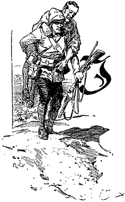
一八七八年のこと、私はロンドン大学で医学博士号を取得し、続けて陸軍軍医の義務課程も修めるべくネットリィへ進んだ。そこで課程修了したのち、正式に軍医補として第五ノーザンバランド・フュージリア連隊付となった。当時連隊はインドに駐屯していたが、私の赴任に先立ち第二次アフガン戦争が勃発、ボンベイに到着するやいなや、連隊は峠の向こう敵陣深くにあり、と聞かされることになった。だが境遇をともにする多くの士官たちと連隊を追い、無事カンダハールへたどり着くと、我が連隊がそこにいたので、すぐさま着任する恰好となった。
この戦役は多くの者に論功行賞をもたらす形となったが、私にはただ不運厄災あるのみだった。連隊を免ぜられ、次に任ぜられたのはバークシア連隊付で、かくしてマイワンドの激戦へ参加したのである。戦闘のなか、私はジェザイル弾を肩に受けたため、骨が砕け、鎖骨下動脈に傷を負ってしまった。すんでの所で殺気みなぎるガージ兵士の手に落ちそうだったが、助手看護兵マリが勇猛果敢な行動に打ち出て、荷馬の上に放り載せられた私は、マリによって安全な英軍戦線までうまく連れ帰されたのである。
つもりつもった疲労と負傷とが相まって、私は衰弱しきってしまい、そのため、おびただしい数の負傷兵と一緒にペシャワールの基地病院へ後送された。私は療養の末、病棟を歩き回り、ヴェランダで日光浴が出来るほどまで回復したのだが、そんなときインド領の呪いこと腸チフスにかかり、病床に伏してしまった。数ヶ月間、我が命は峠をさまよった。意識を取り戻し病状が上向いたときには、私はすっかりやつれ衰え、ついには医局から一刻も早く本国へ帰還させよ、との診断が下った。早速そのまま軍隊輸送船オロンティーズ号に乗せられ、一ヶ月後ポーツマス桟橋に上陸したのだが、私の健康は見る影もなく、祖国政府から向こう九ヶ月の静養許可をいただくという有様だった。
イングランドには親類知己がひとりとしておらず、空気のように気ままであり、一日一一シリング六ペンスの支給額の許す限りは勝手に過ごせた。このような状況下では、全帝国における惰気倦怠の掃き溜め、このロンドンに私が居着くのは当然のことだった。しばらくストランドのプライヴェート・ホテルに寝泊まりし、無味乾燥な生活を送り、金銭を湯水の如く使っていた。すると私の財源は底を尽き始め、そこで二者択一を迫られている現状にようやく気が付いたのである。この大都市を去り田舎へ引き払うか、もしくは今の生活を根底から改めるか。私は後者を選び、まずホテルを去ることを心に決め、洒落っけを幾分落としてもよいから、その分安い、そんな部屋を捜し始めた。
こういう結論に行き着いたその日、クライティリオン酒場の前に突っ立っていると、誰かに肩を叩かれた。振り返ってみると、なんとバーツで私の手術助手だったスタンフォード青年がそこにいたのである。この大都会ロンドンで知った顔を見て、私のさみしさもあらわれるようだった。昔日、スタンフォードとそれほど親しいわけではなかったが、私が心のこもった挨拶をすると、スタンフォードもうれしそうな顔を見せてくれた。私は喜びついでにホルボーンで一緒に昼食でも摂ろうと誘い、ふたりしてハンソム型馬車で出発した。
「ワトソン、今は何をしているんだ？」とスタンフォードは驚きを隠せず訊いてきた。ちょうど馬車がロンドンの雑踏をかき分け走っているときだった。「針金みたいに痩せて、肌の色も胡桃みたいじゃないか。」
私は我が冒険談を手短に聞かせようとしたが、話はホルボーンのなかまでもつれ込んだ。
不幸話が終わると、スタンフォードは同情混じりに言った。「とんだ災難だったね。今はどうしてるんだい？」
「下宿を捜していてな、何とか良い部屋を手頃な家賃で借りられんかと苦心しているのだが。」
すると話し相手は、「奇遇だな。そんな言葉を聞いたのは今日、君で二人目だ。」
「なら私の前に誰か？」と私。
「病院の化学実験室で研究をしているやつでさ。今朝嘆いていたんで訳を聞いてみると、良い部屋があるんだけど懐具合に見合わなくて、かといって家賃を折半する人間も見つからないとか。」
「何と！ 部屋と家賃を分け合うなら、私など打ってつけの男ではないか。私も独りよりはパートナーがいた方がいい。」
スタンフォード青年はワイングラス越しに驚きの目を見せた。「シャーロック・ホームズを知らないんだったね。きっと一緒に生活するなんてまっぴらだ、って言うよ？」
「彼と私では気が合いそうにないのか？」
「いやいや、気が合わないとかそういうことじゃない。ちょっと変わった発想をするやつでね――科学の方に目がないんだ。なかなかいいやつだとは思うんだけど。」
「医学生かね？」
「いいや……それが専攻が何かもさっぱり。解剖学に明るいし、一流の化学者とも思える。でも見る限り、体系的な医学の勉強をした様子はなさそうで。彼の研究はまさに気まぐれ奇抜、それでいて飛び抜けた知識の宝庫で、教授たちもびっくりだよ。」
「本人に何をしているのか問いたださなかったのかね？」
「いや聞いたことにはなかなか答えてくれなくて。本人の気が向けば、いくらでも話してくれるんだけど。」
「ぜひとも会いたいね。」と私。「誰かと同居するなら、研究熱心で物静かな男がいい。まだ全快したわけじゃないから、せかせかしたり、はらはらしたりするのはきつくてな。どちらもアフガニスタンで一生分体験してきたからもう結構だ。どうすれば、その君の知り合いとやらに会えるのかね？」
「きっと実験室にいるよ。」と相手は答える。「何週間も顔を出さないこともあるけど、朝夕ずっと研究のために詰め込んでいることもあってね。良ければ、食後に馬車で行こうか。」
「そうしよう。」と私は返答し、会話は別の話題へと移った。
ホルボーンを後にして病院へ向かう道中、スタンフォードは私が同居人と決め込んだ紳士について二三、突っ込んだ話をしてくれた。
「馬が合わなかったからって、僕のせいにしないでくれよ。実験室でたまに顔を合わせるくらいで、それ以上のことは知らないんだから。君が決めたことなんだから、絶対責任を押しつけるなよ。」
「馬が合わねば、別れるまでだ。どうもな、スタンフォード。」と私は相手を険しい目で見つめながら、話を続ける。「君はこの件に乗り気ではないみたいだ。その男、気性が荒いとか、何かあるんじゃないか？ 遠回しな話はなしだ。」
スタンフォードは笑い、「弱ったな、どう言えばいいやら。ホームズってやつはちょっと科学がすぎるんだよ――冷血と言ってもいい。たとえば、彼が友人に新発見の植物性アルカロイドを一服盛るとか、ありそうだね。もちろん悪意じゃなくて、単に精密な効能が知りたいがための探求心から来てるというんだから。本人の名誉のために言い添えると、そのためなら自分が飲むことだってやりかねない。こと厳密正確な知識に熱を上げているんだ。」
「結構じゃないか。」
「まあ、でも度が過ぎるとね。解剖室のなか、死体をステッキで叩いてまわると聞けば、その変人ぶりもわかってくるだろう？」
「死体を叩く！」
「そう、死後どの程度の時間まで打撲傷が現れるかの実証だとさ。現場をこの目で見たよ。」
「それでも医学生でないと？」
「ああ。その研究の目的も、神さましかわからない。まあ着いたから、人となりを自分で確かめることだね。」かくして我々は小道へ入り、大病院の一棟へ向かう小さな裏口をくぐった。私にはなじみの場所だから、案内もなく、殺風景な階段を上り、漆喰の壁とくすんだドアの続く長い廊下を進んでいった。突き当たりの前に、低いアーチ型の天井がついた廊下が分岐していて、実験室に至るのである。
そこは天井の高い部屋で、ガラス瓶が並んだり散らかったり、数限りなかった。足の低い大机があちこちにあり、上にはレトルトや試験管、青火揺らめく小型のブンゼン・バーナーなどが散らかっている。部屋にいたのはひとりの研究者で、奥の机にのめる恰好で、研究にいそしんでいた。我々の足音に振り返ると、うれしい声をあげ、上体を起こした。「発見！ 発見だ！」と男は私の連れに声を張り、手に試験管を持って走ってきた。「ヘモグロビンに沈殿し、それ以外には反応しない試薬を発見した。」たとえ金鉱を掘り当てたとしても、これほど喜びに満ちた顔はできないだろう。
「ワトソン博士だ、シャーロック・ホームズくん。」とスタンフォードは私を紹介してくれた。
「初めまして。」と誠意のこもった声で、男は私の手を信じがたいほど固く握りしめた。「アフガニスタン帰り、ですね。」
「どうしてそのことをご存じで？」と私は驚きのあまり聞き返した。
男はにやりとして、「お気になさらぬよう。当座の問題はヘモグロビンです。この我が発見がいかに重要かおわかりになりますね？」
「もちろん化学的に興味深くはあるが、実用の面では……」
「そんな、これは近年、もっとも実用的な法医学上の発見なのです。なんとこれでようやく血痕検出の完全無欠な方法が。さあこちらへ！」と男は夢中で私のコートの袖をつかみ、研究をしていた机へ私を引きずっていった。「鮮血を採取して。」と男は自らの指に長い針を刺し、流れ出た血のひとしずくを実験用ピペットで吸い取り、「さて、この少量の血液を一リットルの水に加えます。出来上がった混合物が見た目、真水と変わりないことはおわかりですね。血液の割合は百万分の一以下。しかし間違いなく目に見えた反応を得られると。」言うに同じくして、男は白い結晶を少々容器のなかに落とし、ついで透明の液体を数滴加えた。みるみるうちに中身はくすんだマホガニー色を呈し、ガラス容器の底に褐色粒子の沈殿が現れた。
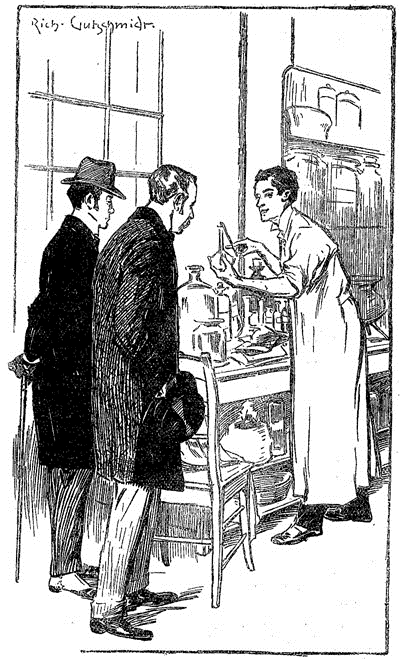
「はっはっ！」と男は声を張り上げ手を叩き、新品の玩具を与えられた子のように嬉々として見つめていた。「これをどうお思いで？」
「ずいぶん精密な検出法だと。」
「素晴らしい！ 素晴らしい！ 旧式のグアヤック法は非常に煩わしく、不鮮明なものだった。血球の顕微鏡検査とて同じ事。後者などシミが数時間経過すれば役立たず。だがこれならば、血液が古くても新しくてもうまく反応してみせる。この方法が以前に発案されていたなら、今ちまたをのうのうと歩く何百もの人間も、とうに自らの犯罪の報いを受けていただろうに。」
「そうですな。」と私は小声で返す。
「犯罪事件はいかなるときもこの一点いかん。何ヶ月も前に犯罪を起こした可能性のある、容疑者がいたとする。その人物の下着や衣服を調べると、褐色のシミが発見される。これは血痕か汚泥か、サビ、はたまた果汁、いったい何なのだ？ 数多くの専門家をも悩ます難題だが、それはなぜか？ 信頼しうる検出法がないからだ。さあ、このシャーロック・ホームズ法があるからには、もはや困ることはありますまい。」
話している間、男の目はぎらぎらと輝いていて、胸に手をあてがったかと思うと、喝采を送る想像上の聴衆に対する返礼のごとくお辞儀した。
「称賛に値する。」私は男の心酔ぶりに度肝を抜かれた。
「例えば、前年フランクフルトでのフォン・ビショフの事件。この検出法の存在あらば、まさしく絞首台行きだった。あるいはブラッドフォードのメイソン、名うてのマラー、モンペリエのルフェーヴル、ニューオーリンズのサムスン。この点が決め手になったやもしれぬ事件は何十件と挙げられる。」
「さながら歩く犯罪日誌といったところかな。」とスタンフォードが笑う。「その線で新聞を創刊したらどうだ。名付けて『過去の刑事事件簿』とか。」
「読み物としても面白いものになるでしょう。」とシャーロック・ホームズは返しながら、絆創膏を指の刺し傷に小さく貼り付けた。「気を付けねば。」と私に微笑んでみせると、「相当毒物に手を出していますもので。」男の差し出した手は、似たような絆創膏や強い酸による白痕とで、まだら模様のようになっていた。
「僕たちは用があって来たんだ。」とスタンフォードは切り出し、三脚の高い腰掛けに座ると、足でもう一つを私の方へ寄せた。「下宿捜し中のこの友人、君は折半する人間が見つからないとぶつくさ言っていたものだから、連れてきた方がいいかなと思ったんだ。」
シャーロック・ホームズは私と同居するという案を気に入ったようだった。「ベイカー街に目を付けたスイートが。きっと僕らの肌に合うかと。できれば、きつい煙草の匂いを我慢していただきたいのですが。」
「私もシップスを常々。」
「なら結構。化学薬品がいつも手放せなくて時折、実験も。ご迷惑では？」
「全然。」
「ふうむ――他に僕の欠点はと。たびたびふさぎ込んで、そのまま幾日も口を利かないことが。そのときは、無愛想だなんて思わないでいただけたら。少し放っておけば、すぐ元に戻ります。あなたも言っておかなければならないことは？ 同居を始めるにあたって、お互いの欠点を知っておけば、ふたりに好都合でしょう。」
反対尋問のような状況になり、私は笑ってしまった。「私はブル仔飼いでして、それからまだ神経が参っておるものですから、騒々しいのはいけません。とんでもない時刻に起きたり、極端な怠け者でもあります。元気なときは他にも色々悪癖があるのですが、今はこれくらいなものです。」
「ヴァイオリンの演奏は、騒がしい部類に入るでしょうか？」と男は不安げに尋ねる。
「奏者によりけりですね。ヴァイオリンの巧みな旋律は神々にも癒しとなりましょうが、下手な旋律となると……」
「ああ、なら問題ありません。」と男はにんまりとして、「もう決まったも同然――あとはあなたが部屋を気に入るかどうか。」
「いつにしましょう？」
「明日の正午、ここに来ていただければ。ふたりで行って、細かいことも決めましょう。」
「わかりました――正午きっかりに。」と私は男と握手を交わした。
我々は化学実験に戻った彼を残し、ホテルへ向かって歩き出した。
「それにしても。」と私は立ち止まり、スタンフォードの方を向いて、ふと訊ねる。「何がどういうわけで、あの男は私がアフガニスタン帰りと知っていたんだろう。」
すると連れは不可解な笑みを浮かべる。「そいつがあの男の変わった癖なのさ。みんな、その手口を知りたがる。」
「ほお！ 謎というわけか！」と私は両手をこすり合わせた。「味なことを。引き合わせてくれて、君には本当に感謝している。『人間の真に研究すべくは人なり』とな。」
スタンフォードはさよならついでに、「まず、あの男を研究してみることだ。あいつこそが難問だとわかるよ。それに絶対、こっちよりも向こうに自分のことを知られてしまうからさ。じゃあ元気で。」
「ああそっちこそ。」と返し、ホテルまでの道をそぞろ歩きながら、私は我が新しき知己に並々ならぬ興味を覚えていたのであった。
［＃改ページ］
第二章 演繹推理学
翌日、我々は約束通りに合流し、懸案のベイカー街二二一番地Ｂの部屋を見に行った。二つの快適な寝室と一つの大きな居間からなっていて、居間は風通しもよく、家具も揃っていて、採光のための大窓が二つあった。まことに願ったりかなったりな部屋で、家賃も二人で分けるには手頃な値段だった。その場で契約することに決め、すぐさま部屋は我々のものとなった。その晩、私はホテルから身の回りの物を運び込み、続いて翌朝、シャーロック・ホームズも箱やら旅行鞄やらをいくつも運んできた。一両日中は二人とも荷ほどきしたり、私物をうまく置こうと悩んだりしながら時間をとられたが、終えると徐々に腰も落ち着いてきて、新しい環境に慣れ始めていった。
ホームズとの生活にさほど難儀はなかった。物静かで普段から規則正しい。夜十時を越えて起きていることもまれで、朝食は欠かさないし、私が起床する前に出かけていた。あるときは化学実験室で一日を過ごし、またあるときは解剖室、たまに長い散歩をすると思えば貧民街の方までも行くようだった。同居人の熱が何より高まるのは、格好の仕事についているときだ。しかし時としてある種の反動に襲われ、何日もずっと居間のソファに寝そべり、朝夕通して物も言わず微動だにしないことがあった。こういった際、同居人の瞳がとろんと、うつろになるのに私は気づいた。麻薬の常用癖でも疑いたくなるところだが、同居人の生活は日々けがれなく、つつましやかなため、そんな考えは問題外だった。
数週間が過ぎ、同居人に対する興味、あるいは同居人の生き甲斐に関する好奇心が日増しに膨らんでいった。風貌は通りすがりの者の目でさえも引きつける。背は六フィートを越える程度だが、ひどく細身のためそれ以上ののっぽに見える。先に述べた脱力期間をのぞけば、眼光は射抜くように鋭く、筋の通った鷲鼻のせいで、顔立ちから意志固く用心深いという印象を受ける上、牙型の顎からもその果断さが伺える。手には相変わらずインクや薬品の染みがついていたが、手先はまったく器用なようで、壊れやすい研究用具の扱いを見物したときに何度も目にしている。
読者諸賢は私を救いがたいお節介者だと思われるだろう。私がこの男にひどく好奇心をくすぐられ、身の上を包み隠す男に対して、何度も口を割らせようとしたのも事実である。だが判断を下す前に、我が生活の無味乾燥と、興味をそそるものがあまりにも少なすぎたということも思い出していただきたい。健康を考えると雲ひとつない快晴でなければ外へ出られず、訪ね来て単調な毎日を打破してくれる友人もない。こんな風であるから、同居人を取り巻くささやかな謎でさえ万々歳で、時間を惜しまず、解きほぐそうと躍起になるのだ。
同居人は医学を学んでいるのではなかった。その点は本人もスタンフォードの言う通りだと問いに答えた。しかるべき学位を取るための研究課程をこなしているわけでも、知的世界の入り口となるどこぞの権威ある大学の門を叩こうとしているわけでもない。しかしある種の学問にたいへん熱心であり、偏ったきらいがあるものの、知識は度外れに豊富かつ仔細なため、その意見に私ははっとさせられるのだ。何か確固たる目標を見据えることもなく、勉学に励んだり正確な情報を求めたりする者がいようものか。ただ漫然と本を読んでいても、厳密な知識など現れてはこない。よほどの理由がなければ、小さな事には神経を使わないはずであろう。
無知も、博学と同様に同居人の特徴の一つである。当世の文芸、哲学、政治などを知らない。私がトマス・カーライルを引き合いに出したときなど、無邪気にも何の人で何を為したかと訊くのだ。それならまだしも、私の驚きが頂点に達したのは、偶然、同居人がコペルニクス理論も太陽系の配置も知らぬとわかったときである。この十九世紀に生きる文明人でありながら、地球が太陽の周りを回っていることを知らぬとは、いやはや驚愕の事実であり、私は理解に苦しんだのだった。
同居人は我が動天の表情に微笑む。「驚きのようだね。だが知ってしまったからには、全力で忘れるとしよう。」
「忘れるとな！」
「そう。」と同居人。「思うに、そもそも人間の頭脳は、何もない屋根裏の小部屋のようなもので、選りすぐりの家具を揃えておかなければならない。未熟者は出会ったものすべてを雑多に取り込むから、役立つはずの知識が詰め詰めになるか、せいぜい他とない交ぜになって、挙げ句の果てには取り出しにくくなる。しかし腕の立つ職人なら、頭脳部屋にしまい込むものにはとても敏感になる。仕事の役に立つ道具だけを置いておくのだが、各種全般を揃え、完璧に整理しておこうとする。この小部屋の壁が伸縮自在で、際限なく膨らませると思っているなら、それは違う。いいかい、知識が一つ増えるたびに、前に覚えたものを忘れることになるのだ。それゆえに肝要なのは、有用なものを押し出してしまうような、無駄な情報を持たないことだ。」
「しかし太陽系くらい――！」と私が食い下がると、
「そんなものがいったい何になる？」と同居人は我慢ならないとばかりに口を挟む。「君によると、僕らは太陽の周りを回るらしい。しかしたとえ月の周りを回ったとて、僕や僕の仕事には一ペニィの得にもならない。」
その仕事は何なのかと、私は問いたくて仕方なかったが、同居人の態度から、その質問は歓迎できないということが伺えた。しかしこの短い会話から色々巡らし、私なりに演繹というものを試みようとした。当人は目的にかなわない知識は取り入れないと発言した。裏を返せば、持っている知識はすべて当人にとって有益だということだ。小出しに拾った様々な長所を、知っているだけ思い浮かべてみて、ついには鉛筆を取り、書き立てるに至った。この表を作り終えたとき、私は思わず吹き出してしまった。このようなものだ――
シャーロック・ホームズ――その能力値
一、文芸の知識――ゼロ。
二、哲学の知識――ゼロ。
三、天文の知識――ゼロ。
四、政治の知識――不十分。
五、植物の知識――物による。ベラドンナ、阿片、毒物一般に詳しい。実用園芸には無知。
六、地学の知識――実用的だが、限られている。様々な場所の土を一目で見分けられる。帰宅した私のズボンに付いたはね跡を見て、色や質感からロンドンのどこで付けたものか言い当てるほど。
七、化学の知識――該博。
八、解剖の知識――正確だが、体系的ではない。
九、怪奇事件の知識――計り知れない。今世紀中の惨事をすべて、詳細にいたるまで知るものと思われる。
一〇、ヴァイオリンの名手。
一一、シングル・スティック、ボクシング、フェンシングの達人。
一二、英国法の極めて実用的な知識あり。
ここまで書き上げたところでどうでもよくなり、私は紙を暖炉へ投げ込んだ。「結局わかるのは、あの男が何に打ち込んでいるかだけではないのか。できることをうまく照らし合わせて、それらがみな必要となる職業を探し当てたところで。」と頭によぎり、「ならばすぐにやめた方がいいな。」となったのだ。
ところで、先に触れた同居人のヴァイオリンの能力、非常に目を見張るものがあるが、それ以外の才と同様に奇抜でもあった。小品ばかりか難しい曲も弾けることは、要望に応えて、メンデルスゾーンのリートや私のお気に入りを何曲か演奏してくれたことからもよくわかる。しかし同居人に任せると、およそ曲らしい曲さえ弾かず、聴いたことのある旋律すらも弾こうとしない。夕べになると同居人は肘掛椅子にもたれかかり、目を閉じ、膝の上に立てかけたヴァイオリンを思うままに弾きつづる。折々、弦の奏でる音が憂鬱に響いたり、あるいは明るく幻想的なものとなったりする。その場その場の同居人の気持ちを如実に表すものとだけはわかるが、この音楽が思索の助けとなるのか、ただ単たる気まぐれや思いつきの所産なのか、私には判断しかねた。こんな腹立たしい演奏には文句を言ってもいいのかもしれないが、同居人はいつも締めに私のお気に入りの旋律を流れるようにいくつも奏でてくれるので、私はわずかな埋め合わせと見て取って我慢していた。
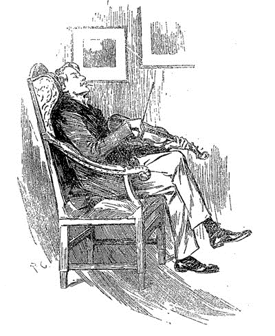
最初の数週間は来客もなく、この同居人には私と同様に友がいないのではないかと感じていた。だが程なくして、多くの知己、それもあらゆる階層の友人がいるとわかった。そのひとりに、血色が悪く、黒目で、ネズミのような顔をした小兵の男がいる。レストレード氏というそうで、週に三、四回は訪ねてきた。ある朝には、流行の身なりをしたうら若き女性が訪れ、三十分以上もいたと思えば、同じ日の午後には、今度は白髪混じりでみすぼらしいユダヤ商人風の客がたいへん興奮したていでやってきて、またそのすぐ後に粗末な姿の老女までもが現れるといった次第。別の機会には、白髪の老紳士が同居人に会いたいと言って来たし、また別珍の制服に身を包んだ駅詰めの運送屋がやってくることもあった。このとらえどころのない人々が姿を現すたびに、シャーロック・ホームズは居間を使わせてくれないかと頼むので、よく私は寝室に引き上げたものだ。手間を掛けてすまないと、いつも同居人は謝り、「部屋を仕事場にせねば。みな依頼人でね。」と言う。ここでまた私はずばり問いただす機会を得たわけだが、やはりまた気が引けて、図々しくなりきれない。それとなくも言えない、何らかの強い動機があってのことだとその時は思ったのだが、程なくして当人の口からこの事に触れたので、謎は氷解した。
忘れもしない、あの三月四日のこと、私は普段よりも少しばかり早起きすると、折しもまだシャーロック・ホームズは朝食中だった。下宿の女主人は私の寝坊癖にすっかり慣れていたため、私の席も、コーヒーすらも準備されていなかった。人間、不条理な怒りもあるもので、私はこと荒げに呼び鈴を鳴らし、起きたという合図を送った。それから卓上の雑誌をふと取り上げ、しばし落ち着こうと思った。同居人が黙々とトーストをほおばっているかたわら、とある記事の見出しに鉛筆で印が付いていたので、私は何とはなしに目を通してみた。
題は「現世の書」と少々意欲的なもので、ある証明を試みていた。注意深い者なら、綿密で体系的な調査をもってすれば、出くわすあらゆるものからおびただしいことが知りうるという。読んだ印象としては、詭弁と滑稽のごった煮と言ったところか。論理は緻密で熱が入っているものの、演繹による結論が実に誇大偏向そのもの。筆者の主張からすると、一瞬の表情、筋肉の動き、視線まなざしから人間の秘めたる考えを推し量ることが出来るという。さらに彼は、観察と分析を極めれば、何事にもごまかされないとも言い切り、これをエウクレイデスの諸命題と同様に完全無欠だと結論づけた。慣れない者はその帰結に面食らうかもしれないが、そこに至るまでの筋道を知らぬ間は、筆者を死霊使いと思われてもやむなし、とも。
その筆によると、「論理的な思考をすれば、一滴の水から大西洋やナイアガラといったものの可能性を、どちらの見聞がなくても導き出すことができる。すべて現世はひとつの大いなる鎖、一つの輪さえ知らば、おのずと本質も知れる。他の技芸と同様に、分析と演繹の学問も不断の努力修練の末、得られるものだ。名人の域に達するまでには、人生はあまりにも短い。この道を求める者は、最も難解な精神面の推理を始めるより先に、初歩的な問題をこなすことから始めるといい。ある男性と出会ったときに、まず一目で男の経歴から職業まで見て取れるくらいにはなるべきだ。かかる訓練は面倒かもしれないが、ひいては観察能力をとぎすませ、目のつけどころを教えてくれることとなる。男の指の爪から、上着の袖、靴、衣服の膝、人差し指と親指のたこ、表情、シャツのカフスにいたるまで、そのひとつひとつが男の職業をありありと物語っている。これらを総合しても、しかるべき求道者の光にならないとなれば、それこそ驚天動地というものである。」
「なんたる妄言綺語！」と私は雑誌をテーブルに叩き付けた。「こんな屑記事、生まれて初めてだ。」
「何のことだ？」とシャーロック・ホームズが訊いてきた。
「いやなに、この記事だよ。」私は食卓に落ち着くと、卵用の匙で指し示す。「君が読んで、印を付けたんだろ？ うまく書けているのは認めるが、癪に障る。どうせ書斎に引きこもって、肘掛椅子にもたれかかりでもして、筋が通るようこんなちんけな逆説をこしらえたんだろう。実用には向かんよ。こいつが地下鉄の三等客車にぶち込まれて、同乗者全員の職業を当ててみろ、なんて言われるところを見てみたい。こいつの負けに千倍賭けてもいい。」
「金の無駄だ。」とホームズの平板な声。「その記事だが、僕が書いた。」
「君がか！」
「そう、僕は観察と演繹の才を兼ね備えている。僕がそこに書いた理論は、君には鵺みたいな話に思えるかもしれないが、実用も実用――実用的すぎて僕はこれでパンとチーズを得ているくらいだ。」
「どうやって？」と私は不本意ながらも尋ねる。
「まあ、これが僕の生業でね。おそらく世界中に僕一人、諮問探偵なのだ、と言っても君にはわからないだろうね。ここロンドンには多くの刑事探偵と、多くの私立探偵がいる。この人々が窮すれば、たちまち僕の元へ軌道修正してもらいに来るのだ。証拠はみな向こうで揃えてくるから、僕は犯罪史の知識をたぐるだけで、大抵はまっすぐにできる。悪事には強い同族的類似性があってね、一〇〇〇の事件の詳細を自家薬籠中のものにして、一〇〇一番目の事件が解けないとすれば、それこそ奇妙な話。レストレードは馴染みの刑事で、彼は目下、偽造事件の煙に巻かれている最中。だから僕の元へ来た。」
「なら他の人たちは？」
「おおかた民間の興信所から回されてきた人々だ。みな何かしら厄介事を抱えて、ささやかな解決を望んでいる。僕はその話を聞き、人々は僕の意見を聞き、さすれば報酬は懐の中。」
「だが本気かね？ では君は部屋を出ずして謎が解けると言うのか、他の人間は事細かに知っていたにもかかわらず、まったくお手上げだったというのに。」
「無論。その筋なら、ある種の直観力がある。時として少々込み入った事件が出来することもあるが、そのときは動き回って、直に物事を見ねばならんよ。ほら、僕には豊富な知識があるから、問題に当て嵌めて事を格段に処理しやすくできる。この記事にあるような、これら演繹推理の公式。君にはあざけりの対象でも、僕にしてみれば、実地におけるその価値は何物にも代え難い。僕の観察力も二つ目の天分だ。君は驚いていたね、初対面の時、アフガニスタン帰り、などと僕が言ったものだから。」
「人から聞いたに決まっとる。」
「そんなことはない。わかったのだ、君がアフガニスタン帰りだと。いつもの癖で、一連の思考が頭を一瞬で駆けめぐって、中の段階を意識せずに結論へと行き着く。ただ中間がないわけではない。一連の推理を追うと、『ここに医師風の男がいる、だが軍人の雰囲気もある。では軍医なのは明らか。彼は熱帯地方から帰ってきたばかりだ、というのも顔が黒いが、地肌でない上、なにしろ腕が白い。彼は艱難病苦を経験している、やつれた顔がなによりの証拠だ。左腕を負傷していて、ぎこちなく不自然な動きをしている。熱帯地方のどこに、英国軍医が苦難を経験し、腕に負傷を受けてしまうような所がある？ アフガニスタンをおいて他になし。』すべて一連の思考は一秒に満たない。そしてアフガニスタン帰りだと僕が開口すれば、君は驚いたという次第。」
「説明してみれば、簡単だな。」と私は微笑んだ。「君はエドガー・アラン・ポオのデュパンを彷彿とさせるね。物語の外にこんな人物がいるとは、思ってもみなかった。」
シャーロック・ホームズは立ち上がって、パイプに火をつけた。「君は褒めるつもりで僕をデュパンになぞらえたのだろうが、まあ僕にしてみれば、デュパンなぞひどく劣等な男だ。考え込む友人の前で突然、それも一五分も沈黙したあとで、もっともらしい意見を述べる。あのやり口が実に露骨で表層的。それなりに分析力に恵まれてはいたには違いなかろうが、ポオが思っていたほど非凡な人間とはお世辞にも言い難い。」
「ガボリオの作品は読んだことあるかい？ ルコックなら君の探偵像に合致するだろう？」
シャーロック・ホームズは冷ややかに鼻であしらった。「ルコックは哀れなへっぽこだ。」と声は怒り調子に、「褒められたことは、その根気くらいか。あの本を読むと、本当に気分が悪くなる。問題は、正体不明の囚人の身元確認一点。僕なら二十四時間以内にやってみせる。ルコックは六ヶ月あたりはかかったな。いい教材にはなろう、探偵の避けるべきことがわかる。」
自分の褒めた二人の人物を、こうも上から目線で扱われては、私もそれなりに腹が立つ。私は窓際へ歩み寄り、賑やかな通りを見下ろした。「この男、なるほど賢いかもしれんが、すこぶる自負心が強すぎる。」と私は思った。
「近頃は犯罪も悪人もさっぱりだ。」と同居人は不平たらたらで、「僕の頭脳が泣くよ。名遂げるだけの才能が自分にあることは、重々承知している。過去現在に及んで、かくも研究に研究を重ね、なおかつ犯罪捜査の天分を有している人間が、僕以外にいるものか。それがどうだ、捜査に値する犯罪そのものがない。あってもへっぽこ悪事、動機が見え透いているから、スコットランド・ヤードの刑事どもでも見破れてしまう始末だ。」
その高慢ちきな口調に、私のいらだちは収まりそうにないので、話題を変えるのが賢明だと判断した。
「あの男、何を捜してるのだろう。」と私が指差した先には、素朴な服装をした体格の良い男がいた。通りの向かい側をうろつき、せわしなく番地を確かめている。大きな青色の封筒を手にし、見たところ手紙の配達人らしかった。
「あの海兵隊の退役軍曹のことか？」とシャーロック・ホームズは言う。
私が心の中で、「このほら吹き男爵が！ 確かめられないからと――」
と思うか思うまいかのうちに、目線の先にあった男が我が下宿の番地を見つけて、道を急ぎ足で横切ってきた。強く叩く戸の音、階下から太い声、階段を上る重い足取りが次々に聞こえた。
「シャーロック・ホームズさん宛です。」と言ってこの部屋に踏み入り、我が友人に手紙を渡した。
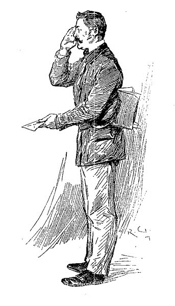
これ同居人の鼻をへし折る機会なり。こうなることも考えず、当て推量したのだろう。私はできるだけ平静を装って、「ちょいと君、職業を聞いてもいいかな？」
「便利屋であります。制服は繕いに出していまして。」と野太い声で答えた。
「で、昔は？」と尋ね、同居人の方に少し意地悪い目を向ける。
「軍曹であります、海兵隊軽装歩兵でありました。他には？ しからば失敬。」
男は踵を付き合わせ、敬礼をし、去っていった。
［＃改ページ］
第三章 ローリストン・ガーデン事件
正直言って、かくもまざまざと見せつけられては驚くほかなかった。同居人の理論は実にかなっているのだ。この男の分析力への畏怖の念がつのったわけなのだが、心のなかに一抹の疑念が残る。これはみな、私をくらまそうと仕組んだ話ではないのか。もっとも騙すにしても、その理由はつゆも思いつかないが。私が目をやったときには、同居人ももう手紙を読み終えており、瞳もとろんとして輝きを失い、心ここにあらずといった感じだ。
「いやはや、どう演繹したものか。」と私。
「何をだね。」その声はとげとげしげだ。
「だから、あの男が海兵隊の退役軍曹だと。」
「時間が無駄になる。」とぶっきらぼうに答えたものの、すぐに笑みを浮かべ、「これは失礼。つい君が考えの邪魔をしたものだから。当然のこととばかり。とすると君は、海兵隊の軍曹とはわからなかったと。」
「ああ、まったく。」
「だが、知るは易く、解くは難し。二足す二は四であることを証明せよ、と言われれば、君でも難しいと思うだろう。だが事実と飲み込める。すなわち道を横切る男、手の甲に青く大きな錨の刺青を視認。海の男だ。それでいて立ち居振る舞いは軍人、人並みのほおひげもある。我が国には海兵隊があったな。どこか偉そうで、なるほどきびきびした男だ。君も見ているはずだ、あの男が頭をもたげ、短い杖を振り上げたのを。それに顔を見ると生真面目で立派な中年の男――すべての事実から、僕は彼が軍曹であったと信じるに至った。」
「なんとな！」と私は思わず声を出す。
「いつものことだ。」とホームズは言ったが、私があからさまに驚き褒めるので、その表情もうれしそうに見えた。「先ほど犯罪がないと言ったが、僕は間違っていたらしい――これを見たまえ！」と便利屋が配達した手紙を私に投げてよこす。
「なんと。」ざっと目を通してみて、私は声を荒げる。「これはひどい！」
「常軌をわずかに逸す、といったところか。」かたや静かな声。「すまないが、読み上げてくれたまえ。」
私の読んだ文面は以下の通りである。
親愛なるシャーロック・ホームズ氏
昨晩、ブリクストン通りにほど近いローリストン・ガーデンズ三番地に、よからぬ事件がありました。巡回中の警官が朝の二時頃、その家屋に灯りを見つけ、空き家ということもあって怪しいとにらんだところ、ドアが開け放しになっており、通りに面した部屋に紳士の死体を発見しました。身なりはよく、懐の名刺には『イーノック・Ｊ・ドレッバー アメリカ合衆国オハイオ州クリーヴランド』とあります。盗まれた形跡は何もなく、死に至った事情を示すものもありません。部屋に血痕はあるのですが、外傷もなく、この空き家に来た経緯も、ほとほと見当もつきません。まったく何から何まで難事件です。現場へお出でになるなら、十二時まではそこにおります。ご連絡くださるまですべて現場はそのままに。お越しになれない場合も、隅々まで事件の詳細を申し上げますので、ご意見賜れれば幸いに存じます。
昨晩、ブリクストン通りにほど近いローリストン・ガーデンズ三番地に、よからぬ事件がありました。巡回中の警官が朝の二時頃、その家屋に灯りを見つけ、空き家ということもあって怪しいとにらんだところ、ドアが開け放しになっており、通りに面した部屋に紳士の死体を発見しました。身なりはよく、懐の名刺には『イーノック・Ｊ・ドレッバー アメリカ合衆国オハイオ州クリーヴランド』とあります。盗まれた形跡は何もなく、死に至った事情を示すものもありません。部屋に血痕はあるのですが、外傷もなく、この空き家に来た経緯も、ほとほと見当もつきません。まったく何から何まで難事件です。現場へお出でになるなら、十二時まではそこにおります。ご連絡くださるまですべて現場はそのままに。お越しになれない場合も、隅々まで事件の詳細を申し上げますので、ご意見賜れれば幸いに存じます。
心から トバイアス・グレグソン
「グレグソンは、スコットランド・ヤード随一の切れ者だ。」とこの友人は言う。「役立たずの中でも、彼とレストレードだけはまだましなのだ。ふたりとも立ち回りが速く馬力もあるが、頭が固い――それはもうひどく。互いに敵意むき出しといった風で、さながら社交界の花形の嫉妬合戦だ。両方に手がかりを教えようものなら、この事件も争いの種になるだろうね。」
平然な顔でさらりと言ってのけるその様に、私は一瞬言葉を失ったが、気を取り直して、「それはぐずぐずしてはおれんな。ちょっと馬車を呼んでこようか。」
「行くかどうかはまだわからない。ものぐさな点では人に負ける気はしないからね――とはいえ、それは発作が起こったときのことで、時によると元気が出てくることもあるが。」
「さあ、今こそ待望のその時だ。」
「いいかい、だからどうだと言うんだ。考えてもみたまえ、事件を解決しても結局、手柄はグレグソンやレストレード、警察どもの懐。僕は黒子に終わるのみだ。」
「助けを求められておるのに。」
「そうだ。彼は僕の方が上手だと知っているし、認めてもいる。そのことを第三者に知られるくらいなら、舌を噛みきるだろう。まあ、行って独自捜査をするのも悪くない。手柄なくとも、彼らを笑い飛ばすことくらいは出来る。よし！」
同居人は外套をひっかけ、せわしなく支度を始める。憂いがやる気に取って代わったようだ。
「君も帽子を。」と同居人が言う。
「私に来いと？」
「ああ、何もすることがないなら。」その一分後、我々はハンソム馬車に乗り込んで、ブリクストン通りへ急いだ。
霧が深く、視界の悪い朝だった。屋根の上に薄暗い面紗がかかり、下の通りの汚さを鏡に映すがごとく見えた。同居人は気分も上々で、クレモナのことや、ストラディヴァリウスとアマーティの違いを滔々と語る。かたや私は黙り込んでいた。空は曇り、手がける事件は憂鬱、私とてふさぎ込まずにはいられなかった。
「頭の中に、この事件のことはなしか。」と私は切り出し、ようやくホームズの音楽講義の腰を折った。
「まだデータがない。」と同居人。「証拠を揃えず推理しようなど、致命的な誤りだ。判断に偏りが出る。」
「すぐにでも手に入るさ。」と返すと、私は通りを指差して、「ほら、ブリクストン通りだ。あれが問題の家だ。きっとそうだ。」
「いかにも。御者、ここで結構！」まだ一〇〇ヤードはあるというのに同居人は下りると言い張り、残りは徒歩で行くことになった。
ローリストン・ガーデンズ三番地は禍々しく凄みがあった。通りから路地に入った所にある四つの家のうちの一つで、二つは人が住み、残りの二つは空き家だった。その空き家の窓は三段に並び、黒々と開いた様はどんよりと虚ろであった。せめてもの救いは、あちこちの窓ガラスに『貸家』の札が、水晶体を濁すかのように貼られていたことだ。家と道の間にはそれぞれ小さな庭があり、しなびた草がそこかしこに生え散らかっていた。庭を横切って狭い通路があった。黄色がかっていて、おそらく粘土と砂利を混ぜて作ったのだろう。夜通しで降った雨のため、水たまりだらけだった。庭を仕切る塀は高さ三フィートで煉瓦造り、上に横木がついていて、屈強な巡査がもたれかかっていた。その周りで幾人かの野次馬が首を伸ばして目を凝らし、中の様子を垣間見ようとしていたのだが、無理そうだった。
私の頭のなかでは、シャーロック・ホームズはすぐさま家へ飛び込み、事件の捜査に取りかかるはずだった。しかし本人の考えとはかけ離れていたようだ。事件だというのに、ふらふらと、気取ったとさえ思える調子で通路を行きつ戻りつ、ただ地面を見、空を仰ぎ、向かいの家から壁沿いまでにらみつけていく。その方面を調べつくすと、今度は目を地面に釘付けにしつつ、通路、というより通路脇の草沿いをゆっくり歩いていった。二度立ち止まり、そのうち一度はにんまりとした顔が見え、満足げに何事か呟くのが聞こえた。ぬかるんだ土の上に足跡がたくさんありはしたが、なにぶん警官が出入りした後だ。どうして読み取れるものがあるとこの男が思ったのか、私には知る由もなかった。ただ同居人の頭の回転の速さは重々承知であったから、私ごときにはわからぬことをいくつも見つけたに違いない。
家の戸口で、我々はひとりの男に出会った。長身で色白、髪は亜麻色、手に手帳を持っていて、こちらへ駆け寄ってくるや、友人の手を握って強く振り、言葉を並べ立てる。「ご足労を。すべてそのままにしておきました。」
「あそこ以外は。」と友人は男の言葉をつなぎ、通路を指し示した。「水牛の群が通り過ぎても、あれほど汚くはならない。ならば当然、捜査はついているんだろうね、グレグソン。こうなる前に。」
すると刑事は言い訳じみた調子で、「吾輩、中の仕事にかかりっきりで。同僚のレストレードですな、ここは。ここの担当をと、任せておいたので。」
ホームズは私に目を流し、意地悪く眉を上げて見せた。「現場に警部とレストレード、両者揃い踏み。第三者の出る幕などなさそうだ。」
グレグソンは自慢げに手をもみ、「打てる手はすべて打ちましたからな。だが変わった事件ですから、お好きかと思いまして。」
「ここへは、馬車ではあるまいね。」とシャーロック・ホームズ。
「ええ。」
「レストレードも？」
「ええ。」
「では部屋を見に行くとしよう。」突拍子もない質問をした後、同居人はつかつかと家の中へ入っていった。グレグソンは顔に驚きを浮かべながらも、ついていった。
むき出しの板、埃まみれの短い廊下は、台所と洗い場に続いていた。途中に右と左、扉が二つ開いたままになっていた。片側は見たところ何週間も閉じられていたようだった。もう片側は食堂に続いていて、その食堂が謎の事件の現場だった。ホームズが踏み込んだので、私もあとに続いた。死の存在に揺らぐ心を抑えながら。
四角い大部屋だった。家具がないせいか、ずいぶん広く感じられる。壁紙はけばけばしく、大きなカビが所々に見られた。またあちこちで壁紙は裂け、だらんと剥がれていたため、下の黄色い壁土があらわになっていた。扉の反対側にはこれ見よがしに暖炉があり、炉棚は白い模造大理石で作られていて、隅には短くなった赤いロウソクが立ててあった。窓はひとつしかなく汚れていたため、部屋中がぼんやりと薄暗く、埃にまみれているせいか、何もかもがいっそうくすんでいるように思われた。
以上の描写は、みな後で見たものだ。そのときの私の注意の先は、部屋の中央、床の上にのびたひとりの、動きのない、ぞっとする人影にあった。生気を失った目が、色のない天井を見つめていた。四三、四才ほど、中肉中背、いかり肩、黒い蓬髪、短い無精ひげの男。厚ぼったい黒ラシャのフロック・コートとチョッキ、明るい色のズボンに身を包み、清潔なカラーとカフスがついていた。丁寧に整えられた山高帽が男のそばの床に落ちている。両手は拳を握り、腕は外にだらりと投げ出され、踵と踵がくっついている。死の間際に相当苦しんだのであろう。硬直した顔には恐怖の相が現れており、その憎悪に充ち満ちた表情は、本当に人間のものかと疑わずにはいられなかった。狭い額、低い鼻、尖ったあごが一緒になったような、殺伐とした顔のゆがみよう、そしてもがき苦しんだ不自然な姿勢が、死体を、変な表現だが、まるで猿のごとく思わせた。私も様々な死に方を見てきたが、ロンドン郊外の大動脈にほど近い、暗いすすけた部屋の中のこの男ほど、背筋の凍る死に様はなかった。
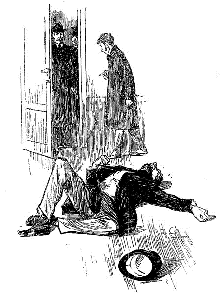
レストレード、相変わらず細身でイタチのような男が扉のそばに立っており、同居人と私に挨拶をしてきた。
「この事件、一騒ぎ起こしますよ、先生。あたしもひよっ子じゃありませんが、こんな山は初めてです。」
「手がかりが一つも？」とグレグソンが聞くと、
「何ひとつ。」とレストレードがうなずく。
シャーロック・ホームズは死体に近寄り、膝をつき、一心に調べ始めた。「外傷がないのは確かかね？」と辺りに飛び散る多くの血痕を指さす。
「間違いない！」とふたりの刑事は声を張った。
「では、無論この血はもうひとりの人物――おそらく犯人のものだ、殺人が行われたのなら。三四年のユトレヒト、ヴァン・ヤンセンの死の状況を彷彿とさせる。心当たりは、グレグソン？」
「いえ。」
「勉強することだ――必ず。日の下に新しきものあらざるなり。何事にも前例がある。」
と言いつつ、すばしこく指がここ、そこ、いたるところを飛び交い、触れたり、押したり、ボタンを外したりして、調べ続けていた。目は、私が先に書いた表情に同じく、遠くを見つめている風だった。速やかに調べが進みすぎるため、どこまで綿密にやっているのか、我々にはわからなかった。最後に死体の口元を嗅ぎ、エナメル革の靴底をちらと見た。
「死体は寸分も動かしてないね？」
「捜査上、必要最低限。」
「死体安置場に運んで結構。もう得られることはない。」
グレグソンはすぐ近くに担架と四人の男を控えさせていたようで、呼ぶなり部屋に入ってきた。その見知らぬ男は乗せられ、運ばれていった。その際、ひとつの指輪が落ち、軽く音を立て、床を転がった。レストレードは拾い上げて、訝しげに目を見開いた。
「女がいたんだ、女物の結婚指輪です。」
と声を上げながら、手のひらに載せて差し出してみせた。我々はみな群がり、ながめ回した。飾りのない金の指輪で、どこぞの花嫁の指にはめられていたことは明らかだった。
「事が錯綜しますな。」とグレグソン。「やれやれ、ただでさえ複雑であったのに。」
「事が簡単になるとは考えないのだね。」とホームズが述べる。「ながめたところで何も始まらない。ポケットからは何が？」
「すべてこちらに。」とグレグソンは雑然と物が置かれた階段の下の方を示す。「金の懐中時計、ロンドン・バロード・九七一六三番。金のアルバート時計鎖、純金で重い。金の指輪、フリーメイソンの印つき。金の記章――ブルドックの頭を形どり、瞳はルビィ。ロシア製の革の名刺入れ、クリーヴランド在住イーノック・Ｊ・ドレッバーの名刺入り、シャツのＥ・Ｊ・Ｄと一致。財布はなく、七ポンド一三シリングもの大金を生で。ボッカチオの『デカメロン』のポケット版、見返しにジョーゼフ・スタンガスンの名前入り。二通の手紙――一通はＥ・Ｊ・ドレッバー宛、もう一つはジョーゼフ・スタンガスン宛。」
「住所は？」
「ストランドの米国両替商会――留置。どちらもガイオン汽船会社から来ていて、リヴァプールから出航する船について書いてあります。どうも、この不運な男はニュー・ヨークへ戻ろうとしていたようですな。」
「この男、スタンガスンの照会は済んでいるだろうね？」
「いち早く。」とグレグソン。「新聞全紙に広告を出しまして、部下の一人を米国両替商会にやってありますが、まだ戻っておりません。」
「クリーヴランドへは？」
「今朝電報を。」
「内容を口にしてみたまえ。」
「簡単に事件のあらましを述べてから、何か役立つ情報があるとうれしい、と打ちました。」
「大事と思えることを、逐一聞かなかったのか。」
「スタンガスンのことを聞きましたが。」
「それだけか？ この事件を左右する点はないと？ もう一度電報を打つ予定は？」
「言うべきことは言いました。」とグレグソンは気分を害した声で言う。
シャーロック・ホームズはほくそ笑み、口を開けようとした。だがそのとき、通りに面した部屋にいたレストレードが、我々の会話していた玄関へ、誇らしげに手をもみながら姿を現した。
「グレグソンくん、あたしはたった今、最大の発見をしましたよ。見落とすところでしたよ、あたしが壁に気を付けていたからいいものの。」
小男は目を輝かし、どうも同僚に先んじたという勝利の喜びを抑えきれずにいるようだった。
「こっちですよ。」と急いで部屋に戻った。身の毛のよだつ死体が運ばれてから、部屋はすっきりしていた。
小男は靴でマッチを擦り、壁にかざす。
「これを見てください！」と勝ちどきの声。
事件の起こった部屋は所々壁紙が剥離していると述べたが、隅ではひときわ大きく剥がれ落ちていて、ごつごつした漆喰の壁が四角く見えていた。この露わになった壁を横切るように、一つの単語が血文字で書き殴ってあった。
『ＲＡＣＨＥ』
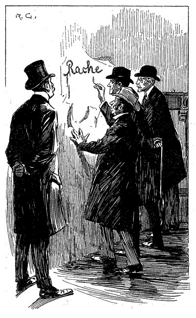
「さあどうでしょう。」とその刑事は興行師が見せ物をするがごとく口調で言った。「見落としです、部屋の隅っこにあったものだから、誰も見ようなんて思わなかったんですよ。加害者は男か女かわかりませんけど、血で書いたんです。ほら、べとべとした血がしたたってるでしょ？ とにかく自殺の線は消えましたよ。でもなぜ隅を選んで書いたのか？ あたしはわかりますよ、炉棚の上のロウソクです。そのときは火がついていて、ここは照らされていたんなら、暗い暗いこの隅っこが一番明るい場所ですからね。」
「で、見つけたはいいが、どういう意味ですかな？」とグレグソンが鼻を鳴らした。
「意味？ ええ、Ｒａｃｈｅｌ――レイチェルという女の名前を書こうとして、途中で邪魔されたんですよ。よぉくあたしの話を聞くんですよ、この事件が何もかもわかったとき、必ずレイチェルという女の影がちらつきますからね。笑いたければ笑うがいいですよ、シャーロック・ホームズ先生。あなたはなるほど賢く利口ですけど、終わりの終わりには、老いた猟犬が一番とわかりますよ。」
「いや実に失礼。」と同居人が言ったのは、突然笑い出したためにレストレードが怒りだしたからだった。「君はこの血文字の第一発見者としての栄誉を担っていいし、言うとおり、血文字を書きし人物が昨夜の謎におけるもう一人の人物なのは間違いない。だが僕は、まだこの部屋を少しも調べていない。申し訳ないが君のお許しを請うて、今から取りかからねば。」
同居人は懐から巻き尺と大型の円形拡大鏡をさっと取りだした。この道具二つを持ち、部屋中を音もなく駆け抜け、立ち止まり膝をつきを繰り返した。一度だけ顔を床につけたこともあった。一心不乱に調べ続け、我々がいることなど何のその。始終ぼそぼそと呟きながら、心高ぶるままに叫んだりうめいたり口笛を吹いたり、またうなずいたり喜んだりしたことが声からわかった。そばで見ていた私は、熟練した純血のフォックス・ハウンドを連想せずにいられなかった。草むらを縦横無尽に走り抜け、失われた手がかりを見つけるまで、雄叫びを上げながら捜し続けるように。二〇分ほど捜査は続き、私の目には見えぬ何かから何かへの距離を綿密正確に測ったり、これまた何のためかまったくわからないが、巻き尺を壁にあてがったりした。あるところでは注意深く床から埃をつまみ上げて、封筒の中へしまったりもした。そして最後に拡大鏡で壁の文字を見、一つ一つつぶさに調べ上げた。これが終わると納得とばかりに巻き尺と拡大鏡を懐に戻す。
ホームズはにやりとして、「才能とは、たゆまぬ努力をなせる力のことである、とはよく言ったものだ。定義としてはまずいが、探偵の仕事をうまく言い当てている。」
グレグソンとレストレードは、素人探偵の大立ち回りを多大な好奇心とそれなりの軽蔑の入り交じった目でながめていた。ふたりには何が起こったのか理解できずにいるようだが、私にはわかり始めていた。シャーロック・ホームズのやることはどんな小さなものも、すべてがあるはっきりとした現実的な結末を指し示しているのだと。
「で、先生の見解は？」とふたり。
「僕が出しゃばったりすると、事件の手柄を奪うことになるおそれが。せっかく捜査が好転しているのだから邪魔をしては申し訳ない。」その声音には、最大限の皮肉が込められていた。「だが捜査状況を逐一知らせてくれるのなら、僕は援助の手を惜しまない。ところで僕は僕で、死体を見つけた巡査と話がしたい。名前と住所を教え願えるかな？」
レストレードは手帳をめくった。「ジョン・ランス。今は非番。ケニントン公園前のオードリ・コート四六です。」
ホームズは住所を書き留めた。
「来たまえ、
レストレードとグレグソンは互いに信じられないといった笑みを交わした。
「この男が殺されたにしても、その手段は？」
「毒殺。」と単語一つ、シャーロック・ホームズはつかつかと歩き出した。「もう一つ、レストレード。」と戸口で振り返り、付け加える。「『Ｒａｃｈｅ』はドイツ語でラッヘ、『復讐』という意味だ。だから、レイチェル嬢捜しなどで時間を無駄にせぬよう。」
同居人はパルティアの矢を放ち、ぽかんと口を開けたふたりの競争相手を背の向こうに残したまま、歩き去っていった。
［＃改ページ］
第四章 ジョン・ランスの言い忘れ
一時になり、我々はローリストン・ガーデンズ三番地を後にした。シャーロック・ホームズは私を連れて最寄りの電信局へ行き、長めの電報を打った。そのあと声高に辻馬車を呼び、御者に行き先を伝えた。レストレードに教わったとおりの住所である。
「第一発見者に勝る者はない。」と同居人は言う。「実のところ、事件についての見当はもうついているのだが、聞けることは聞いておいても損はあるまい。」
「いやはや、ホームズ。」と私は言って、「本気じゃあないんだろう？ さっき逐一言ったことは。」
「ひとつとて間違いはない。」と同居人は答えた。「あの場所へ着いてすぐ、縁石の近くに、一台の馬車が残した二つの轍を見つけた。はて、昨夜までこの一週雨という雨もなかった。ならば、あの場所にあれほど深く残せるのは、昨夜のうちをおいて他にない。
「もっともらしく聞こえるな。」と私。「だが男の背丈は？」
「なに、人の背丈は九割がた、その歩幅から指摘できる。まあ簡単な計算だが、今数字で君を退屈させても詮ない。あの男、外の土にも中の埃にも足跡をつけていたから、そこで独自の計算を用いたまでだ。それに壁の血書、無意識に眼の上あたりへ書いている。さてその字は床からちょうど六フィートを越えたところ。子どもの遊びだ。」
「年は？」と私は訊ねる。
「それは、人間、歩幅四・五フィートで難なく歩けるのなら、もう黄葉秋の暮れ、というわけでもあるまい。ちょうど庭の歩道にあった水たまりの大きさになるが、男はどうも跨いでいる。エナメル革のブーツは横を回り、つま先の尖った足跡はまっすぐ超えていた。謎など欠片もない。このように、日々の現実に対しても、あの記事に書いたような観察と演繹の決まりを少しく用いているだけのこと。まだ何か不思議なことは？」
「指の爪とトリチノポリは？」
「壁の字は、男が人差し指に血を付けて書いたもの。拡大鏡で調べたところ、壁土にわずかだが引っ掻いた跡があり、男の爪が切られていたならこんなことになるはずない。また、灰をあちこちの床から集めてみたが、暗色で薄片状、これはトリチノポリの灰にのみ表れるものだ。僕は煙草の灰についてつぶさに研究したことがあって――実はそれを扱った論文もひとつある。僭越だが、灰を一目見ただけで、葉巻や煙草ならどんな銘柄でも言い当てることができる。まさしくこういったところが、能ある探偵と、グレグソンやレストレードといった類との異なる点だ。」
「赤ら顔というのは？」
「うむ、これはやや大胆な推量だが、自分が正しいと信じている。まだ今の段階では不問にしてくれたまえ。」
私は額をなで、「頭がくらくらするよ。」と言葉を漏らす。「考えれば考えるほど、次から次へと謎が。ふたり――とりあえずふたりとして――空き家に来たわけ。二人を連れてきた御者の行方。ひとりがもうひとりに毒を盛れる方法。血の出どころ。犯人の目的は何だ、どうして何も盗まなかったのか。なんだって女性の指輪があんなところに。それよりも何より、片割れはどうして『Ｒａｃｈｅ』というドイツ語を書き残さなきゃならんかったんだ？ 正直、つじつまの合う説明が見当たらん。」
同居人はその通り、といった風に微笑んだ。
「君は現状の問題をうまく簡潔にまとめてくれた。依然はっきりしないこともあるものの、僕には本筋についての見当がついている。例えばへっぽこレストレードの発見だが、あれは単なる目くらましで、社会主義者か秘密結社をにおわせて、警察を誤った方へ向かわせたいだけだ。それにドイツ人の手によるものではない。あのＡ、君も見たように、ドイツ活字体風に書かれていた。が、本当のドイツ人なら必ずラテン書体で書くはず。であるから、あれはドイツ人ではなく、真似しようとしてやりすぎた下手なやつによるものと言っていいだろう。単なる捜査攪乱の企みに過ぎんのだ。事件に関してはここまでだ、博士。ほら、種明かしした手品師は相手にされない。これ以上手の内を見せすぎると、君は僕のことを所詮ただの人と決めつけかねない。」
「そんなことないよ。この世界でいちばん、探偵という仕事を厳密な科学にまで近づけている。」
同居人は私の言葉や熱心な口ぶりが嬉しいようで、顔を赤らめた。自分の腕をほめられると弱いということが私にはとうにわかっていた。まるで、綺麗だよと褒められた少女のようだ。
「もうひとつ言おうか。」と同居人は言いだして、「エナメル革の靴とつま先の尖った靴の二人組は同じ馬車に乗っていて、仲良く家に続く道を一緒に歩いていったのだ――おそらく腕を組んで。なかへ入ると室内を歩き回り――いや、エナメル革はその場を動かず、尖った靴だけが歩き回っていた。ほこりの跡から読み取れる。だから、歩いているうちにだんだん興奮していったこともわかる。歩幅が徐々に大きくなっているからだ。その間ずっと何か話しており、そして怒りを露わにしていったに相違ない。そこで悲劇が起こった。現時点でわかっていることをすべて君に話した。これ以上はただの揣摩憶測になる。しかし捜査を始めるにはこれで十分。急ごう。僕は午後、ハレの演奏会へ行って、ノーマン＝ネルダーを聴きたいのだ。」
こういった会話の間、馬車はすすけた街並みや暗うつな路地の続くなかを縫うように走っていた。やがて、これまでとは比べものにならぬほど真っ暗ですすけきったところに入ると、御者はおもむろに馬車をとめる。
「オードリ・コートはこの奥ですぜ。」と御者は薄汚れた煉瓦の並ぶ、狭い路地を指差した。「お帰りになるまで、ここで待ってます。」
オードリ・コートは魅力的な場所とは言えなかった。狭い路地を出ると、敷石で舗装された四角い広場があって、取り囲むようにむさくるしい建物が立っていた。我々は汚れた身なりの子どもたちをかき分け、紐に引っかけられた洗濯物の数々をくぐり抜け、ようやく四六番までたどり着いた。戸には小さな真鍮の表札があり、ランスという名前が彫られていた。尋ねてみると、巡査は寝ているらしく、入ったところの小さな客間に通され、待つことになった。
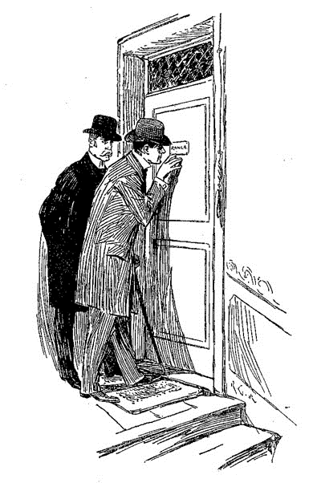
ほどなく現れた巡査は、昼寝を邪魔されて、ややいらだっているように見えた。「署に報告書は出したけどな。」と言う。
ホームズは懐から半ソヴリン取り出し、思わしげに指でころがした。「君の口から直接あらましを聴ければ、と思ったのだが。」
「よ、喜んで何なりとお話ししますとも。」と巡査は答え、小さな金の円盤に眼を泳がせた。
「では、昨夜の出来事を君なりの言葉で説明してくれたまえ。」
ランスはばす織りのソファに腰を下ろすと、何一つ言い落としはしまいとばかりに眉根を寄せた。
「まずは始まりの始まりで、おれの当番は夜の十時から朝の六時までなんでして。あの日は十一時んときに白鹿亭で喧嘩があったきり、何という事もなく巡回しておったんで。雨が降り出したのは一時で、ハリ・マーチャと会って――ああ、ホランド
「立ち止まり、そして門まで引き返した。」と同居人は話に割り込んだ。「その理由は？」
ランスは急にびくっとして、シャーロック・ホームズを驚愕の面もちで見つめた。
「あ、ええ、その通りで、旦那。どうやってお知りになったかは知らねぇけど。つまり、戸口まで来てはみたが、やっぱりしんとして、人けがねえ。まあ誰か連れてきても悪くはねえなと。まだこの世にいるやつなら、どんと来いなんですが、腸チフスで死んだ男がね、自分を殺した下水を調べにきてんじゃねえか、って思ったんで。で、気が変わっちゃいましてね、門まで戻って、マーチャの
「通りには誰も？」
「人っ子一人、犬ころもいやしませんよ。それから気をしっかり持って、もう一度行って、入口を開けました。なかはすっかり静まりかえってまして、で、明かりのついている部屋に入りました。そこでは蝋燭――赤い芯の蝋燭――が炉棚の上でゆらゆらしていて――それに照らされて――」
「結構、君が見たものは承知している。君は部屋をうろつき、死体のそばでひざまづき、そのあと部屋を横切り、台所の扉を調べ、そして――」
ジョン・ランスは驚きの形相で椅子から立ち上がり、疑いの目を向けてくる。「どこに隠れておれを見てた？」と声を荒げる。「やけに詳しいじゃねえか。」
ホームズは一笑し、名刺を机向こうの巡査に投げてよこした。「僕を殺人で逮捕しないでくれたまえ。僕も一匹の猟犬であって、狼ではないのだ。グレグソンくんやレストレードくんが説明してくれるだろう。さて続きを。次の行動は？」
ランスは座り直したが、依然、腑に落ちない顔をしていた。「おれは門に戻って、呼子を吹いた。マーチャがやってきて、ふたりでまた現場に。」
「その時、通りに誰か？」
「いや、誰も。まともなやつって意味ではな。」
「どういう意味だ？」
巡査は満面の笑みを浮かべた。「おれも人生、いろんな酔っぱらいを見てきたけど、あの野郎ほどひどいのは見たことがねえ。野郎、俺が出てきたとき、門のところにいて、柵にもたれながら、コロンビーナの流行旗、とかそんな感じで腹の底から唄ってやがって、支えてやらんと、立つのもままならねえでさ。」
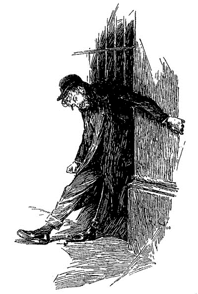
「どんな感じの男だ？」とシャーロック・ホームズ。
ジョン・ランスはこの脱線のような質問にいくぶん苛立ったようで、「度の過ぎた酔っぱらいだよ。手が塞がってなきゃ、とうに署のなかさ。」
「顔――身なり――気づいたことは？」とホームズはしびれを切らして割り込む。
「気づくもなにも、おれ――おれとマーチャがふたりでやつを起こさにゃならんかったんだ。やつは長身だな、赤ら顔で、顔の下半分に布を巻いて――」
「結構。」とホームズは声を張り上げる。「その後、彼は？」
「そんなやつの面倒を見る暇なんてありませんよ。」巡査は機嫌を悪くする。「どうせまっすぐ家に帰ったんでしょうに。」
「服は？」
「茶褐色の上着。」
「手に鞭はなかったか？」
「鞭？ いいや。」
「置いてきたのだな。」と同居人は呟いてから、「その後、馬車の姿や音はなかったかね？」
「いいや。」
「では半ソヴリンだ。」と同居人は言い、立ち上がると帽子を取った。「残念だ、ランス――それでは警察で昇進できない。君は頭を飾りにせず、使うべきだ。そうすれば昨晩のうちに、巡査部長の縞へ増やせたものを。君が腕に抱えたその男は、この事件の手がかりを握り、かつ我々の捜している男なのだ。今更言っても仕方ないが、そういうことだ、と告げておこう。行こう、博士。」
相手としては信じがたく、不快感を禁じ得なかったであろうが、我々はそのままふたりして馬車に戻った。
「とんちきだ。」とは、ホームズが下宿への帰りざまに言った辛辣な一言である。「考えてもみたまえ、あの男は一生に一度かもしれぬ幸運を手にしながら、逃してしまったのだ。」
「私にはまだ雲をつかむようだ。その男の人相が、君がこの事件に係わるとした人物と符合している、それはわかる。しかし、どうしてその人物は離れた後、また家に戻ってこなければならなかったんだ？ 犯罪者のやり口じゃあるまい。」
「指輪だ、君、指輪なのだ。そのために舞い戻った。万策尽きたとしても、この指輪でいつでも罠を仕掛けられる。やつはいずれ、僕の手に落ちるよ、博士――二対一で賭けてもいい、落ちる。今回は君に感謝せねば。君なしでは出向かなかった。そして、生涯最高の題材に出会い損なっていただろう――緋のエチュード。ふふ、ちょっとした絵画の名付け方を借りてもいいではないか。殺人という緋色の糸が、現世という無色の
馬車にもたれつつ、この素人の猟犬は
［＃改ページ］
第五章 広告の呼んだ客
この病み上がりの身体に今朝の頑張りがこたえたのか、午後になると疲れが出てきた。ホームズが演奏会に出掛けた後、私はソファで横になり、仮眠を取ろうとした。だが無理だった。今朝からの出来事のせいで心は昂ぶり落ち着かず、おかしな空想や憶測がついて離れなかった。目を閉じても、常に被害者の猿を思わせるゆがんだ形相が浮かぶのである。現れるのが何ともまがまがしい印象の顔であったから、この世から消えてくれたことを思うと、犯人に対して感謝の意を表したいほどだった。人の顔面に諸悪の権化を写したとすれば、きっとクリーヴランド在住イーノック・Ｊ・ドレッバーのようになるだろう。だが正義は貫かれるべきであり、被害者が悪人だからといって殺人の罪が帳消しになるのではないと、私とてわかっていた。
それでも考えるほどに、同居人の説く毒殺説が突飛に思えてくる。唇をかいだのだから、その説に帰着する何かをつかんだのであろう。また毒殺でないとしたら、何が死因なのか。なにせ外傷も索溝もない。それでいて、床にべっとりと付着していた血液は、誰のものなのか。争った形跡もなく、被害者は武器も持っていないので、犯人に一矢報いようもない。万事問題を解決しない限り、ホームズ、そしてもちろん私もおちおち眠ることができないと、そう感じる。同居人が自信深げに何も言わないままでいるその様は、一切を説明しうる理論をすでにまとめているのだ、と思わせるものがあった。一方、私に至ってはすぐには何なのか当たりも付けられない。
同居人の帰りは遅かった――あまりに長いので、行き先は演奏会だけであるまいな、と感づいた。姿を現す頃には、夕食はもう卓に上がっていた。
「最高だった。」と同居人は椅子に座る。「知っているか、ダーウィンが音楽について述べたことを。かく言えり、音楽を作りかつ鑑賞する能力は、言語能力の入手以前より人類に備わっていた。ひょっとするとそれが、音楽が我々の琴線に触れる理由なのかもしれぬ。模糊たる記憶、我々の魂のなかに、世界の幼年期、靄の時代のものが残っている。」
「えらく壮大な話だな。」と私。
「自然を受け止め説こうとするなら、その話も自然と同じほど大きくなくては。どうした？ 具合が悪そうだ。ブリクストン通りの事件がこたえているか。」
「実を言うと、ね。アフガンの後、もう少し物事に動じなくなってもよさそうなものなのだが。マイワンドで戦友が斬り殺されるのだって平然と見たのにな。」
「なるほど。この事件には、想像力を刺激する謎があるからね。想像力なくして恐怖は生まれぬ。夕刊に目は？」
「いや。」
「事件がうまく記事になっている。ただしあの件には触れていない。男を運ぶ際に結婚指輪が床に落ちたあれだ。好都合だな。」
「どうして？」
「この広告を見たまえ。同様のものを事件直後の今朝、全新聞社に打ったのだ。」
同居人は新聞を投げてよこしたので、私は言われた箇所に目を下ろした。『拾得欄』の一番目に載っていた。『ブリクストン通りにて今朝、飾りのない金の結婚指輪を、居酒屋白鹿亭とホランド並木道の間の道で拾得。ベイカー街二二一Ｂ、ワトソン博士まで、今晩八時から九時の間に来られたし。』
「名前を失敬した。僕を出すと、よからぬ輩が気づいて、この事件の邪魔をするやもしれんので。」
「構わんよ。しかし誰かが来ても、私は指輪を持っとらんが。」
「そうだった、渡しておこう。」と同居人は私に指輪をくれた。「見事なものだよ、よくできた複製だ。」
「で、君の予測では、この広告に誰が来ると？」
「うむ、茶褐色の外套を着た男――赤ら顔で、尖ったつま先の靴を履く例の男だ。もし彼が自ら来なくとも、共犯者を送り込んでこよう。」
「犯人はこれを危ないとは思わんのだろうか。」
「更々。僕の読みが正しければ、いや、確たる理由があるな。この男は指輪を失うくらいなら、いかな危険も冒すだろう。僕の考えで行くと、犯人はドレッバーの死体の間近でかがんだ際に落としたのだが、その時には気づかなかった。家を離れてからなくしたとわかり、急いで戻ったものの、犯人が蝋燭を点けたままにするという失敗を犯したため、既に警察が来てしまっていたのだ。そこで酔いどれを装い、なぜ門前にいるのかという疑惑を弱めようとしたというわけだ。さあ、その男の立場になってみたまえ。この件を考えつくせば、家を出た後、路上で指輪を落としたのではないかと思えて来よう。そこでどうするか。夕刊を熱心に調べるだろう。拾得物欄に指輪はないか、と。もちろん、男の目はあの記事を捕らえる。狂喜。なにゆえ罠が待ち受けると？ 犯人とて、指輪と殺人が結びつくなど思いもしない。来る。来たくなる。一時間以内に、あの男をお目にかかれる寸法だ。」
「来たあとは？」
「ああ、あとのことは僕に処置を任せてもらって構わない。武器は持ってるか？」
「軍用の古いリヴォルヴァと弾が少し。」
「手入れをして、弾を込めておいた方がよかろう。男が自暴自棄になるやも。不意をつくつもりだが、何事にも備えねば。」
私は寝室へ行き、忠告に従った。拳銃を手に戻ってくると、卓上は片づけられ、ホームズは趣味のヴァイオリンを一心に掻き鳴らしていた。
「筋が込み入ってきた。」と私が入るなり言ってくる。「アメリカへ打った電報の返事がここにある。僕の読みは合っていたようだ。」
「して、それは――？」と熱心に訊いたのだが、
「弦を新しくした方がいいかもしれない。拳銃は懐に。男が来たら、普通に話しかける。最後は僕に任せてくれればいい。にらみつけて、男を怖がらせぬように。」
「八時ちょうどだ。」と私は腕時計をちらりと見た。
「うむ。おそらくもう現れるだろう。扉をわずかに開けて、そう、それと鍵を内側から差しておくんだ。ご苦労。これは昨日、露店で見つけためずらしい古書――『諸民族間の法』――低地地方のリエージュで一六四二年に出版されたラテン語の本だ。チャールズの首がまだしっかりつながっていた頃、このやや茶褐色の背の本が印刷されたわけだ。」
「印刷屋の名は？」
「フィリップ・ド・クロイ、そういう名前だそうだ。遊び紙に色あせたインクで『グリオルミ・ヒューテ蔵書』とある。ウィリアム・ホワイトとは何者だろうね。察するに、一七世紀の実務弁護士といったところか。筆跡に弁護士風のねじれが見られる。どうもあの男が来たようだ。」
と口にした瞬間、呼び鈴の音が聞こえた。シャーロック・ホームズがゆっくりと立ち上がり、扉側にある椅子へと座り直す。使用人が玄関へ出て行くのが聞こえ、戸の掛け金を外す音がした。
「ワトソン先生はこちらかえ？」はっきりしていたが、しわがれた声だった。その返事はわからなかったが、ともあれ扉は閉められ、誰かが階段を上がり始めた。足音はよたよたとしていてぎこちない。それを耳にして同居人の顔に驚きの表情がよぎった。何者かは廊下をのろのろと歩いてきて、弱々しく部屋の扉を叩いた。
「どうぞ。」と私は大声で言った。
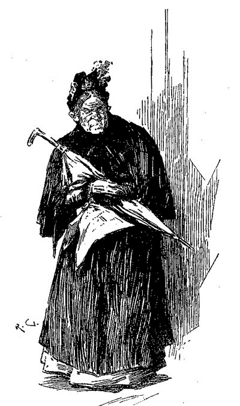
呼びかけると、我々が想像していた凶悪犯ではなく、しわくちゃの老婆がよたよたと入ってきた。急に明るいところへ出たせいか、まぶしそうにしたが、我々に軽く会釈をした。老婆はかすみ目をしばたたいて我々を見ると、震う荒れた手で懐をまさぐりながら立っていた。私が同居人の方をうかがうと、不満げな顔をしていたので、私の方だけでも平静を繕おうとつとめた。
老婆は夕刊を取りだし、例の広告を指し示した。「これ、これでわたしゃ来たんですがね、親切なお兄さん方。」と、また会釈をし、「ブリクストン通りの金の結婚指輪。こりゃわたしの娘、サリィのもので。娘は、結婚してちょうど一年で、夫はユニオン汽船の給仕をしとっての、家に帰ってきて、娘が指輪をしとらんことに気がついたら、何を言うかわかったもんじゃなし、いくらあれでも気が短いもんでね、酒を呑んどりゃもう特に。聞いて下され、娘は昨晩、あのサーカスに行っておりましてのぅ――」
「指輪は、これですかな？」と私。
「ありがたや、ありがたや。」と老婆は大きな声を出す。「サリィも今夜は機嫌ようなろうて。この指輪で。」
「で、あなたのご住所は？」と私は鉛筆を取った。
「ハウンズディッチ、ダンカン街一三。ほんにくたびれたわい。」
「ハウンズディッチからどこのサーカスへ行っても、ブリクストン通りは通らない。」とシャーロック・ホームズが鋭く指摘した。
老婆はくるりと首を動かし、同居人を充血した目でにらみつけた。「このお兄さんが聞いたのはわたしの住所じゃ。サリィの方はペッカム、メイフィールド・プレイス三の下宿におります。」
「あなたのお名前は――？」
「わたしゃソーヤと――娘はデニス、トム・デニムと結婚したもんで――かしこうて、ちゃんとした若者での、もっとも、それも海にいる間だけのことで、会社での評判はよろしいのに、
「お探しの指輪です、ソーヤさん。」私は同居人の合図に従って、老婆の話を打ち切った。「正真正銘、娘さんのものですね。元の持ち主に返せて、私も嬉しいですよ。」
老婆はもごもごと祝福と感謝の言葉を何度もつぶやきながら、指輪を懐にしまい入れ、階段をよたよたと降りていった。シャーロック・ホームズは老婆が退出した途端、勢いよく立ち上がり、自室へ飛び込んだ。ものの数秒で、アルスターとスカーフにくるまれ、戻ってきた。「追う。」と急ぎ調子の同居人。「あの老婆は共犯者に相違ない。男の居場所を突き止められるやも。起きて待っててくれたまえ。」玄関の戸が音を立てて客を送り出すやいなや、ホームズは階段を駆け下りていった。窓越しに見ると、老婆は向かいの通りをとろとろと歩いている。追跡者は老婆の数歩後ろを離れずつけていた。「彼の考えそのものが間違いなのか、それとも彼は今、謎の核心へと導かれているのだろうか。」私はひとり考えた。同居人の寝ないで待てという言葉も必要なかった。この冒険の結末を知るまでは、眠ろうとも眠れるはずがあるまい。
同居人の出発は九時近く。いつまでかかるのか思いもよらなかったが、私はそぞろにパイプを吹かし、アンリ・ミュルジェルの『放縦に生く』を飛ばし読みしていた。十時過ぎ、女中が寝室へあわただしく向かう足音がした。十一時、同じく寝室へ向かう下宿の女主人のしっかりとした足取りが、部屋の前を通り過ぎていった。十二時前、表戸の鍵が音を立てた。部屋に入るなり見せたその顔に、失敗、と書いてあった。心のなかではおかしさと悔しさがせめぎ合っているようだったが、ついに前者が勝利を収め、同居人は出し抜けに大きく笑い出した。
「スコットランド・ヤードのやつらに知られたくないものだ。」と椅子に腰を下ろし、「僕がいつもからかっている仕返しとばかりに、いつまでも言い続けかねない。今はひとまず笑っておこう。長い目で見ればまだ五分だ。」
「いったい何が？」
「うむ、僕は失敗談でも気にせず話す人間だからね。あの犯人の手先は、少し歩くと足を引きずり始め、捻挫した素振りを見せた。まもなく立ち止まり、走っている四輪馬車を声高に呼んだ。僕は老婆が行き先を伝えるのを聞こうと距離を詰めたが、それは単なる杞憂に過ぎず、通りの向かいまで聞こえるほどの声で、『ハウンズディッチ、ダンカン街一三へ行っとくれ！』と言った。ひょっとすると本当に、と思い始めて、しっかり乗り込んだのを見届けてから僕は馬車の背の上部に飛び乗った。探偵なら誰でも長けておかねばならぬ技術だ。で、馬車は揺れながら進み、目的地へ着くまで、手綱が引かれて速度が弱まることが一度もなかった。戸口にさしかかる前に僕は飛び降り、何気なくそぞろに通りをうろつきながら近づいていった。目の前で馬車が止まり、御者が降り、扉を開け、客が出てくるのを待っていた。が、誰も出てこない。そばへ来たとき、御者はわけがわからないという風に空の馬車を引っかき回して、何とも巧みに罵詈雑言を操ってまくし立てていたよ。乗客の影も形もなく、いつまで経っても運賃はもらえそうになかった。そこで御者を連れて一三番を訪ねてみると、そこで住んでいたのはごく普通の壁貼り屋で、名をケジックといい、ソーヤもデニスもどこへやらだ。」
「本気かね？」と私は驚きの声を上げる。「またまた、よぼよぼの老婆が走行中の馬車から飛び降りただなんて。君や御者に目撃されることなくにだよ？」
するとシャーロック・ホームズは苦々しげに、「おのれ、あの老婆！ やられた我々の方こそ老婆並みだ。間違いない、あれは若い男だ、しかも身体能力に優れ、名優ときている。あの変装は真似できない。尾行されていると知って、きっと僕をまいて逃げようとあんなことを。なるほど、我々の追うあの男、考えていたように一人ではない、危険をもいとわぬ仲間がついている。さあ博士、疲労が目に見えている。言うことを聞いて、部屋に下がりたまえ。」
その通りで、私は疲労困憊の体だった。聞き入れて、ホームズをくすぶり立つ炉辺の椅子に残して下がった。なかなか眠れずにいると、ヴァイオリンの憂鬱で悲しげな低い音色が聞こえてくる。奇妙な謎を解きほどこうと同居人が静かにじっと考えていることが、その音からわかった。
［＃改ページ］
第六章 トバイアス・グレグソンの手前披露
翌日の新聞各紙は『ブリクストン事件』と銘打ち、その話題で持ちきりだった。どの新聞も事件に大きく紙面をさき、社説で触れるものさえあって、真新しい情報も二、三あった。事件に関する切り抜きや書き抜きが今でも保存してあったので、ここにいくつか要約を掲げておこう。
デイリィ・テレグラフ――犯罪史上、稀にみる奇怪な惨劇である。被害者のドイツ風の名前、殺人という明確な動機、壁の不吉な血書、これらすべてが政治亡命者か革命家の仕業であることを示している。社会主義結社の支部はアメリカに多くあり、故人もその暗黙の法を破った果てに追いつめられたのであろう。と記し、フェーメ裁判所、トファナ水、カルボナリ、ブランヴィーリエ侯爵夫人、ダーウィン理論、マルサスの原理、ラトクリフ公道 殺人事件などを軽くほのめかしたあと、政府を非難し、イングランド内の外国人の監視強化を主張して締めくくっている。
スタンダード――自由党政権のもとでは、こういった無法狼藉のたぐいはよく起こるものである。原因は民衆の不安やそこからくる権威の弱体化。故人はアメリカの紳士で、数週間この街に滞在しており、キャンバウェル、トーキィ・テラスにあるシャルパンティエイ夫人の旅籠を宿としていた。同行者は個人秘書のジョーゼフ・スタンガスン氏。両名は今月四日の火曜日、宿をたつ際、ユーストン駅へ行ってリヴァプール行の急行をつかまえるつもりだと夫人に言い残していた。のち、乗降場にいる二人の姿が目撃されているが、既報したように、ドレッバー氏の遺体がユーストンから遠く離れたブリクストン通りの空き家で発見されるまで、その足取りはつかめていない。現場への移動手段、事件の詳細なども依然として不明のままで、スタンガスンの消息もわかっていない。この事件の担当はスコットランド・ヤードのレストレード、グレグソンの二大警部という朗報を聞き、本誌はまもなく両名によって、事件解決の糸口が見つかるのではなかろうかと期待するものである。
デイリィ・ニューズ――間違いなくこの犯罪の裏には政治的なものがある。圧政や自由主義への嫌悪が大陸各国を刺激し、結果大勢の特殊な人間が我らが岸に流れてくる。本来はよき市民となるはずだったが数々の仕打ちを受け、ゆがんでしまった者たちである。彼らの間にはきびしい鉄の掟があり、違反は死をもって償われる。早急に秘書のスタンガスン氏を捜索し、故人の素性を確かめるべきである。捜査は大きく進展し、故人の滞在先が特定されたが、これはすべてスコットランド・ヤードのグレグソン氏の捜査のたまものである。
シャーロック・ホームズと私は朝の食卓でふたりしてこの記事を読んでいたが、同居人としては滑稽に思えて仕方なかったようだ。
「見たまえ、どう転んでも、レストレードとグレグソンの手柄になるだろう。」
「事件のなりゆき次第さ。」
「君もめでたいな、ありえんよ。犯人が捕まれば、両氏の捜査のおかげで、逃しても、両氏の捜査のかいなく。僕が勝つか君が負けるか、というやつだ。やつらはやることなすことすべて支持される。『たわけは自分を見てくれる大たわけを呼ぶ』のだ。」
「おや何事だ？」と私。そのとき玄関を走り抜け、階段を駆け上がってくるいくつもの足音が聞こえたのだ。下宿の女主人の呆れ声も耳に入ってくる。
「刑事探偵局ベイカー街分署だ。」とわが同居人が真面目な顔をして言うや、まもなく六人の浮浪児が目も当てられないほどぼろぼろで汚い服を着て、部屋に上がり込んできた。
「気をつけ！」とホームズがぴしゃりと言うと、やんちゃ坊主六人は安物の彫像よろしく、横一列に並んだ。「これから報告はウィギンズ一人で来るように。残りは表で待っていること。ウィギンズ、何かわかったか？」
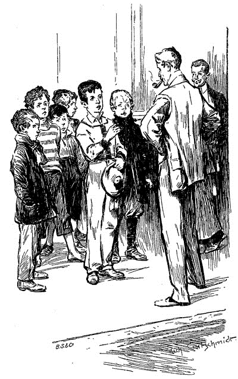
「いいえ、先生。何も。」と浮浪児のひとりが答える。
「さもありなん。見つかるまで捜査続行。これが駄賃だ。」とホームズは一人につき一シリングを渡していった。「さあ、行くんだ。次はいい返事を待っている。」
同居人が手を振ると、子どもたちはネズミのごとくちょろちょろと階段を降りていき、気がついたころには通りからさわぎ声が聞こえていた。
同居人が言うには、「一人で、警察一〇人以上の成果が上がる。官憲の姿を見ただけで、人は口を閉ざしてしまう。だが子どもとなれば、どこへでも行け、何でも聞ける。鋭さは針のごとし。足りないのはまとまりだけだ。」
「あの子たちが取り組んでいるのは、ブリクストン事件かね。」と私。
「ああ。突き止めたいことがある。もはや時間の問題だ。おや、どうも最新情報を得られそうだ。グレグソンが満面の笑みで、道を歩いてくる。目的地はここだな。うむ、家の前まで来た。」
呼び鈴が高く鳴りひびき、しばらくすると、金髪の刑事が階段を二段飛ばしに上がって、部屋に飛び込んできた。
「いやいや！」と刑事はホームズの気の抜けた手を握りしめ、「褒めてください。吾輩、何もかも白昼のもとにさらしましたぞ。」
わが同居人の顔へ不安の影がよぎったように思えた。
「捜査が正しい方向に向かっていると？」
「正しいも何も！ 先生、犯人は今や檻の中です。」
「名前は？」
「アーサ・シャルパンティエイ、海軍中尉ですな。」とグレグソンは偉そうに胸を張って、厚い手をこすった。
シャーロック・ホームズはほっと一息つき、落ち着いた笑顔を見せた。
「掛けたまえ。葉巻は？ お手並みのほどをぜひうかがいたい。水割りウィスキィは？」
「いただきます。」と刑事。「この二日間というもの、たいへんな仕事続きでくだびれまして。身体が疲れたというよりは、先生と同じく、頭が疲れたといったところです。シャーロック・ホームズ先生、何と言っても、吾輩ども二人は頭脳労働者ですからな。」
ホームズは改まって、「どうか僕たちに、その素晴らしい冒険談をお聞かせ願えませんか。」
刑事は安楽椅子に腰を下ろすと、得意気に葉巻を吹かせた。そして嬉しくなったのか、突然、太ももを叩き始めた。
「愉快ですな。レストレードのばかは自分では賢いと思っているんだろうが、てんで違った方向を走っているんですからな。秘書のスタンガスンを追っているとはね。あの秘書はもう事件とは無関係です。まったくのシロですよ。まあきっと相手を捕まえてでもいる頃合なんでしょうが。」
グレグソンは自分の言ったことが面白く、笑いに笑って、しまいにはむせてしまった。
「しかし、手がかりをどうやって？」
「ええ、今から全部お話ししましょう。そのかわりワトソン先生、内密にお願いしますよ。我々のぶち当たった最初の難関は、このアメリカ人の素性調べでした。ここで凡人なら新聞広告を出して情報を待ったり、知り合いが何か申し出てくるまで待つところですが、このトバイアス・グレグソンはちょっと違います。死んだ男のそばに落ちていた帽子、覚えてますか？」
するとホームズは、「ああ。ジョン・アンダウッド商会製、住所はキャンバウェル通り一二九だ。」
グレグソンは気をそがれたようで、
「まさかご存じだとは。行かれましたか？」
「いや。」
それにグレグソンは安心して、「ほお、機会を逸すべきではありませんな。どんなに見かけが小さなものでもね。」
「偉大な理性の前では、大小などない。」とホームズは格言めいたことを言ってみせる。
「さて、アンダウッドに行きまして、こういう寸法でこういう感じの帽子を売ったことはないかと聞きました。帳簿を見てもらったところ、すぐにわかりましてな。帽子はドレッバー氏へ、トーキィ・テラスのシャルパンティエイ旅館宛で配送したとのことです。これで住所が割れまして。」
「冴えてる、実に冴えてる！」とシャーロック・ホームズはつぶやいた。
「そこでシャルパンティエイ夫人を訪ねました。青ざめた顔で気を揉んでおるようで。娘も同席してまして――べっぴんな娘でしたよ、ええ。吾輩が話を切り出すと、女の目は赤くなって、唇がふるえましてな。吾輩の目はごまかせません。何かくさいと思いました。シャーロック・ホームズ先生、この感じわかりますな、正しい筋に勘づいたときの――あのぞくぞく感。『おたくの投宿人、クリーヴランド在住のイーノック・Ｊ・ドレッバーさんが変死なされたことはご存じですな？』と吾輩は聞きました。
夫人はうなずきましたが、言葉を失っているようでした。娘もいきなり泣き出したので、こやつらは何か知っておるな、という思いが強くなりましてな。
『ドレッバーさんが列車に乗るため、この家を出たのは何時ですかな？』と吾輩が聞くと、
『八時です。』と言って、夫人は動揺を抑えようと息をぐっと呑み込みました。『スタンガスンさんが、列車は二本あるとおっしゃいまして――九時一五分発と一一時発です。先の列車を捕まえに行ったのかと。』
『それが彼を見た最後ですか？』
という質問を吾輩はしたのですが、それで夫人の顔が急変してしまいましてな。血の気がさーっと引いて。しばらくして、女は一言『はい』といいました。どうも不自然に引きつった声でした。
一瞬しんとしましたが、そのあと娘が落ち着いた、よく通る声でこう言ったんです。
『嘘はやっぱりいけませんわ、お母さま。このお方に素直にお話ししましょう。実はもう一度ドレッバーさんに会ったんです。』
『ああ、なんてことを！』とシャルパンティエイ夫人は手をかざしましたが、すぐに椅子に戻って、『あんたは自分の兄を殺したのよ。』と。
しかし娘も『アーサだって、私たちに嘘をついてほしくないはず。』と負けません。
そこで『すべて吾輩に打ち明けるのが一番よいかと。中途半端は何も言わないより罪なことです。それに、吾輩どもも、色々なことをすでに知っているのですぞ。』と一押しすると、
夫人は『あんたのせいだよ、アリス！』と言って吾輩の方を向き、『すべてお話しします、刑事さん。私が息子を心配しておりますのは、息子がこの恐ろしい事件にかかわっているからではございません。息子はまったくの無実なんです。ただ心配なのは、あなた方の目には、息子が怪しく見えるかもしれないからで。でも、そんなこと絶対にありえません。息子の清廉な性格、職業、経歴を見ても、けしてそんなことはないと。』
しかし吾輩は、『事実を隠さずすべてお話しなさい。大丈夫、息子さんが無実なら、なんてことないはずです。』
『アリス、あんたは席を外すんだよ。』と夫人が言って、娘は退出しました。夫人は言葉を続けて、『あの、刑事さん。ずっと黙っているつもりだったのですが、あのバカ娘がばらしてしまいましたので、観念しました。いったん話すと決めた以上、何も包み隠さず申し上げましょう。』
吾輩が『賢明です。』と言うと、
夫人はこう言いました。『ドレッバーさんは三週間近くお泊まりでした。あの男と秘書のスタンガスンさんは大陸を旅してきたんです。二人のトランクにはコペンハーゲンの札がついておりましたから。きっと前にいた街なのでしょう。スタンガスンは無口の控えめな男でしたが、雇い主の方は、こう申しては何ですが、正反対です。あの男、することは下品で、野獣のような身の振る舞い。到着したその夜に、もう酔っ払っておりまして、それからというもの、昼の一二時を過ぎてしらふだったことは一回もありません。あの男がうちの女中に見せる態度といったら、好き勝手でなれなれしく、吐き気がするほどです。こともあろうに、うちのアリスにもすぐ手を出しまして、一度ならずもあの口ぶりで迫ったのです。幸いアリスは無垢ですから、わかりませんでしたけど。あるときなんか、あの男はアリスに腕を回して、抱きついたりもしましたが、さすがに秘書の方が礼儀に反するとお諫めになってくださって。』
『しかし、なぜそこまで我慢を？ あなたの一存で、下宿人を追い出すこともできましょう？』
この吾輩の質問は的を射たものでして、シャルパンティエイ夫人も顔を赤くしました。『できるなら、あの男が来たその日にそれを言いたかった。でも苦渋の判断で。あの男は、一人一日一ポンドくれると――一週間で一四ポンド。この不景気なご時世、私は未亡人ですし、息子は海軍でお金がかかります。この金を逃したくない。私は最善を尽くしました。けれども、先日はあまりにひどくて、我慢できず、ついに言ってやりました。それが、あの男の出て行った理由です。』
『それで？』
『すかっとしました、あの男が馬車で遠ざかっていくんです。息子はちょうど休みだったんですが、何も言いませんでした。息子はかっとなりやすいたちで、妹のこととなったら、前が見えなくなるものですから。あの男を見送って戸を閉めた瞬間、心が軽くなったような気がしました。でも、一時間も経たないうちに呼び鈴が鳴って、ドレッバーさんが帰ってきたと知ったのです。相当興奮した様子で、泥酔していると一目で分かりました。私と娘が一緒にいたところ、あの男は無理矢理部屋に入ってきて、列車に乗り遅れただの何だの、めちゃくちゃなことを言い散らしてから、アリスの方を向いて、私の目の前で、一緒に駆け落ちをしようなんて言うんです。「お前も大人だ。法律も止めやしない。俺にはありあまるほどの金がある。こんな婆なんて放っておいて、今から俺についてこい。お姫さまのような暮らしをさせてやる。」かわいそうにアリスはおびえきって、逃げ出しましたが、あの男、アリスの手首をつかんで、戸口まで引きずっていこうとするんです。私が悲鳴をあげると、その瞬間に息子のアーサが部屋に入ってきました。それから何が起こったのかわかりません。罵倒する声やとっくみあう物音が聞こえました。怖くて怖くて、顔を上げられなかったのです。次に見たとき、アーサは戸口に立って笑っていまして、手には棒を。「これでもう、やつに手を焼かずに済む。ついでについていって、どうなるか見届けてやる。」そう言って息子は帽子を取り、街へ出て行きました。翌朝、私たちはドレッバーさんの変死を知ったわけです。』
シャルパンティエイ夫人の口から出た証言は、息も切れ切れ、途切れ途切れで、小さな声で話すもんですから、言葉のよくわからんところもありましたが、吾輩、夫人の発言を逐一速記しておりましたので、これに間違いはありません。」
「心躍る話だ。」とシャーロック・ホームズはあくびをしながら、「そのあとは？」
「シャルパンティエイ夫人が言葉を切ったとき、吾輩はわかりました。この事件、ただ一点がわかればすべてわかると。女性に効果的な目つきというものがありまして、吾輩、それを使って、夫人にいつ息子が帰ってくるのか、と訊ねました。
『わかりません。』
『わからんと？』
『ええ。息子は鍵を持っていますので、自由に出入りを。』
『あなたが寝た後でしょうか？』
『ええ。』
『寝たのはいつですか？』
『一一時頃。』
『では息子さんは、少なくとも二時間は外に出てたと。』
『ええ。』
『四、五時間ということも？』
『はい。』
『その間、何をしていたのでしょう？』
『わかりません。』と夫人は唇まで真っ青にしました。
と来れば、これ以上することはありません。吾輩はシャルパンティエイ中尉の居所を見つけだし、二名の警官を連れていって、青年を逮捕したのです。吾輩が青年の肩を叩き、同行願うと静かに告げたところ、あの男はずうずうしくもこう言ったんです。『俺をつかまえるのは、あのドレッバーの野郎が死んだせいだろう』って。こっちは何も言っていないのに、青年がこうも言ったということで、ますます疑惑が深まりましたよ。」
「いかにも。」とホームズ。
「重そうな棒も所持していましたよ、夫人がドレッバーを追うときに青年が持っていたと言ったあれです。丈夫な楢の棍棒でした。」
「で、君はどう踏んだ？」
「吾輩の読みでは、あの青年はドレッバーをブリクストン通りまでつけていったと。そこでふたりは口論になって、そのうちドレッバーは棍棒で一撃されたのです。おそらく、みぞおちに入ったため、何の外傷もなく死んだのでしょう。雨の降りそうな夜でしたから、辺りには誰もいない。そこでシャルパンティエイは被害者の死体を空き家に引きずり込んだわけです。蝋燭、血、壁の文字や指輪といったものは、たくさん偽の証拠を残すことで、警察の捜査を攪乱しようとしたんですな。」
「上出来だ！」とホームズのおだてるような口ぶり。「本当に、グレグソン、よくやった。我々もこれから、君に注目せねば。」
「我ながら、素晴らしい捜査ですよ。」と刑事は誇らしげに言い、「青年の証言によると、彼はドレッバーをしばらくつけていったのですが、相手に気づかれて、馬車に乗って逃げられてしまったそうです。帰ろうとすると、同船した昔なじみに出会って、ずっと一緒に歩いていたというのですが、この昔なじみの住所を問いつめても、満足に答えることもできませんでしたよ。辻褄がぴったり合っていると思いますな。レストレードのことを考えると、実に愉快です。とっかかりから間違っているんですからな。あわれですな、何もできやしない。おお、なんと、ここに本人がいるとは！」
まさしくレストレードその人であった。我々が話している間、階段を上り、今し方部屋に入ってきたのだった。ところがいつも服装と物腰に充ち満ちている、彼一流の自信と元気がない。顔にあるのは動揺と不安、服も乱れ、だらしがない。シャーロック・ホームズへ相談するつもりで来たに違いない。同僚を見た瞬間、戸惑い、いらだち始めたことからもわかる。レストレードは部屋の真ん中に立ち、いらいらと帽子をいじくり、どうしようかと思案していた。「この事件は、きわめて異常です。」とレストレードはついに口を開いた――「まったく理解不能です。」
グレグソンは勝ち誇った口調で、「ああ、君も見つけましたか、レストレードくん！ 結果そうなると思ってましたよ。それで、秘書のジョーゼフ・スタンガスン氏でも見つかったんですか？」
「秘書のジョーゼフ・スタンガスン氏は、」とレストレードは重々しく言葉を紡ぐ。「今朝六時頃、ハリデイ・プライヴェート・ホテルで殺害されました。」
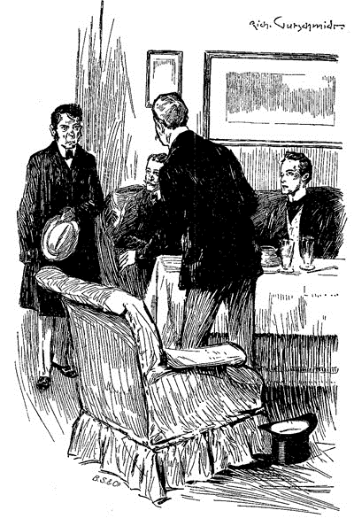
［＃改ページ］
第七章 暗中の光明
レストレードがもたらした知らせは、我々に驚きと深い衝撃を与え、三名とも言葉を失うほかなかった。グレグソンなどは椅子から立ち上がった拍子に、水割りの残りをひっくり返してしまった。私が何も言えずに顔を向けると、シャーロック・ホームズは唇をかたく結び、眉をひそめ一言。
「スタンガスンもか。これは込み入るな。」
「前々から十分込み入ってますよ。」レストレードはぼやきながら椅子を取り、「どうも作戦会議でもしていたご様子で。」
「その――その情報は確かなのか？」あたふたとグレグソンが言う。
「現場から来たんです。あたしが第一発見者なんですよ。」とレストレード。
「ちょうどグレグソンの意見を拝聴していた。」とホームズ。「お聞かせ願えないか、君の見たもの、してきたことを。」
「いいでしょう。」とレストレードは腰を落ち着ける。「正直、あたしはスタンガスンがドレッバーの死にかかわりありと踏んでました。でもこういう展開になると、間違いだったとはっきりしまして。もう思い込んで、ずっと秘書の行方ばかり追ってたんですよ。二人はユーストン駅で一緒にいるところを三日の夕べ、八時半頃に目撃され、翌朝二時、ドレッバー一人がブリクストン通りで発見されました。すると問題となるのは、スタンガスンは八時半から犯行時刻までの間、いったい何をしていたのか、その後どうなったのか、ということです。あたしはリヴァプールに電報を打って、人相を伝え、アメリカ行きの汽船を見張るよう通達しました。それからユーストン近辺のホテルや宿を片っ端から訪ねました。だってそうでしょう、主人が秘書から離れたのなら、秘書はその夜近いところに泊まっておいて、翌朝駅の辺りで待つってのが自然ですから。」
「落ち合う場所を事前に決めていたと見える。」とホームズ。
「そうなんです。昨晩は捜しに捜しましたが、駄目でした。今朝も早くから始めて、八時にリトル・ジョージ街のハリデイ・プライヴェート・ホテルに行き着きまして。スタンガスンはいるかと訊くと、うなずいてこう言うんですよ。
『あなたがお客様お待ちかねの紳士ですね。もう二日間もお待ちで。』
『今どこに？』とあたしは言いました。
『上でお休みに。九時にご起床と承っておりますが。』
『あたしが上がって、今すぐ見てきますよ。』
というのも、あたしが不意に現れたら、動揺して何か口を滑らすんじゃないかってね。
私の肌がぞくりとする。ふと嫌な予感がするや、シャーロック・ホームズが口を開いた。
「ＲＡＣＨＥの血文字。」
「そうです。」とレストレードは畏れかしこまる。しばらく誰も、何も言えなかった。
一貫したもの、不可解なもの。この見知らぬ殺人犯の行動にはそれがある。だからこそこの犯罪に、身の毛のよだつものを感じるのだ。戦場では揺るぎもしなかった私の心も、この事件を思うと震えがおさまらない。
レストレードは言葉を続ける。「犯人は目撃されていまして、牛乳運びの少年が販売店への帰り、たまたまホテル裏の厩舎からくる路地を歩いていたんです。何でもいつもは横になっているはずの梯子が、三階の窓に立てかけられているのに気づいたとか。窓は大きく開かれていて、通り過ぎた後に振り返ると、男が梯子を降りていたそうで。静かでしたが堂々としていたので、ホテルで働く大工か建具工くらいに思えたようです。気づいたのはそれだけなんですが、早く仕事に戻らないとという思いでいっぱいだったからですな。男は長身で赤ら顔、茶褐色の長い外套を着ていたそうで。どうも犯行のあと、しばらく現場を離れられなかったようで、手を洗ったのか、洗面器の水は血の色になっていましたし、敷布には刃物を丁寧にぬぐった形跡がありました。」
私はホームズを一瞥した。犯人の人相がこの友人の言葉とぴったり符合していたからなのだが、当の本人の顔には、喜びの色も満足した様子もなかった。
「部屋に、犯人へ結びつく手がかりは何も？」とホームズ。
「何も。スタンガスンの懐にはドレッバーの財布がありましたが、支払いがすべて彼がしていたのですから当然で、八ポンドあった中身も取られていません。この異常な犯罪の動機がなんにせよ、盗みの線は外してもいいでしょう。被害者の懐には書類も覚え書きもなかったのですが、ただ一通、電報が。クリーヴランドから一ヶ月前の日付で、こう書いてありました。『Ｊ・Ｈはヨーロッパにいる。』署名はなしです。」
「それ以外には何も？」とホームズ。
「これといって何も。寝る際に読んだとおぼしき小説がベッドの上に、パイプが被害者の脇の椅子の上に、卓上にはグラス一杯の水、窓枠の上に経木編みの小箱、中には二粒の錠剤が。」
シャーロック・ホームズは椅子から飛び上がり、歓喜の声。
「最後の環。」と勝ちどきを上げる。「これで事件は解決だ。」
刑事二人は驚いて、友人を見つめる。
「手に取るように分かる、このもつれた事件の筋が。」と友人は語るも誇らしげで、「もちろん、細かいところを詰めねばならぬが、主たる真相ははっきりした。ドレッバーがスタンガスンと駅で別れてから、ドレッバーの死体が発見されるまで、自分の目で見てきたかのように。わかったという証拠を見せよう。くだんの錠剤は手元に？」
「はい、ここに。」とレストレードは白い小箱を差し出した。「これと財布と電報は取っておいて、警察署の安全なところに置いておこうと思って。たまたまですよ、持ってきたのは。まあ重要だとは思ってなくて。」
「こちらへ。」とここでホームズは私の方を向き、「さて
どうもそうではない。真珠色の小さい丸薬で、光にかざすとかなり透ける。「この軽さ、この透明度から見て、水に溶けるのではないかな。」と私。
「異論なし。」とホームズ。「では、悪いが君は下に行って、長患いのあのあわれなテリアをつれてきたまえ。昨日、家主がもう楽にさせてやってくれ、と君に頼んだろう。」
私は階下に行って、犬を腕に抱え戻ってきた。呼吸は苦しく、目も生気を失っているので、もう長くはないだろう。鼻面が雪のように白くなっているから、すでに寿命を存分に生きたことは明らかだった。私は絨毯にクッションを置いて、その上からテリアを下ろす。
「さてこの錠剤をひとつ割ってみよう。」とホームズは言葉に合わせ、鵞ペンナイフを取り出した。「あとあとのため、半分を箱に戻しておく。もう半分を、茶さじ一杯分の水が入ったこのワイングラスの中に入れる。見たまえ、わが友人、博士の言ったことは正しいだろう？ ほら溶けた。」
「ま、面白いことは面白い。」レストレードは自分が馬鹿にされたと、気分を害したようだ。「とはいえわかりません。これがジョーゼフ・スタンガスンの死とどう関係が？」
「待ちたまえ、君、我慢だ。今にすべて繋がっていると分かる。では牛乳を混ぜて味を調えよう。これを犬の前に出せば、犬も難なくなめることができよう。」
そう言うと友人はワイングラスの中身を皿に移し、テリアの前に置く。犬はたちまちなめつくしてしまった。シャーロック・ホームズの真剣な顔つきに、我々は押し切られ、ただ犬の様子を見つめて、どんな凄いことが起こるのかと、何も言わずじっと坐って待っていた。ところが何も起こらない。変わらず犬はクッションの上にのび、息苦しそうではあったが、錠剤を飲んで良くも悪くもなっていないようだった。
ホームズは懐中時計を取り出した。一分また一分と経っても何も起こらず、むしろ顔にこの上なく悔しそうな、失望の色が現れる。唇を噛みしめ、指で机を叩き、その他、我慢ならんとばかりにありとあらゆる素振りを見せた。あまりにも残念そうなので、私は心から同情したが、両刑事はこの試みに腹を立てるどころか、ただあざ笑うような微笑みを浮かべていた。
「偶然のはずがない！」とホームズはついに椅子から立ち上がり、部屋の中をせかせかと歩き回った。「ただの偶然であろうものか。この錠剤、ドレッバー殺害のときも疑っていた。それが今まさにスタンガスンの殺害後見つかった。なのに効果がない？ 何を意味する。推理の鎖がすべてちぐはぐであったとは考えられない。ありえぬ！ この老犬には変化がない。そうか、なるほど、なるほど！」喜びあふれる叫び声をあげて、友人は箱に飛びつき、もう一粒の錠剤を割り、溶かし、牛乳を加え、テリアに差し出した。あわれ犬はまだなめきらないうちに、突如として全身を痙攣させ始め、雷に打たれたがごとく一瞬で生気を失い、倒れ込んだ。
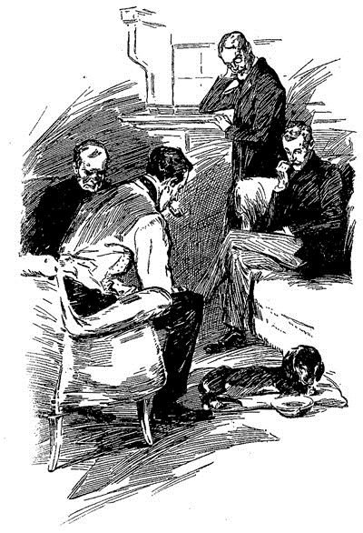
シャーロック・ホームズは深く息をつき、額の汗を拭う。「僕はもっと自信を持つべきだな。わかりきったことだ。あるひとつの事実が、一連の長い演繹に相反するように見えたときは、必ず別の解釈ができるということ。箱に錠剤が二粒あるなら、一粒が大変な猛毒で、もう一粒がまったくの無害。そんなこと、実物を見るより先にわかって当然なのだ。」
最後の言葉に私は面食らってしまい、まったく正気の沙汰と思えなかった。とはいえ、ホームズの推理の正しさを証明する犬、死んだ犬がいる。頭の中の霧が徐々に晴れていき、真実がほのかに、かすかに見え始めてきた。
ホームズは言う。「君たちには、どれも奇異に映るだろう。なぜなら君たちは、捜査の初めから目の前にあった、重要な、たった一つの真の手がかりに気がつかなかったからだ。幸いにも僕は気づいた。それからというもの、起こることすべてが、最初の仮説を裏付けるばかりだった。論理的帰結なのだ。それ故、君たちを悩ませ、真相を曇らせたものは、私にしてみれば明るくするものであり、考えを裏付けるものだった。奇異と謎を混同するのは誤りだ。限りなくありふれた犯罪も、最大の謎になりうる。なぜなら目新しいであるとか、これといった特徴がなければ、演繹の取っかかりもなくなる。この事件も、被害者の死体がただ道ばたで発見され、事件を際立てる異常かつ扇情的なことが何もついてこなければ、どこまでも解きがたいものとなったであろう。この奇妙な数々の点は、事件を難しくするどころか、かえって簡単にする効果があったというわけだ。」
グレグソン氏はこの話の間、何とか我慢して聞いていたが、もはや抑えきれなくなっていた。「よろしいですか、シャーロック・ホームズ先生。あなたが切れ者で独自のやり口をお持ちだとは誰しも認めるところですが、吾輩どもが欲しいのは、やり口なり今の説法なりの先なんです。男を捕まえなきゃならんのですぞ。吾輩は事件を明らかにしたつもりでしたが、違ったようです。シャルパンティエイ青年はふたつめの事件には関われませんからな。レストレードが追っていたスタンガスンにしても違うのは明らかです。色々と思わせぶりなことを小出しにされるからには、吾輩どもよりはよくご存じなのでしょう。もういいでしょう、吾輩どもには、単刀直入に訊く権利があります。この件、どこまでおわかりで？ 犯人の名前も言えるんでしょう？」
「あたしもグレグソンに同意せざるをえませんよ、先生。」とレストレードも口を添える。「我々二人骨折って、どちらも失敗。ここに来てからというもの、もう証拠は揃っているというようなことを再三おっしゃる。これ以上、だんまりってことはないでしょう？」
私も言う。「殺人犯を捕まえるのが遅れたら、新たなる凶行の機会を与えることになる。」
かくも我々に迫られて、ホームズは悩んでいるようだった。うなだれながら、眉をひそめ、部屋の中を行ったり来たり。考えに耽っているときの癖だった。
やがて急に足を止め、我々をまっすぐに見据える。「これ以上の殺人はない。そのことはもう恐れずともよいのだ。犯人の名を知っているかと訊いたね。知っている。ただ知るだけなら小さなことだ、犯人に手をかける労力に比べれば。まもなくできるだろう。手を回しておいたので、何とかできると思っている。ただ慎重に事を運ばねば。相手となるのは、知恵があり、何をしでかすかわからぬやつ。仲間もいる。彼と同等の頭を持っていることは、一件よりわかっている。だが向こうがまだ足はついていないと思っている限り、逮捕の見込みもある。わずかでも悟られれば、犯人は名を変え、今すぐにでもこの大都会、四〇〇万の人々の中に消えるだろう。別に君たちの気分を害するつもりはないが、言っておかねばなるまい。この犯人は警察より一枚上手だ。だからこそ君たちに協力を仰がなかった。失敗した場合の責めはすべて私が受けよう。覚悟している。今はただ約束するしかないのだが、告げても段取りが危うくならないとなれば、すぐ君たちにも。」
グレグソンとレストレードはこの約束にご不満の様子だった。あるいは警察の力を見くびられたからかもしれない。前者は亜麻色の髪の生え際あたりまで顔を紅潮させ、後者は珠のような目を不愉快だ、腹が立つ、と言わんがごとくぎらつかせていた。と、二人がしゃべろうとした瞬間、扉の叩く音がして、浮浪児の代表、ウィギンズ少年がみすぼらしい姿を見せた。
「どうも、先生。」と自分の前髪に軽く手をやって敬礼をし、「表に馬車をつれてきました。」
「ご苦労。」とホームズは穏やな口ぶりだ。「どうしてスコットランド・ヤードもこういった型を採用せぬ。」と、引き出しの中から鋼の手錠を取り出す。「この見事なバネ仕掛け。あっというまにかかる。」
レストレードは、「古いので十分ですよ。かける相手を見つけさえしたら。」
「その通り、その通りだ。」とホームズは微笑む。「御者に荷物を手伝ってもらった方がいいな。ウィギンズ、ひとつ彼に上がってくるよう言ってくれたまえ。」
あたかも今から旅に出るような口ぶりなので、私は驚いた。そんなこと初耳だ。部屋に小型の旅行鞄があり、友人はそれを引き出して、革紐で締めつけ始めた。一心に力をこめていると、御者が部屋に入ってくる。
「御者くん、ひとつくくるのを手伝ってくれないか。」と友人はひざまずいたまま作業を続け、振り返りもしない。
男は幾分むっつりと、ふてぶてしく近づいてきて、手伝おうと手を下ろした。刹那、鋭い音がして、続く金属のこすれる耳障りな音。そしてシャーロック・ホームズがその場から再び立ち上がる。
「諸君。」とホームズは目を輝かせ声を張った。「ご紹介しよう。ジェファースン・ホープくん、イーノック・ドレッバーとジョーゼフ・スタンガスンを殺害した犯人だ。」
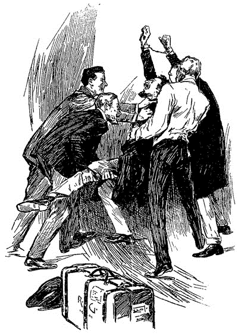
すべて、あっという間の出来事だった――ほんの一瞬だったため、私には理解する暇もなかった。そのときの記憶は鮮明に残っている。ホームズの勝ち誇った表情、声の響き、御者の驚き、かんかんになった顔、いからせた目と、その先の光る手錠、手品のごとく御者の腕にはまっていて。一、二秒の間、誰もが一群の彫像のように立ちつくしていた。怒っているのか、言葉にならないうなり声がして、手錠の男はホームズの手から逃れようと身体をひねり、窓に向かって思い切り体当たりをした。桟やガラスが飛び散り、大きく穴が空く。だが出ようとする男をグレグソン、レストレード、ホームズが猟犬スタッグハウンドよろしく飛びかかった。男は部屋に引きずり戻され、格闘になった。男は力強く凶暴で、我々四人は何度も何度も振り回された。突然発作を起こした患者のように、手に負えなかった。男の手や顔は窓ガラスを破ったために血まみれになっていたが、失血で力が弱まる気配はない。レストレードがうまく手を首巻きの中に入れ、首を軽く締めてようやく、抵抗しても無駄だということが男にもわかったようだった。とはいえ手と同様に足をくくるまでは安心できない。終えると、我々は息も切れ切れに立ち上がった。
シャーロック・ホームズは言葉を放つ。「彼の馬車がある。それでスコットランド・ヤードまでつれていこう。さて諸君。」とここで嬉しそうに微笑み、「我々のささやかな謎も終わりを迎えた。どのような質問でもお好きに。もう危険は去ったゆえ、何でも答えよう。」
［＃改丁］
［＃ページの左右中央］
第二部 聖徒の地
［＃改丁］
第一章 アルカリ大平原にて
広大な北米大陸の中央部に、文明の西進を長年阻んできたきびしい不毛の荒野がある。西はシエラネヴァダ山脈から東はネブラスカ、北はイエローストーン川から南はコロラドまでの、荒廃した無音の地だ。この恐ろしい地域の自然は一様ではない。山頂を雪で覆われた高い山と、暗く陰鬱な谷からなっている。急流が曲がりくねる深い谷を流れ、大平原では冬に銀色の雪、夏にはアルカリの灰が一面に広がる。しかし、みな不毛できびしく、残酷であるという点では共通している。
この絶望の地には誰も住まう者はない。ポーニ人やブラックフット人の一団が狩り場を求めて通ることはあるだろうが、どんなに勇敢でくじけぬ者であろうと、この恐ろしい地で迷い、再び草原に生還したときにはほっとせずにはいられない。藪の中でコヨーテが忍び、空ではコンドルが旋回し、暗い谷には獰猛なグリズリーが岩間に餌を求めて闊歩している。荒野の孤独な住人たちだ。
世界でこれほどまで寂寞たる光景は、シエラブランコ山脈の北側からの眺めをおいて他にあるだろうか。見渡すかぎりの大平原が広がり、アルカリの灰で覆い尽くされ、小さなチャパラルの木立が点在している。地平線の上には長く連なる山嶺があり、凸凹した頂は雪のまだら模様がついている。この地のどこをさがしても、生命のきざしも影も、何もない。鋼色の空には鳥もなく、くすんだ灰色の地には動くものもなく、なによりも、まったく物音がない。耳をすませても、荒野の力の前には、音という音は存在しない。ただ無音、息の詰まる完全な無音――
この大平原に命の影ひとつとしてない、と人は言うが、それは少し違う。シエラブランコから眺め下ろしてみると、荒野を横切るひとつの細道があり、曲がりくねって、はるか彼方に消えているのがわかる。馬車の轍やたくさんの冒険者によって踏みつけられた跡だ。そしてあちこちに白いものが散らばり、太陽に照らされ、さえないアルカリの灰の中でそれだけが輝いている。近づいて調べてみるといい。すべて骨だ。大きくごつごつしたものから、小さくころころしたものまで。先のは牛のもので、後のは人間のものだ。この一五〇〇マイルも続く恐怖の旅路を歩けば、道ばたに果てた人々の名残をここそこで見るだろう。
一八四七年五月四日のこと、この光景を見下ろし、立っていたのは一人の孤独な旅人だった。その姿から、この地の地霊か守り神に見まごうほどだった。四〇代と六〇代どちらに近いと言われても、見ただけで言い当てるのは難しいだろう。顔はやつれて骨ばかりで、羊皮紙のように赤茶けた肌が骨に強く引っ張られていた。茶褐色の髪やあごひげには白いものがまじっていて、くぼんだ眼窩の奥で目が不自然にぎらぎらと光っていた。小銃をつかむ手はほとんど肉がなく骨のようだ。旅人は武器を支えにして立っていたが、体格が大きく骨格もがっしりしているので、元は丈夫で強靱な身体の持ち主であろう。だが、しなびた肢体によれよれの服を着ているところをみると、いったいなぜこのように力なく衰えて見えるのかわかる。旅人は死にかけているのだ、飢えと渇きで死にかけているのだ。
旅人は谷を必死に進んでいく。そして近くにあった小高い丘を登りつめた。どこかに水はありはしないかという一抹の希望を抱きながら。アルカリ大平原が目の前に広がり、遠くには荒涼とした山々が連なっている。どこにも木や植物がありそうにない、したがって水気はどこにもない。広がる光景のどこにも、希望の光はなかった。北を、東を、西を、旅人は何故だ何故だと訴えるように睨み、やがて旅の終わりが近づいていることを悟った。自分はこの不毛な岩山の上で果てつつあるのだ、と。「ここであろうと、二〇年先に羽布団の上であろうと、同じことだ。」と旅人はつぶやき、丸石の陰に腰を下ろそうとする。
坐る前にまず、役立たずの小銃を地面に置き、鼠色の襟巻きに包んだ大きな荷物を下ろす。ずっと右肩に載せて運んでいた荷物だ。しかし旅人の力にはいささか重すぎたようで、下ろしたときに、荷物が地面に強く叩きつけられる恰好となった。するととたんに、灰色の包みの中からうめくような叫び声が聞こえて、中から冴えた鳶色の目をもった、おびえた、小さな顔と、そばかすとくびれのついた二本の手が飛び出した。
「痛いっ！」とあどけない声で抗議する。
「そうか？ そんなことをするつもりじゃなかったんだが。」と旅人はわびるように言い、灰色の包みを解いて、年の頃五歳ほどの美しい少女を外に出す。きれいな靴、きちんとした桃色ワンピースに、小さなリネンのエプロン。こういうところに母親の心遣いが見て取れる。少女の顔は真っ青になっていたが、健康そうな腕と脚を見ると、連れの旅人ほどはつらくなさそうだった。
「大丈夫か。」と旅人は心配そうに訊く。少女がずっと後頭部にある乱れた黄金色の巻き毛をさすっていたからだ。
「キスして治して。」と少女は旅人に怪我した部分を見せて、まじめに言う。「ママがいつもやってたの。ねえ、ママはどこ？」
「ママはお出かけだ。もうしばらくしたら会える。」
「お出かけしたんだ。あれ、でも、行って来ますって言われてない。だいたいいつも言ってたよ、おばあちゃんのところにお茶飲みに行くときは。いなくなってからもう三日。ねぇ、のどがからからなんだけど。ないの、水もないの食べ物もないの？」
「ああ、ないとも、嬢ちゃん。もうしばらく我慢するんだ、そうしたらみんな良くなる。頭をこんなふうにもたせかけておきなさい。その方が楽だから。唇が乾いて嬢ちゃんもしゃべりにくいだろうが、今どんな手札なのか話しておいた方がいいだろう。ん、それは何だね。」
少女ははしゃぎながら、きらめく雲母の薄片をふたつ手の上に乗せて、「すてきでしょ、きれいでしょ。みんなで家に帰ったら、ボブお兄ちゃんにこれをあげるんだ。」
「すぐに、もっと素敵なものを見ることになる。もう少しで。さあお話するんだったね。前に、川を出発しただろう？」
「うん。」
「みんな、すぐに次の川が見えると思ってたんだ。だが何が悪かったか、コンパスか地図か何なのかわからないが、見つからなかった。水もなくなった。もう嬢ちゃんのような子が飲むだけしか残ってない……それで、それで……」
「それで、おじさんは手も顔も洗えないんだ。」と少女はまじめな顔をして、旅人の赤で汚れた顔を見つめる。
「そう、それに飲めなくもなった。ベンダーさんが最初にお出かけして、それからインディアンのピート、次はマグレガーの奥さん、次はジョニー・ホーンズ、次は、嬢ちゃん、君のママだ。」
「ママも死んじゃったんだ。」と少女は顔をエプロンにうずめて、つらそうに涙を流した。
「ああ、おじさんと嬢ちゃんを残して、みんなお出かけしてしまったんだ。おじさんは、こっちの方に水がありそうだと思って、嬢ちゃんをかついで一緒に流れてきたんだが、どうも思わしくないらしい。もう一粒の望みも残ってないんだ。」
「あたしたちも死ぬってことなの？」と少女は急に泣くのをやめて、涙顔を上げた。
「まあそんなところだろうな。」
少女は嬉しそうに笑って、「なんでもっと前に言ってくれないの？ あたし本当にびっくりしたんだから。だって、あたしたちが死ぬってことは、あたしたち、ママとまた一緒にいられるってことでしょ。」
「ああ、そうだな、嬢ちゃんはな。」
「おじさんだってそうよ。おじさん、すごくいい人だったって言ってあげるんだから。ママ、きっと天国の扉のところで、大きな水差しいっぱいの水と、そば粉のパンケーキをたくさん用意して迎えてくれるんだから。もちろん、両側をこんがり焼いた、あたたかいパンケーキ。ボブお兄ちゃんやあたしが大好きなんだ。あとどれくらいで着くの？」
「さあ……長くはない。」と、旅人は北の地平線の方をじっと見る。蒼天には三つの小さな点が見える。点は段々と大きくなり、あっと言う間にこちらへ近づいてくる。目に見える距離になってようやく、三羽の大きな茶色の鳥だとわかった。鳥は二人の旅人の頭上を旋回し、二人を見渡すことのできる岩の上に落ち着いた。西部の猛鳥、コンドルだ。コンドルの到来は、死の前触れである。
「雄鳥と雌鳥だ。」と少女は不吉な鳥を指差して、うれしそうに叫ぶ。そして飛び上がらせようと手を叩く。「ねぇ、この地は主がお作りになったの？」
旅人は思いもしなかった問いに驚きつつも、「もちろん」と答えた。
「イリノイにこの地をお作りになって、ミズーリもお作りになったのね。でも、ここは誰か別の人が作ってしまって、あまりうまくできなかったんだと思う。だって、水とか木とか忘れてるんだもん。」
「祈りをささげてみるかい？」と旅人はためらいながら言う。
「まだ夜じゃない。」
「心配ない。確かに普通じゃないが、そんなこと気になさるまい、大丈夫。あれを今言ってごらん、みんなと平原にいたとき、馬車の中で毎晩唱えていただろう？」
「おじさんはそのお祈りをしないの？」と少女は不思議そうに見つめる。
「思い出せないんだ。おじさんはこの銃の半分くらいの背の頃から、お祈りをしたことがない。だが決して遅くはないだろう。嬢ちゃんがお祈りしたら、おじさんもそばから加わるよ。」
「じゃあ、おじさん、ひざをつかなきゃ。で、あたしも。」
少女は跪くために、あの包みを地面に敷いた。
「こういうふうに手を組み合わせて。ちゃんとした気持ちになるから。」
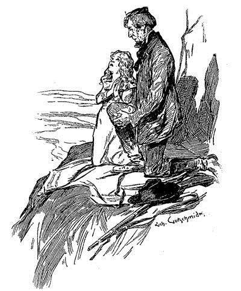
もしコンドル以外に見ているものがあれば、奇妙な光景に映っただろう。二人の旅人が肩寄せ合って、狭い布の上に跪いている。おしゃべりな少女と、勇猛果敢な冒険者。少女のふっくらした顔と旅人の骨張った顔は、曇りない空に向いて、恐ろしい存在を目の前にして、心からの祈りをささげている。一方はかぼそく澄んで、もう一方は深く厳しい、その二つの声は一緒になって、慈悲と許しを乞うていた。祈りが終わると、二人は丸石の陰に再び腰を下ろした。まもなく少女は眠りに落ち、旅人の大きな胸の中に気持ちよく沈み込む。旅人もしばらく少女の寝姿を見守っていたが、自然の力には勝てなかった。三日三晩、旅人は休むことも眠ることもしなかったのだ。ゆっくりと眉を疲れた目の上に落とし、うなだれて、旅人の白髪混じりのひげが少女の長い金髪と交じり合ってしまった。二人そろって、夢も見ぬほど深く眠った。
もし旅人があと三〇分起きていたら、奇妙な光景が目に映ったことだろう。はるか彼方、アルカリ大平原の地平線に、小さく砂塵が舞った。本当に小さかったので最初は霧とほとんど区別がつかなかったが、徐々に大きくなっていって、くっきりと形をもった雲のようなものになった。この雲はさらに大きくなりつづけ、動く生き物の大群が引き起こしているということが、はっきりしてきた。ここが肥沃な土地であれば、一見して大地の草を喰らう野牛の大群でも近づいているのではないかと思っただろう。舞う粉塵が二人の遭難者の休んでいた孤独な断崖にさしかかったとき、もやの中から馬車の帆布と武装した騎手が現れ、それが西部に向かう大きなキャラバンであるということがわかった。しかし、ものすごい規模のキャラバンだった。先頭が山の麓に届いているというのに、最後尾がまだ地平線上に見えないのだ。大平原を真っ直ぐ横切って、馬車や軽馬車、馬上の人、徒歩の人などの隊列が進んでいる。大勢の女性が荷物を背負って続き、子どもたちが馬車のそばで歩いたり、馬車の白い覆いの下から外をのぞき見たりしている。普通の移民隊ではないようで、むしろ新しい土地を探さねばならぬまでに追いつめられた、遊牧民といった印象だった。澄み切った空に、大勢の人間から発せられる混沌とした騒音や、車輪のきしみ、馬のいななきなどが響き渡る。騒がしかったが、その上にいる二人の疲れ切った旅人を目覚めさせるには至らなかった。
列の先頭に二〇人ばかり、鋼鉄のようにいかめしい顔をして、地味で目立たない服を着て、ライフルで武装した馬上の男たちがいた。断崖の下につくと、男たちは立ち止まり、ちょっとした相談を始めた。
「兄弟諸君、右に泉がある。」口許かたく、灰色をおびた毛をした無髯の男が言った。
「シエラブランコの右――リオ・グランデへ行くつもりか。」と別の男。
三人目が、「水の心配などいらぬ。岩山から水を出されたお方のことだ、その選んだ民をこんなところで見捨てるわけがないだろう。」
「アーメン、アーメン。」と全隊がそれに応える。
そうして再び行進を再開しようとしたとき、眼光鋭い若者が驚きの声を上げて、頭上のごつごつした岩を指差した。頂上で桃色の小さな布きれの端がひるがえっていたからだ。背後にある灰色の岩に対して、明るい色が目立っていた。それを見ると、一斉に手綱を引いて、銃を肩から外し、また前衛強化のために後ろから若い騎馬隊が急いでやって来た。「赤肌か」と口々にささやかれる。
隊長らしき年長の男が、「ここにインジャンがいるはずはない。ポーニ人をやりすごしたゆえ、あの偉大な山々を越えるまでは他の部族などおらぬはず。」
「行って見てこようか、兄弟スタンガスン。」と一人が言う。
すると我も我も、と十人ほどの声があがる。
「馬をここに置いて行け、我々はここで待っている。」と年長の男が言うと、すぐに若者は下りて馬をつなぎ、急な斜面を登っていった。若者たちの好奇心をかきたてるものへ向かって。物音を立てず、素早く登っていく。偵察兵として経験を積んで、素早さには自信があった。下の大平原から、若者たちが岩から岩へ軽やかに飛んでいくのが見えた。空を背景にして、若者たちの姿はくっきりと映っていた。最初に驚きの声をあげた若者は、先頭に立って導いていく。だが突然、後ろの者に対して手を挙げた。驚きを必死に抑えたかのようだった。他の者は彼に追いつくと、そこに映った光景を見て、同じ行動をとらざるをえなかった。
不毛の岩山の上に、平坦なところが少しあり、そこに大きな丸石が乗っていた。そして石の前に、長身で長いひげをたくわえ、いかつい顔をした、ひどくやせぎすの男がかがんでいた。しかし穏やかな顔で規則的に息をしているところを見ると、眠っているらしい。男のそばに少女がいた。白く丸い腕を男の赤茶けた筋っぽい首に回して、黄金色の頭を男の別珍のチュニックに預けていた。少女のバラ色の唇は開いていて、中には雪のように白く、並びのいい歯を見せていた。あどけない顔には楽しげな微笑みが浮かんでいる。ふっくらとした小さな白い足に、白い靴下ときんぴかの留め金のついた可愛い靴を履いていたが、それはそばにいる男のしわくちゃの長い足と、奇妙な取り合わせをなしていた。このおかしな二人のもたえれている岩の上には、三羽のいかめしい猛鳥が宿っていたが、新しく人がやってきたのを見て、がっかりしたと言わんばかりのしわがれ声をあげて、不機嫌に羽ばたき去った。
不吉な鳥の叫び声で二人は目を覚ますと、おどろいて辺りを見渡した。男はよろめきながらも立ち上がり、大平原を見下ろした。男が眠りに耐えかねたときにはただ荒れ果てていたばかりなのに、今や人と動物の大部隊が横切っている。男はそれを見て、信じられないといった表情を見せると、骨張った手で目を覆って、「これがいわゆる幻覚というやつか。」とつぶやいた。少女は男のそばにいて、黙って上着をつかんでいたが、子どもらしく、何だろうと不思議そうにながめ回していた。
救助隊はすぐに二人の遭難者に、これは幻覚ではないと信じさせることができた。若者の一人が少女を肩の上に担いで、そして二人が痩せた男を支えて、馬車のところまで連れていくことになった。
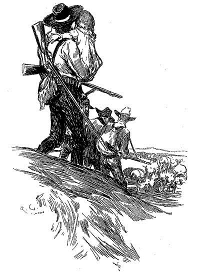
男は口を開く。「名前はジョン・フェリア。私とこの小さいのは、二一人いた中の生き残りだ。あとはみんな飢えや渇きで、はるか南の方で死んでしまった。」
「この子はお前の子か？」と誰かが言った。
すると男は噛みつくような口調で、「今はそうだ。私の子だ、私が助けたのだ。誰にも引き離させはせんぞ。こいつはルーシィ・フェリアだ、今日この日から。何者だ、あんたら。」と男は日焼けした屈強な救助者たちを疑わしそうに見て、「随分たくさんおるようだが。」
若い男が答えた。「概算で一万です。我々は迫害された神の子、天使モロナイに選ばれた民です。」
「その天使の名は耳にしたことがないが、えらく大勢の人間を選んだようだな。」
「神聖なるものに対して、冗談を言うものではありません。我々はこの神聖なる文言、エジプト文字によって金版に書かれ、パルミラの聖ジョセフ・スミスに預けられた文言を信じている者たちなのです。我々はイリノイの地にあるノーヴーからやって来ました。そこに我々の寺院があったのです。今は暴力の徒あるいは無神論者から避難するための地を求めて、たとえ荒野の中心でもと、探しに来ているのです。」
ノーヴーという地名にジョン・フェリアは思い当たるところがあった。「なるほど、モルモン教徒か。」
「いかにもモルモン教徒だ。」と周りが一斉に答えた。
「ところで、この一団はどこへ行くんだ。」
「我々は知らない。預言者のもと、神の御手に導かれるのみである。あなたもあの方の前に出なければならない。そうすれば、あなたに何をするべきか、お答えになって下さることでしょう。」
ようやく岩山の麓に着き、巡礼者の集団に囲まれた――青ざめておとなしい顔をした女たち、大きく笑う子どもたち、熱く真剣な目をした男たち。驚きと憐れみの声があちこちで起こった、旅人の一人が少女であり、もう一人がやせ衰えた男であるとわかったからだ。しかし若者たちはそのまま二人を連れて、おびただしいモルモン教徒につきしたがわれながらも、馬車へ向かって急いでいた。向かう馬車はひときわ大きく、華やかでこぎれいな外装のため目立っていた。他の馬車は二頭ないし多くても四頭なのに、六頭の馬がつながれていた。御者のそばに一人の男が坐っていた。三十を越えるか越えないかぐらいだが、大きな頭、断固とした顔から指導者であると見て取れた。茶色の背表紙をした本を読んでいたが、若者が近寄ると本を傍らに置き、注意深く事の顛末を聞いた。終わると、指導者は二人の遭難者の方を向き、厳粛に語りかけた。
「もし、我々がうぬらをそばに置くとしたらば、それはただ我々の教義を信じる者としてのみである。我々は羊の群の中に狼を置かぬのだ。今この荒野で白い骨となった方が最善なのだ、うぬらが、やがて果実すべてを腐らせてしまう腐敗の一粒になるのが必然であるのならな。このことを承知した上で、我々と行動をともにするというのか。」
「どんな条件であろうと、私はあなたと行動をともにします。」フェリアが力強く答えたので、きびしい顔をした長老たちも笑みをこぼさずにはいられなかった。指導者だけは相変わらず、いかめしい表情のままで言った。
「兄弟スタンガスンよ、連れてゆけ。この男に食べ物と飲み物を与えよ。子どもも同じ扱いをせよ。そして、我々の聖なる教義を教えることを、お前の役目とする。たいそう時間を食ってしまったようだ。前進！ いざ、シオンへ！」
「いざ、シオンへ！」とモルモン教徒の一群は叫び、その言葉はさざ波のように長いキャラバンを口から口へと伝わっていき、隊列の遠くの方で、小さなざわめきとなって消えていった。鞭の音、車輪のきしみとともに大馬車隊が動き出し、全隊列も応じてすぐにうねりながら進んでいく。二人の旅人の世話をまかされた長老は、自分の馬車に二人を連れていった。そこには食事の準備が整っていた。
「これからはここにいなさい。一両日もあれば疲れもとれるだろう。その間に、今後は我々の教義に従うと心に記しておきなさい。ブリガム・ヤングがそうおっしゃった。そしてそれはジョセフ・スミスの声を通して語られた。それは神の御声であらせられる。」
［＃改ページ］
第二章 ユタの華
ここには、モルモン教徒が道中どのような試練や苦しみに耐え、そして安住の地へ辿り着いたかを詳しく書かない。ミシシッピ川の岸からロッキー山脈の西側まで、彼らは堪え忍びつつ頑張った。歴史の中でも、このようなことはおそらく他にないだろう。敵、猛獣、飢え、渇き、疲れ、病気――自然の課した考え得るかぎりの障害は、すべてアングロ＝サクソン特有の粘り強さをもって乗り越えられた。しかし、長い旅とたび重なる恐怖は、どんなに心が強いものであろうとも、その心をおびやかさずにはいなかった。それゆえ、誰しも膝をつき、心から祈りを捧げた。ついにユタの広大な谷が、太陽の光を浴びながら、目の前に現れたのだ。指導者は教徒にこう諭した。ここが約束の地である、そしてこの汚れなき土地は、永遠に我々のものである！
まもなくヤングは、指導的役割を果たしただけでなく、都市の運営にも手腕を発揮した。土地が測量され、これからの計画が立てられた。その中にはこれから作られる都市の設計図も描かれていた。まわりの農地は、個人の地位身分によって、相応の分が割り当てられた。商人は貿易を許され、職人は仕事を与えられた。通りが、広場が、街が一瞬で出来上がっていく様子は、まるで魔法のようだった。広い土地に水を引き、かこいで仕切って、植物を植えてととのえると、翌年の夏にはどこも小麦がいっぱいで、一面黄金色になった。この新しいふるさとでは、すべてがうまくいった。手始めに、街の中心に大きな寺院を建て始め、むくむくと空にそびえたっていった。あかつきの頃から黄昏が終わるまで、ハンマーの叩く音とノコギリの切る音が絶えることはなかった。これは、道中を無事に導いてくれた主に対する、移民たちの感謝の気持ちだった。
さて、二人の遭難者、ジョン・フェリアと少女だが、少女はフェリアの養女となり、二人はモルモン教徒とともに、この偉大な巡礼の旅に最後までついていくことにした。少女、ルーシィ・フェリアはスタンガスン長老の馬車に乗って旅を楽しんだ。同乗者はスタンガスンの妻が二人と、わがままし放題の子どもが一人。ルーシィは子どもということもあって、母親の死んだ衝撃から立ち直るのも早かった。また女性たちがよくしてくれたので、キャンバス屋根の動く家であっても、すぐさま新しい生活に順応することができた。一方、フェリアも自分を取り戻し、すぐれた案内人および精力的な狩人として頭角を現した。まもなく新しい仲間から尊敬を集めたので、フェリアに広い土地が与えられても、文句を言うものは誰もなかった。どのモルモン教徒に比べても、大きさ、土壌の豊かさともに申し分ない土地だった。ただ、指導者のヤング、四長老のスタンガスン、ケンボール、ジョンストン、ドレッバーの五人は別格だったけれども。
こうして自分のものとなった農場に、ジョン・フェリアは自力で丸太小屋を立てた。年を経るにつれ、これは増築されていき、大きな屋敷にまでなった。フェリアは実行力のある男で、取引もうまく、手先が器用だった。体格も鉄のごとくで、一日中耕すことができた。その結果、農場をはじめ、フェリアのやることは何でも成功した。三年後には近所と比べていい暮らしができるようになり、六年後には小金がたまるようになってきて、九年で金持ちと言えるようになった。そして一二年経ったときには、ソルト・レイク・シティの中でも五指にはいるまでになった。広々とした内海から遠くはウォサッチ山脈まで、ジョン・フェリアの名声がとどろいた。
しかし、そんなフェリアにも、同じモルモン教徒によく思われないところがあった。どう言って説いても、フェリアは嫁を迎えろという相手の意見に耳を貸さなかった。どうして断固拒否するのか、フェリアは説明せず、この決意を守り通す、それだけでいいと思っていた。そういうわけで、信仰が薄いからそんなことをするのだと荒々しく叫ぶものも出てくれば、ただ金をためて浪費したくないだけだと言うものも現れ、また、若い頃何か恋愛沙汰があって、大西洋岸に黄金色の髪をした女でも残してきたんだろうと言うものまでいる始末だった。理由はどうあれ、フェリアは独身をつらぬいた。結局それ以外の点では熱心に信仰を守っていたため、敬虔実直な男であるという評判を得た。
ルーシィ・フェリアは丸太小屋で育ち、養父の仕事を何でも手伝った。山の澄んだ空気と、松やにの香りが少女の子守歌だった。年を重ねるにつれて、ルーシィの背は伸び、体つきもしっかりしてきた。血色の良い頬に、軽やかな足取り。街道を走り、フェリアの農場のそばを通った旅人は、みんな目の覚めるような思いをした。なぜなら、しなやかな乙女の影が小麦畑を軽やかに歩いていったり、あるいは生粋の西部っ子として親のムスタングを悠々と乗りこなしていたり、という光景を見ることになったからだ。かくしてつぼみは華となり、養父が一番の豪農となる頃には、典型的なアメリカ美人となって、太平洋地域でルーシィにかなうものはいなかった。
だが、少女に大人の女が芽生えたことにはじめて気がついたのは、父親ではなかった。滅多にない例だと言えるが、そういった神秘的な成長というものは、少しずつ、ゆっくりと進んでいくので、ある日突然というわけにはいかない。この乙女自身、はじめて気がついたのは、ある人物の声や手の感触に、自分の心がときめいた瞬間だった。そして自分の中に性が芽生えたということに、畏敬の念を抱いた。誰であろうと、ほんの小さな出来事が、新しい生活の夜明けを告げたような、そんな日を思い起こすことができるだろう。ルーシィ・フェリア自身、その出来事はたいへん重要なことだった。しかし、それはルーシィ本人やその周囲の人の未来を変えることになった。
六月の暖かい朝のこと、末日教徒は自らが紋章にしていた蜂の巣にたがわず、蜂のように忙しかった。野原でも街でも、皆そろって仕事にいそしんでいた。埃っぽい街道では、重い荷を積んだラバが列になり、西に鼻先をそろえて進んでいた。この頃ちょうどカリフォルニアでは黄金熱が盛んで、この選民の街がちょうど通過点に当たっていたのだ。また同じように、外の牧草地から来る羊や牛の群や、果てしない旅に人馬ともに疲れ果てた移民団などが来ていた。しかし、その雑然とした群を、すぐれた乗馬技術でもって駆け抜けるものがあった。ルーシィ・フェリアだった。その魅力的な顔には血がたぎり、長い栗毛は風になびいていた。街にいる父親に頼まれ、このように馬で駆けるのは慣れていた。若者らしく何も恐れなど持たず、ただ仕事のことを、ただ成し遂げることだけを考えていた。旅で汚れた冒険者は、ルーシィの背中を驚いたふうに見つめていたし、毛皮一枚で旅をするインディアンも、普段は感情を表に出さないのに、その白人の乙女の美しさにはびっくりして、いつもの禁欲的な態度をくずしていた。
街のはずれに来ると、ルーシィは道をふさがれてしまった。勇ましい牛飼い六人ほどによって、牛の大群が草原から追い立てられてきていたのだ。ルーシィは我慢できなくなって、隙間を縫って、この壁を通り抜けようとした。だが、かろうじて入ったものの、群を抜けきれず、気がつけば身動きがとれなくなっていた。周りには凶暴な目に長い角を持った牛が走り回っていた。牛の扱いはお手の物だったから、ルーシィはうろたえなかった。馬を巧みにあやつり、群の中、道を切り開こうとした。だが運悪く馬の横腹に、牛の角の強烈な一突きがあった。当てたのか当たったのかはわからないが、とにかく馬は興奮して暴れ出した。鼻息も荒く、後ろ足で立ち上がり、身体を上下に大きく揺さぶりながら、猛々しく走った。熟練の騎手でなければ、振り落とされるような勢いだった。切迫した状況にあった。興奮した馬が飛び跳ねるごとに、どこか角にぶつけて、さらに興奮を高める。ただ鞍から落ちまいとするだけで精一杯だった。こんな危険な牛の群の中では、落馬は即、死を意味する。このような状況には慣れていなかったためか、ルーシィは上体を大きく揺さぶられ、手綱の握りもゆるんでいった。埃が立ちこめ、生物の熱気に満ち、息がつまる。ルーシィはもうだめかと思いかけていた。しかし後ろから、今助けるぞ、という暖かみのある声が聞こえ、同時に褐色のたくましい手が怯えた馬の轡をつかんで、群の外へと引っ張っていった。まもなくルーシィは群から抜け出すことができた。
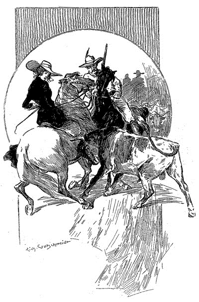
「お嬢さん、お怪我はありませんか。」ルーシィを助け出した男が、礼儀正しく言った。
ルーシィは男の日に焼けてたくましい顔を見て、笑い飛ばすと、無邪気に言った。
「本当にびっくりした。ポンチョが牛の群にあんなに怯えるなんて。」
「じっとしがみついてくれていたおかげで、何とかなりました。」
男は背が高く、精悍な顔つきの若者で、糟毛の馬にしっかりまたがっていた。服は狩猟用の軽装で、肩からケンタッキー銃を下げている。
「ジョン・フェリアのお嬢さんとお見受けしますが。フェリアさんの家から走り出てきたのを見たもので。彼にあったら、あのセントルイスのジェファースン・ホープを覚えてますか、とお伝えください。もしあのフェリアさんなら、私の父とは親友ということになりますし。」
「あなたが来て直接うかがったらいかが？」
とルーシィが不敵に言うと、若者はこの申し出に喜んだようで、黒い瞳がきらめいた。
「ぜひ。しかしなにぶん二ヶ月も山にいたもので、我々はおうかがいできるような恰好ではありませんから、その点、お父さんには我慢してもらわなければなりませんね。」
「それどころか、父は感謝しなきゃなりませんよ。それにわたしだって。父は大事にしてくれてるから、わたしが牛に踏みつぶされでもしたら、立ち直れなくなってたでしょうね。」
「私だって立ち直れない。」
「それってどういうことですか？ わたしがあなたの何だっていうの。友だちでもないのに。」
若者の浅黒い顔がみるみるくもったのを見て、ルーシィ・フェリアは大声で笑った。
「本気で言ったんじゃありませんよ。もちろん、もう友だちです。挨拶でもしにいらして。あ、わたしもう行かなきゃ。仕事で父の信用を失いたくないし。さようなら。」
「さようなら。」と若者はつば広のソンブレロを持ち上げると、ルーシィも小さな手を振った。ルーシィはムスタングに回れ右させて、乗馬鞭をふるうと、粉塵の渦巻く広い道に駆け戻っていった。
若きジェファースン・ホープは仲間とともに馬を駆ったが、気分は晴れず、口数も少なかった。ネヴァダ山脈の中で銀を求め、そして富を増やそうとソルト・レイク・シティに戻った。それに見合うだけの豊かな鉱脈を見つけていた。ホープは仲間うちでも一番のやり手だったが、この突然の出来事で、ホープの関心は別の方に向けられていた。この美しく、シエラのそよ風のように天真爛漫な少女を見るだけで、ホープの熱く抑えきれない想いがふつふつとわき上がった。ルーシィが目の前からいなくなって気づいた。このままでは死んでしまう。銀だって何だって構うもんか。ルーシィのことで頭がいっぱいだ。この燃え上がる恋心は、突発的で移り気な少年の気まぐれではなく、強い意志と傲然とした気質を持つ、野性的でたくましい男の熱情だった。ホープは決めたことは何でもやりこなす男だった。この恋もうまくやれると確信していた。人間の努力と忍耐が、むくわれるものである限りは。
ホープはその夜、ジョン・フェリアを訪ねた。何度も赴くうちに、農場でも顔なじみになっていった。ジョンは狭い谷を出ずに、仕事にだけ励んでいたので、ここ一二年間、外界のことを知る機会がほとんどなかった。しかしジェファースン・ホープはそのことなら何でも話せたし、実際に話す際、ルーシィも楽しめるように心がけた。カリフォルニアの開拓者だったから、面白い話には事欠かなかった。まだ西部が何でもありで平穏だった時代の栄枯譚や、自分が斥候になったときの話、罠猟をやったときの話、銀探しの話、農場主になったときの話など様々な話をした。冒険の匂いのするところならどこでも、ジェファースン・ホープはかぎつけて、そこに向かっていた。ホープはすぐに老人の気にいるところとなり、老人は若者を褒めそやした。そんなとき、ルーシィは口をつぐんでいたが、頬を赤らめ、目を輝かせるので、その女心が男に奪われていることは明らかだった。父親は純朴なので、こういったきざしも目に入らなかったかもしれないが、その愛を向けられた男が、気づかぬはずもなかった。
ある夏の午後、ホープは道をやって来ると、門の前で馬を止めた。ルーシィが門の中にいて、ホープの顔を見るために下りてきた。ホープは馬勒を塀にかけると、ルーシィに近寄った。
「ルーシィ、発つことになったんだ。」
ホープはルーシィの両手を取って、顔をやさしく見つめた。
「今一緒に来てくれとは言わない。でも、もう一度戻ってきたときに、来る用意はできるよね。」
「いつなの？」ルーシィは顔を赤らめて笑う。
「せいぜい二ヶ月だ。ルーシィ、きっと君をもらいに戻ってくるよ。二人を邪魔するやつなんて誰もいない。」
「父さんは？」
「彼もいいと言ってくれたよ。この鉱山の仕事がうまくいったら、という条件付きでね。でも、絶対にうまくいくから。」
「うん、信じてる。あなたと父さんがいいって言うなら、もう言うことなんて何もない。」
ルーシィはささやいて、ホープの広い胸に頬を寄せた。
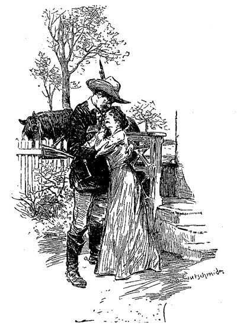
「神さまにお礼を言わなきゃ。」としわがれ声で言うと、ホープは首をかしいで、口づけをした。「もう決まったこととはいえ、君と少しでも長くいると、行きづらくなる。みんな谷のところで僕を待ってる。ルーシィ、もう行くよ。元気で。二ヶ月したら、絶対に戻ってくる。」
そう言うと、ホープはルーシィから離れて、馬にひらりとまたがった。力いっぱいに手綱を引いて、振り返ることもなかった。怖かったのかもしれない。遠ざかる恋人を一目でも見てしまったら、決心が鈍ってしまうから。ルーシィは門の前に立って、男の後ろ姿が見えなくなるまで見つめていた。そして、家に戻った。ルーシィはそのとき、ユタでもっとも幸せな少女だった。
［＃改ページ］
第三章 ジョン・フェリアと預言者の対話
ジェファースン・ホープとその仲間たちがソルト・レイク・シティを去り、三週間経った。ジョン・フェリアは悲しみに暮れていた。あの若者が帰ってきて、娘が自分の前からいなくなるのも、もうすぐのことだった。だが娘の幸せで満ち足りた顔を見ると、反対する気持ちも失せてしまう。いつも心の底では思っていたのだ、娘をモルモン教徒と結婚させてどうなるというのか、そんなものは結婚でも何でもなく、ただ娘を辱める行為に他ならない。他の教義は受け入れるにせよ、その一点だけはゆずれなかった。だが口には出さなかった。近頃この聖徒の地において、異端の説を口にするのは、ひどく危険なことだからだ。
そう、危険――あまりにも危険だった。どんなに敬虔な信者であっても、宗教上の意見は息を殺して小声で言わなければならないほどだった。さもなくば、ちょっと口を滑らせただけのことで誤解され、すみやかに罰の対象とされてしまう。かつては迫害の被害者であった者たちが今や、自ら迫害者となっていた。セビリャの宗教裁判所、ドイツのフェーメ裁判所、イタリアの秘密結社――どんな組織であったとしても、このユタの地を雲のように覆う秘密結社ほど戦慄させるものはないだろう。
何もわからず、謎だらけであることが、この組織をいっそう恐ろしくしていた。できないことはなく、姿も見えず、声も聞かれない。教会にたてついた者は消え、その生死も何が起こったのかすらわからない。妻子は家で帰りを待つが、父親はそこに帰って、自分がどう闇に消されたのかは告げることができない。考えなくしゃべったり軽率に行動したりすると、もう命はない。人々を抑えつける、この恐ろしい力の正体は何なのか、誰も知らなかった。たとえ荒野の真ん中にあったとしても、この地の人々は自らに重くのしかかる不安な気持ちをつぶやくことができない。それほどおののき、震え上がっているのだ。
最初、この目に見えない恐ろしい力が振り下ろされたのは、秩序を乱す者だけだった。たとえば、モルモンの教義を奉じたのにもかかわらず、背教あるいは棄教しようとした者たちだ。だがすぐさまその対象は広がった。成人女性が無限にいるわけではないし、女性のいない一夫多妻など、なるほど不毛な教義に違いない。すると、インディアンがいるはずのない場所で移民が殺された、キャンプがおそわれたというような、不穏な噂が聞こえるようになった。時を同じくして年頃の女が長老たちのハーレムに見えるようになり、しかもその女たちの顔には涙が浮かび、ぬぐいきれない恐怖が見えるという。山で遭難した旅人も、真っ暗な中、武装した覆面の一団が抜き足差し足、自分のそばを通っていったと騒ぎ立てる。ほんの噂だったものがだんだん形をなしていき、人々は実在するのではないかと思い始め、最終的にはひとつの名前を与えられる。今でも西部のはずれでは、ダナイト団もしくは誅天使団という名称は、不吉なもの、まがまがしいものとされている。
このように恐怖を生み出すもととなった秘密結社のことについて、知れば知るほど恐怖は薄まるどころか、むしろ深まっていく。だがこの情けを知らぬ組織の構成がどうなっているのかは、知る手だてがない。信仰の名のもとに行われる流血と暴力、ここに誰が荷担しているか、いっこうに秘密のままであった。昼間、預言者とその教えについて不思議に思うことを親友にしゃべったとしても、その親友が夜にはその一味となって銃と剣をもち、血で贖えと押し込んでくるかもしれないのだ。それゆえに、人々は隣人すらもおそれ、自分の思うことはみんな心にしまい込むのだった。
ある晴れた朝のこと、ジョン・フェリアが麦畑へ行って仕事を始めようとしたとき、表の戸の掛け金の外れる音を聞いた。窓越しにうかがうと、齢は中年、砂色の髪をした体格のよい男がこっちに向かっていたので、心臓が飛び出そうになった。なぜなら、やってきた人物はこの地でもっとも力のある、ブリガム・ヤング師だったからだ。フェリアは背筋が凍り付いた。師が来るというのは、何かよからぬことを告げるときだけだ。フェリアはあわてて表へ出、モルモンの指導者に挨拶をした。だがヤングは挨拶を冷ややかに受け流し、いかめしい顔つきで応接間に案内された。
「兄弟フェリアよ、」と椅子に腰掛け、ヤングは明色のまつげの下からフェリアをにらみつけた。「真の信者はうぬに対して良き友人であった。我々はうぬらが荒野で
「仰せの通りです。」とジョン・フェリア。
「これらすべての見返りとして、我々が求めたのは、たったひとつの条件だけだ。つまるところ、真の信仰を得よ、とな。そしていかなることがあっても、この教えに従うこと。うぬはこれをなすと誓った。だが、人々から聞くことを正しいとすれば、うぬはこれをゆるがせにしたという。」
「ゆるがせとはいったい何のことでしょう。」フェリアはわからぬという風に手を広げた。「布施もしております、寺院にも行っております、いったい何が――」
「うぬの妻はどこにおる？」とヤングは見回した。「呼び入れよ、挨拶しよう。」
「確かに、結婚はしておりません。ですが、女性は少ないですし、私よりも強い結婚願望をお持ちの方は大勢いらっしゃいます。私は孤独ではありませんし、慰めてくれる娘もおります。」
「その娘のことで、うぬに話がある。――ユタの華と呼ばれるまでになり、今や多くの者の目にとまっておる。この地の高き人々も含めての話だ。」
ジョン・フェリアは、まさしくそのことが不満だった。
「だが、とうてい信じがたい話を聞いておってな――その娘が、ある異教徒と証印されているというではないか。これは愚かな口から出た戯れ言であらねばならぬ。聖ジョゼフ・スミス法典の第十三番目の掟は知っておろうな。『真の信仰を持つ処女は、すべて選ばれし民の中の者と結婚させよ。もし異教徒に嫁げば、女は嘆かわしい罪を犯すこととなる。』これが掟ならば、そのようなことはありえぬことよな。聖なる信仰を奉じたうぬが、娘が掟を破るのを黙って見ているとは。」
ジョン・フェリアは何も答えず、いらいらと鞭を手の中で遊ばせた。
「この一点に、うぬの全信仰が試されておる。これから言うことは、神聖四長老会で決まったことだ。娘は若い。我々は灰色の髪を持った者などとは結婚させぬが、娘の選ぶ権利をすべて奪うわけではない。我々長老会にはたくさんの牝牛がいるが、我々の息子にも分け与えるべきである。スタンガスンに一人息子がおる、ドレッバーにも一人息子がおる、そのどちらかの家に快くうぬの娘を歓迎してもらおう。娘にこの二人から選ばせる。どちらも若く裕福だ、真の信仰も持っておる。これ以上何を言うことがある？」
フェリアは眉根を寄せて、しばらく黙り込んだのち、口を開いた。
「我々に時間をお与えください。まだ娘は若いのです――結婚には早すぎます。」
「一ヶ月の間、選ばせてやろう。」と言って、ヤングは席を立った。「その時が終われば、答えを出さねばならぬぞ。」
ヤングは玄関から出るとき回れ右をして、赤い顔の中にひそむ目をぎらつかせながら、一喝した。「思い知れ、ジョン・フェリア！ 軽い気持ちで聖なる四人の命に反するくらいなら、うぬと娘がシエラブランコで白骨になって転がっていた方が、まだずっとよかろうぞ！」
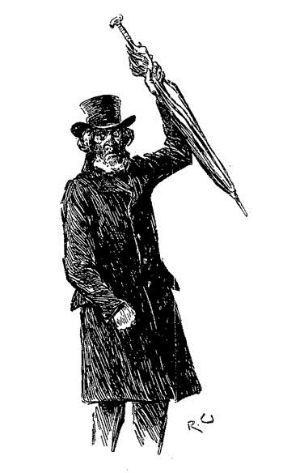
脅すような手つきをしてから、ヤングは元の方へ向き直り、去っていった。砂利だらけの道の上で一歩ずつ、じゃり、じゃりと音がするのが聞こえてくる。
フェリアは肱を膝の上についたまま座っていた。娘にどうして切り出したものかと考えていたとき、柔らかな手がフェリアの手の上に重ねられた。見上げると、ルーシィがかたわらに立っていた。ルーシィが顔を真っ青にしておびえているのを見て、一部始終を聞いていたことがはっきりとわかった。
「わざと聞いていたんじゃないの。大きな声が、家の外まで……ねぇ、父さん、ねぇ、どうしたらいいの？」
「こわがることはない。」と娘を抱き寄せ、ごわごわした大きな手で、慈しむように娘の栗毛をなでた。「二人で何とかして話をつけよう。まだ、あの男が好きだという気持ちはなくなっていないんだろう？」
ルーシィは答える代わりに、すすり泣きながら強く手を握りしめた。
「そうだ、もちろん好きだろう。わしもそうだろうと思っていた。いい男だし、キリスト教徒だ。ここにいる人々よりもずっとキリスト教徒らしい。祈ったり、説教したりしているあいつらよりもずっとだ。ある一団が、明日ネヴァダへ向かう。わしは何とかあの男に、わしらが窮地にいることを伝えてもらうつもりだ。わしが見込んだとおりの男なら、たちまち戻ってくる。電報に負けんくらいの早さでな。」
父の言い方に、ルーシィは泣きながら笑った。
「あの人さえ来れば、何かいい案を思いついてくれる。でも、いちばん心配なのは父さんのことなの。みんな言ってる、預言者に刃向かったりしたら、本当にひどい目に遭うんだって。」
「だが、まだ刃向かったわけじゃない――その万一のときに備える時間はある、まだまるまる一ヶ月もある。それが終わる頃に、ユタを歩いて出るのがいいだろう。」
「ユタを出るって！」
「まあ、そうなるだろう。」
「畑は？」
「お金に換えるだけ換えて、あとは残していこう。実を言うと、ルーシィ、そう考えたのは何もこれが初めてじゃないんだ。わしはどんな男にも屈したくはない、ここのやつらが、あのくそ預言者にひざまづくみたいにはな。わしは自由の身に生まれたアメリカ人だ、何でも受け入れたさ。だが、考えを変えるにはもう年をとりすぎた。あいつがこの農業あたりを歩こうものなら、鹿弾をぶっ放して、反対の方向へ追い返せばいい。」
「でも、そう簡単に……」
「ジェファースンが来るまで待つんだ。そうすれば、すぐに何とかなる。いろいろあると思うが、ルーシィ、落ち着こう。涙も見せるな。そんなお前を見たら、やつが中に入ってこないとも限らん。怖がることは何もない、危ないことなんて何もないんだ。」
ジョン・フェリアは自信たっぷりに慰めたが、ルーシィにはわかった。父親はいつも以上に気を張りつめている。その夜、戸締まりを念入りにやっていたし、さびた古い散弾銃に弾を込めて、寝室の壁に立てかけたのが、いやでも目に入った。
［＃改ページ］
第四章 決死行
モルモンの預言者と話をした次の朝、ジョン・フェリアはソルト・レイク・シティへ下りていって、例の友人を捜し当てた。これからネヴァダ山脈へ向かうというその友人に、ジェファースン・ホープへの言伝を託したのだった。若者へ告げる内容は、今、自分たちが切迫した状況に追い込まれていること、そして彼の帰還が急務であることだった。ことを終えると、フェリアの気はいくぶんか落ち着き、少し心も軽くなって家路についた。
だが自分の農場に着いたとき、門の両側に一匹ずつ馬がつながれていたので、びっくりした。なお驚いたのは、家の中にはいると二人の若い男が応接間にふんぞり返っていたことだ。ひとりは血色の悪い面長の顔をしていて、揺り椅子にもたれかかりながら、足を暖炉の上に載せていた。もうひとりは、むくみのある強面で、首が太く、窓のそばでポケットに両手を突っ込んで、誰でも知っている賛美歌を口笛で吹きながら立っていた。ふたりともフェリアが入ってくると会釈をして、まずは揺り椅子の男の方が話を切り出した。
「あんたはわかんないかもしれないが、そいつはドレッバー長老の息子で、ぼくはジョーゼフ・スタンガスン。あんときの旅の仲間だよ、主が手を差し伸べ、あんたをまことの信徒の中へ導いただろう？」
「主は時が満つるまでにすべての民を望まれるがゆえ、」もうひとりの男が鼻にかかった声で言う。「主はおもむろに臼をひくが、出る粉はいと細かし。」
ジョン・フェリアは冷ややかに一礼した。この客が何者なのかは、だいたいの見当がついていた。
スタンガスンが話を続ける。「ぼくらは、親父たちに言われて、あんたの娘さんの手を請いにきたんだ。ぼくたちのどちらを、あんたや娘さんが選ぶかはわかんないけれど。ぼくにはたった四人しか奥さんはいないし、この兄弟ドレッバーは七人、まあぼくにすれば、こっちが順当だろうって感じかな。」
「待て待て、兄弟スタンガスン。」もうひとりが割って入る。「大事なのは何人妻がいるかじゃなくて、何人持っても大丈夫かだ。おれの親父から近頃、粉挽き場をもらったし、おれの方が金はあるぜ。」
「でも先はぼくの方が有望だね。」スタンガスンは熱っぽく言う。「主が親父を片づけたら、革をなめすところ、作るところどちらも手に入る。それにぼくの方が年上だし、教会での位も高いんだ。」
「どうせ決めるのはその処女だ。」ドレッバー青年は言い返し、鏡に自分を映してにやりとしてみせた。「その決心に一任しようじゃないか。」
そのふたりのやりとりの間、ジョン・フェリアは心のうちに怒りがわき上がり、今しもふたりの客の背中を乗馬鞭で叩かんとする勢いだった。
「いいかお前ら。」と言葉がついに口から飛び出て、ふたりに詰め寄った。「娘が呼んだら来てもいいが、それまでわしにその面を二度と見せてくれるな。」
ふたりの若いモルモン教徒は、あっけにとられてフェリアを見つめた。ふたりにしてみれば、自分たちが娘の手を求めて争うのは、娘にとっても父親にとっても、この上ない栄誉だと思っていたからだ。
「部屋の出口はふたつある。」とフェリアは声を荒げる。「ひとつはその扉、もうひとつはその窓だ。さあ、どちらがいい？」
フェリアの日に焼けた顔は険しくなり、骨張った手が今にも襲いかからんとしていたので、ふたりの客は飛び上がって、あたふたと逃げ帰っていった。老人はふたりを戸口まで追いかけ、
「どちらか決まったら、教えてほしいもんだ！」と皮肉たっぷりに言った。
「いいか天罰が下るぞ！」スタンガスンは怒りで顔を真っ青にしながら、声を張り上げた。「あんたは預言者と四長老会にたてついたんだ、一生後悔させてやるからな。」
「主の御手がお前に重くのしかかる！」とドレッバー青年。「主は立ち、お前を打ちのめしたもうぞ！」
「なら返り討ちにしてやる！」フェリアは怒りのままに叫び、階段を駆け上がって銃を取りに行こうとした。しかしルーシィが父親の腕を掴んでひきとめる。振りほどいたときには、もう馬のひづめの音が聞こえ、ふたりは手の届かないところまで行ってしまっていた。
「信心を気取りおって！」と、額の汗をぬぐいながら言う。「あんなやつらの嫁にさせるくらいなら、ルーシィに死んでもらった方がまだましだ。」
「そうね、父さん。」ルーシィは屈託なく答える。「でも、ジェファースンがすぐ帰ってくる。」
「そうだ、まもなく来る。早いほどいい。次にどう出てくるかわからんからな。」
その通り、事態はもうすでに、この支えとなる人物がこの屈強な農夫とその養女を救いに来なければならない段にまで来ていた。この開拓地の歴史を通じて、これほどにも長老の権威に真っ向からたてついたのは、今までなかったことだ。ささいな誤りさえ厳しく罰せられるというのに、かくもあからさまに刃向かえば、その先にはいったいいかなる運命が待ちかまえているというのか？ フェリアは自分の富や地位が何の役にも立たないとわかっていた。同程度の地位や財を有していた者が姿を消した例もある。その財産は教会に没収された。フェリアは勇敢な男だったが、それでもこの影のようにつきまとう言い知れぬ恐怖には、震えるほかなかった。中身の知れた危険なら、口を結んで立ち向かうこともできる。だが何もわからないだけに心が乱される。娘には恐れを隠し、何の問題もないというふうに装っていた。それでも心配そうに父を見つめる娘には、父が気に病んでいるのが痛いほどわかった。
フェリアは、この行いについてヤングやら何らかの言葉なり戒めなりがあるものと思っていた。果たしてそれは正しかったが、思いも掛けない形でやってきたのだった。翌朝目を覚まして驚いた。小さな四角い紙が一枚、フェリアの胸あたりを覆っているベッドカヴァーの上に針で留められていたのだ。そこには太く乱暴な字でこう記されていた。
「二九日を改心のために与う。しかるのちは――」
その最後に引かれた線が、どんな嚇し文句よりも恐怖を掻き立てる。この警告文がどうして部屋のなかにあるのかが、ジョン・フェリアにはまったく不可解で、使用人たちは離れ家で眠っている上、戸や窓もみんなしっかり締めてあった。フェリアは紙を手にするとくしゃりとつぶし、娘には何も言わなかった。が、この出来事はフェリアを心の底から震え上がらせた。二九日は、ヤングの約束した一ヶ月と確かに計算が合う。このような謎の力で武装した敵に対して、有効な力なり勇気なりはあるのだろうか。その針を留めた手は、フェリアの心臓を貫くこともできた。そうすれば、殺しの下手人さえわからなかったはずなのだ。
あくる朝はさらに衝撃的だった。フェリアと娘が朝の食卓に着いたとき、ルーシィがあっと驚きの声をあげて、天井を指さす。するとその中央に、焦げた木の棒のようなもので無理矢理、〈28〉という数字が組んであったのだ。娘には何のことかさっぱりわからなかったが、フェリアはあえて説明はしなかった。その夜、フェリアは銃を携え、寝ずの番をした。誰も姿も何の物音もなかったのに、翌朝には大きな〈27〉が扉の外側にペンキで描かれていた。
こうして一日また一日が過ぎていった。そして朝が絶対に来るように、見えない敵も必ず記録を付けていった。いつも目立つところに記すのだ、猶予の一ヶ月からどれだけの日が残されているのかを。ある時はその運命の数が壁に現れ、ある時は床に現れた。時に庭の門や柵に小さな貼り紙が突き刺さっていたこともある。ジョン・フェリアは夜通し用心していたが、この警告がどこから出てくるのか、いつもわからずじまいだった。それを見るだけで反射的に恐怖がわき上がるまでになり、やつれて落ち着かなくなって、目には追い込まれた動物の見せる焦燥があった。しかし人生に今ひとつの希望がある。ネヴァダから若いハンターが到着するはずなのだ。
〈20〉が〈15〉になり、〈15〉が〈10〉になったが、待ち人はまだ来ず、便りもなかった。ひとつまたひとつ数字が減っていったが、まだ来る気配すらない。馬に乗った者が道を通ったり、連れを怒鳴る馬方があったりすると、老農夫はそのたび、ついに助けが来たかと門まで急いで出ていく。とうとう〈５〉が〈４〉に道を譲り、また〈３〉となるのを見たとき、彼の心はくじけ、もはや逃げ出せぬと絶望する。自分ひとりでは、この開拓地を囲む山々の知識も限られている上、おのれでは力が足りないという自覚もあった。人通りの多い道は見張りが立てられ警戒されており、長老会の命なくしては誰も通過することができない。どの道を選んだとしても、襲いかかる風を避けられそうにないのだ。しかし老人はけして迷わない。娘を汚すことになるのを受け入れるくらいなら、人生そのものを投げ出したとて構うものかと。
ある午後のこと、ジョン・フェリアは椅子に腰掛け、この悩みについてじっくり考えてみた。そしてはかなくも、ここから逃れ出るすべを探してみた。その朝、家の壁に〈２〉という数が見つかり、翌日には割り当てられた時間の終わりがやってくる。そのあと何が起こるというのか。ありとあらゆる、形にもならぬ恐ろしい空想が、頭のなかをめぐりめぐる。そして娘――自分がいなくなれば、娘には何事がふりかかるのか？ 張り巡らされた見えない網から逃れる手だてはないのか？ 彼は頭を卓に沈め、おのれの無力さに涙した。
あれは何だ？ 静けさのなかに、穏やかに軋む音を聴いた――低いが、夜のしじまにあってはとても際立つ。家の扉の方からする。フェリアは玄関まで這ってゆき、耳を澄ました。少しのあいだ、何もない時が過ぎ、それから低く、辺りをうかがうような音が何度かあった。誰かが扉の羽目板のひとつをとてもゆっくりと叩いているのは明らかだ。深夜の暗殺者が、密約された殺人の命を実行しに来たというのか？ それとも、誰かが猶予最後の日を記しに来たというのか？ ジョン・フェリアは、やるならひと思いに殺してくれ、じわじわと心をいたぶるような真似は勘弁してくれ、と思う。彼は前に飛び上がって、閂を外し、ドアを思い切り開け放した。
外はまったき静寂。見事なまでの闇で、頭上では星々が煌々と輝いている。家の前、農夫の目の先には小さな庭が広がり、奥には柵と門。だがそこにも道にも人影ひとつない。安堵の息をつき、フェリアは右左と確認をする。そしてふと足元にちらりと目を向けたそのとき、何ということだろうか、男が身体を地面につけて伏せていたのだ。腕も足も伸ばしてべったりと。
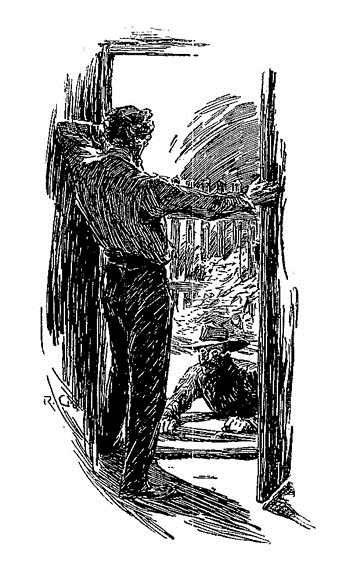
見た途端に緊張もほどけてしまい、そのまま壁に寄りかかり、反射的に大声を出してしまわないよう喉を手で押さえる。まず考えたのは、怪我をしたもしくは死んだ人間が横たわっているのかということだったが、よくよく見れば、その男は地べたで身体をくねらせており、玄関のうちへすばやく、蛇のように音も立てず入ってきた。家内に入ってしまうと、男はぱっと立ち上がり扉を閉め、面食らう農夫へその険しい顔を見せる。この決然たる表情は、ジェファースン・ホープだ。
「おお主よ。」ジョン・フェリアは声を漏らす。「君か、たまげたぞ！ まったくどうしてこんな真似を！」
「食べる物を下さい。」若者は枯れた声で言う。「丸二日、何も口にしていないんです。」と身を冷肉とパンに向ける。フェリアの夜食として卓上に出たままとなっていたものだ。彼はがつがつとむさぼり、「ルーシィは元気ですか？」と飢えが満たされるあと尋ねた。
「ああ。娘は危険を知らない。」娘の父が答える。
「なら好都合です。この家は四方八方見はられています。ですから、這ってくるしかなかったんです。確かに油断ならないかもしれませんが、ワショーの狩人を引っ捕らえるほど凄くはありません。」
ジョン・フェリアは思う。この男は見違えた、今となっては何と心強い味方であろうか。彼はこの若者の革ほどに固い手を取り、いたく心のこもった握手をする。「あっぱれだ。危険や悩みを共にしようとやってくる男など、そうはおるまい。」
「おじさんの方こそ。」若いハンターが答える。「尊敬します。僕ひとりでこのことに立ち向かう羽目になったら、もう。スズメバチの巣に頭を突っ込むとなれば躊躇しますよ。僕はルーシィがいたからここに来られたようなもので、それでもルーシィより先に自分が死んでしなうんじゃないかと思えたくらいで。」
「わしらは何をすればいい？」
「明日が最終日です。今夜動かなければ、おじさんは消される。ラバを一頭、馬を二頭、イーグル峡谷に待たせてあります。お金はいくらあります？」
「金貨で二〇〇〇ドル、あと紙で五〇〇〇ある。」
「行けますね。ぼくもそこにある程度足せます。カーソン・シティへ山越えで突き進まなければなりません。ルーシィを今すぐ起こしてください。使用人が同じ建物で寝てなくてよかったですよ。」
フェリアの席を外し、娘に来たる旅の準備をさせているあいだ、ジェファースン・ホープは目に付く限りの食料を小さな包みに詰め込んで、広口瓶に水を入れた。経験上、山に井戸は少なく、互いの距離もかなり離れている。ほぼ支度が終わった頃、農夫は娘にちゃんと服を着せ、出立の用意をさせて戻ってきた。恋人たちの挨拶は心のこもったものであったが、ごく短く済ませた。わずかな時間が貴重なのだ。やるべきこともたくさんある。
「すぐに発ちます。」ジェファースン・ホープは低い声で言い切る。危険の度合いがわかっているからこそ、それだけ心を鋼にせねばならぬのだ。「入口は前も後ろも見はられています。けれども慎重にやれば、横の窓から抜け出て、畑を横切ることができます。いったん道へ出たら、峡谷まではほんの二マイル。馬を待たせてあります。夜明けまでには山半ばまで行けるはずです。」
「止められたらどうする？」フェリアが尋ねる。
ホープはリヴォルヴァの床尾をぴしゃりと叩く。上着の前にはみ出ている。「手に負えないほど多ければ、二・三人は撃ち取ることになります。」苦々しい顔。
家の明かりはみな消され、暗くなった窓からフェリアが麦畑の方をじっとうかがう。自分のものであるが、今や完全に捨てようとしているもの。だがじっくり考えて決心したのだ、これくらい失ってもいい。娘の名誉と幸せを考えれば、たとえ財産がなくなって後悔しようとも、大したことじゃない。すべてが穏やかで幸せなもののように思える、さらさら風になびく木々も、大きく静かに広がる畑も。だから余計に、このなかに殺人者が潜んでいるなどとはなかなか思えない。しかし若いハンターの白い顔とこわばった表情が、この家に近づくまでに見てきたものを、説得力をもって語りかけてくる。
フェリアは金貨と紙幣の袋を運び、ジェファースン・ホープは不十分な食料と水を持ち、一方ルーシィは自分のそれなりに大事な持ち物がちょっとだけ入った小さな包みを手にする。窓を慎重にゆっくりと開けて、暗い雲が夜を掻きくらすまで待った。そしてひとりずつ庭へと降りていく。息を殺し、背をかがめてそろりそろりと横切って、生け垣にさっと隠れる。そのまま沿って進み、麦畑へと開いた切れ目へと至る。そこへたどり着いた途端、若者はふたりの連れをつかんで、影のなかへ引きずり込む。黙り込んで、身体を震えながらも伏せる。
平原での修練が幸い、ジェファースン・ホープの耳は山猫並みであった。一同がうずくまるが早いか、山梟が憂鬱げにホーホーと鳴くのが聞こえる。ごくごく至近距離で、すぐさままた別のホーホーが応じる。同時に、人影のようなものが作っておいた切れ目から現れ、その合図の鳴き声をもう一度放つ。するとさらにもうひとりの男が闇から出てくる。
「明日の真夜中。」と初めの者が言う。リーダーだろうか。「ホイッパーウィルが三度鳴いたときに。」
「了解。」と別の者が答える。「兄弟ドレッバーに知らせようか？」
「回せ、さらに他の者たちへ、九から七！」
「七から五！」もうひとりも繰り返す。ふたりの姿は別々の方角へすばやく消える。その終わりの言葉は、明らかに何らかの符丁、合い言葉のたぐいだ。足音が遠ざかり消えると、すぐさまジェファースン・ホープは立ち上がり、連れを助けながらも切れ目を抜けて、全速力で畑を横切る道へと導く。彼女が疲れたときには支えながら、半ば負ぶいながら。
「急いで！ 急ぐんです！」と、小声で挟みつつ。「警戒の網をくぐり抜けているさなかにあっては、速さが勝負なのです。急いで！」
本道へ出てしまうと、もはや足早に進むだけ。一度何者かに出くわしたが、畑へ滑り込み、何とかやり過ごした。街に着く手前で、ハンターは山地に続くでこぼこした狭い小道へと折れ曲がる。二本の黒々と屹立する峰が、頭上の闇のなかでおぼろに見えている。この先へと続いている隘路がイーグル峡谷、馬が一同を待ちかまえているはずのところだ。馴れた調子で、ジェファースン・ホープは足元に注意しながら進む。大きな岩のあいだを干上がった川底に沿って歩むと、その奥に岩陰となった場所があり、そこに忠実な動物たちがつながれていた。娘はラバの上に載せられ、フェリア老人は金の袋を持って馬の片方に、そしてジェファースン・ホープはもう片方を険しくも危ない道へと連れて行く。
荒々しい自然と対峙することに馴れていない者には、ひるんでしまうほどの道のりだった。片側には岩山が一〇〇フィートを越える高さでそびえ立ち、黒くいかめしく、こちらを威嚇している。玄武岩の柱がごつごつした岩肌に並ぶ様は、石化した怪物か何かの肋骨のようだ。もう片側には石や岩の破片が散らかり放題といったふうで、立ち入ることもできない。そのあいだにある隘路もまっすぐでなく、ところどころ狭すぎ、インディアンよろしく一列縦隊になるほかなかった。またでこぼこしているため、熟練の乗り手でなければ越えられないほどだ。だがこの危険困難にもかかわらず、逃げる者たちの心はそこへ至ると軽くなった。というのも、自分たちが逃げる恐ろしい支配から、着実に遠ざかっているからだった。
だがすぐに、自分たちがまだ聖徒たちの手の及ぶにいると思い知らされることになる。山道でも最も険しいところへやってきたときのことだ、娘があっと驚きの声をあげ、上を指さす。すると隘路を見渡す、空に向かって黒くそびえる岩の上に、ひとりの歩哨が立っていたのだ。こちらが気づくと同時に向こうもこちらを見て、「そこを通るのは誰だ」と厳しい誰何が静かな峡谷にこだまする。
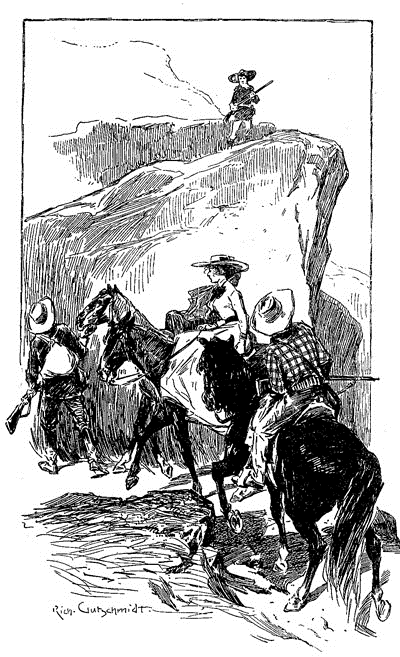
「旅人です。ネヴァダへ。」とジェファースン・ホープは言って、鞍に下げている小銃へ手を掛ける。
見えるのは、銃に指をかけた見張り一名のみ。その返事に納得できないとばかりに、こちらを見下ろしている。
「誰の許しを得た？」と尋ねてくる。
「神聖四長老会。」とフェリアが応じる。モルモンのなかで生きてきたから、今言える最も重い答えがそれだとわかる。
「九から七。」と歩哨が叫ぶ。
「七から五。」とジェファースン・ホープが素早く返す。庭で聞いた言葉を思い出した。
「通れ。主がそなたと共にあらんことを。」上から声が聞こえた。
その見張りを越えると、道が広くなり、馬も駆け足で走らせることができた。振り返ってみると、その見張り一名が銃にもたれかかっている。とうとう、一同は選ばれし民の域外へと抜け出たのだ。そして自由が目前に横たわっていることを実感した。
［＃改ページ］
第五章 誅天使団
一晩のあいだ一行は進み、入り組んだ峡谷を経ては曲がりくねった岩だらけの道を越えゆく。一度ならず迷ったが、ここらの山に詳しいホープが元の道のりに戻してくれる。夜が明けると、荒々しくも美しい胸打つ風景が目の前に広がった。どこを見ても果てには雪をかむった峰で、その先の地平線すら見えないほどにそびえている。一行の両側にある岩盤にしてもかなりの急斜面のため、種々の松の木が頭上を覆うように茂っており、一陣の風が吹くだけで大きくざわめく。ここを恐れたとしても妄想とは言い切れない。この不毛の谷には、あちらこちら頭上から落ちてきたとおぼしき木や岩も転がっている。通る際には大岩が大きな音を建てて落ちてきて、静かな谷あいいっぱいに谺を響かせたため、くたびれた馬も驚いて早駆けになってしまったくらいだ。
太陽がゆっくりと東から昇り、大きな山の頂が次々と明るくなってゆく。祭のかがり火のようで、一面真っ赤に燃えるに至っては、目にしたものの雄大さに逃げる一行の心も癒され、力も湧き上がる。流れの速い谷川で馬を留めて水を飲ませ、自分たちも手早く朝食を摂った。ルーシィとその父親はゆっくり休みたがったが、ジェファースン・ホープは聞き入れなかった。曰く、「そろそろ追っ手も放たれている。すべては自分たちの足にかかっている。カーソンに入りさえすればいくらでもゆっくりしていいんだから。」
日のあるうちはずっと谷越えを頑張ったから、日没には敵から三〇マイルの差があるはずだった。高い岩山のふもとで夜を過ごすことにした。そこなら岩で冷たい風もしのげる上、三人で身を寄せ合えば眠る束の間心地よく暖まれる。だが日の出前には起きてまた先へと急ぐ。ここまで追っ手の影は見えず、ジェファースン・ホープも凶悪な一味の追っ手を巻けたものと思い始めていた。知るよしもなかったのだ、鉄の支配が広く及んでいることを、制裁が電光石火で行われることを。
逃亡二日目の半ばほど、持ち出した乏しい食料も尽き始める。とはいえハンターたるもの少しの不安もない。山中には獲物がいるはずだし、当人もかねてより必要から銃を物を言わせる羽目が幾たびもあった。外から見えぬ物陰を選び、乾いた薪を少しく積み上げ、燃ゆる火を起こして父娘に身体を温めさせる。一行の居場所は海抜五〇〇〇フィート、空気も冷たく刺すようなのだ。馬をつないだ若者は、ルーシィにいとまを告げ、銃を肩に何とか先を切り開こうと踏み出した。振り返った目には、燃ゆる火の向こうで膝を抱える老人と少女、裏には動かずじっとしている三匹の獣。あいだにある岩々が獣の目を遮っていた。
峡谷を次々と数十マイルは回ったが成果はなし。とはいえ樹皮につけられた痕やその他のしるしを見るに、付近にクマが大勢いるようだった。果たして二・三時間探しても実を結ばず、あきらめて引き返そうと思って目を空に向けたとき、見えた光景に若者の胸はぞわっと喜びでいっぱいになる。高い峰のへり、頭上三から四〇〇フィートのところに生き物がいた、見た目はどこか羊に似ているが――一組の巨大な角がある。角の獣――とひとまず呼ぶが――ハンターからは見えない群れの守り役なのだろう。だが幸いにも頭は逆を向いており、まだ若者に気づいていない。うつぶせになり、小銃を岩に構え、しっかりと狙いを定めて引き金を引く。獣は宙に跳ね、崖のへりで一瞬よろめくや真下の谷へどさりと落ちる。
獣は運ぶには手に余るほどの図体があったため、ハンターは仕方なく片脚と脇腹の部分だけを切り取ることにした。手に入れたものを担いで帰る足を速める。もう日暮れに差し掛かっていた。ところが出るなりすぐさま困ったことになったと気づく。夢中のあまり見知らぬ谷まで入り込んでしまっていて、これでは来た道も易々とは見出し得ない。気づけば谷は幾重にも分かれ、どの谷も似通っていて見分けがつかない。そのひとつを一マイルも進むと山の急流へと出たが、どう考えても見た覚えのないところだ。違う道を来たのは明かで、別の道を行ってもみたが結果は同じ。夜はどんどんと近づき、ようやく見覚えある隘路のひとつへ至ったが、もはや真っ暗に近い。こうなっては元の道に戻るのも至難の業だ。月が昇るのもまだで、左右の高い崖が暗さを深めている。荷はじりじりと重く、過労で体力は尽き、歩くのもやっと。何とか気を保てていたのは、一歩ごとにルーシィへと近づいている、食料さえあれば残りの旅もこなせると、何度も反芻すればこそだ。
そして自分が後にしたまさにその出発点へと辿り着く。闇にあっても周囲の絶壁の影かたちからわかる。不安げに待っているはずだ、五時間近くも空けていたのだ、と若者は心弾ませ口を両手で囲い、着いたという合図に大きな山びこを響かせた。声を止めて返事に聞き耳を立てるが、おのれの叫び声のほか返ってくるものはなく、ものわびしい静かな谷あいにこだまするだけ、数え切れない響きが自分の耳へと戻ってくるだけだ。次は先よりも大きく声を張ったが、やはりついさきほど残してきた仲間からはささやき声ひとつも聞こえない。得体の知れない恐怖に襲われて、若者は我を忘れて先を急ぐ、心乱れ大事な食料もうち捨てて。
角を曲がると、野営していたその場所が目の前に現れる。そこでくすぶる炭の山から見て、若者が発ったあと少しも手入れされてないことがわかる。あたりはまったく静かで物音ひとつないままだ。抱いていた恐怖もみな燃えかすとなり次は動揺。火のあと付近には生きているものはいない、獣も男も少女もみな行ってしまった。ただひとつ明らかなのは、自分が不在のあいだ突然の凶事に見舞われたということだ――取り囲まれていたというのに、何らのあとすら残っていない。
いきなりのことで取り乱し、心ここにあらず、ジェファースン・ホープは目もくらみ、倒れないよう小銃を杖にして凭りかかるほかない。とはいえ若者には根っからの行動力がある、一時力を失うも速やかに立ち直る。まだくすぶっている燃えかすから木ぎれをひとつ手にとって、息を吹きかけ火を付け直せば、この狭い野営を調べる役にも立つわけだ。地面はいたるところ馬の足跡だらけ、どうやら追っ手は大規模の騎馬隊、跡の通る方向からすると、そのあとソルト・レイク・シティへと引き返したようだ。ふたりとも連れて行かれたのだろうか？ ジェファースン・ホープがそうに違いないと納得しかけたとき、目に飛び込んできたものに背筋が凍った。野営のわきの小道にこんもりとした赤土、このようなもの前にはなかったはず。間違いない、新しく墓が掘られたのだ。若いハンターが近づくと、そこへ棒きれが挿してあり、裂け目に一枚紙が挟まっていた。紙に書かれた文言は、簡にして要を得たものだ。
ジョン・フェリア
元ソルト・レイク・シティ住民
一八六〇年八月四日没
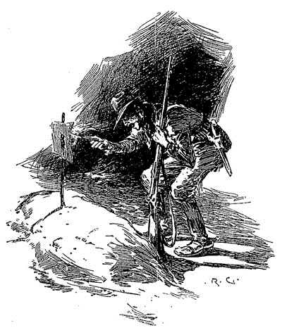
わずか前に別れたばかりのあの不屈の老人は、そのときすでに逝っており、これが彼の墓碑銘なのだった。ジェファースン・ホープは取り乱し、もうひとつ墓がないかとあたりを見回したが、その気配はない。ルーシィは恐るべき追っ手に連れ戻され、元の通り長老の倅のハーレムに組み入れられたのだ。少女の逃れられぬ運命、それを食い止められぬおのれの無力さを悟った若者は、おのれもこの老いた農夫とともに静かに安らかに奥津城に横たわりたいと願う。
とはいえ気を取り戻し、魂の抜けた状態からも立ち上がる。残されたものが他にないとすれば、あとはその人生を復讐に捧げるしかない。どこまで堪え忍び、ジェファースン・ホープは秘めたる仇への恨みを力とする。これは原住民のなかで生きた彼ならではのものかもしれない。ぽつんとした火のそばで立ち尽くしながら、その悲しみを和らげるのはただひとつ、完膚無きまでの鉄槌をおのれの手で仇に下すことのみ。決めたのだ、その強い意志とみなぎる力をみなこの目的へと向けると。白い顔をこわばらせ、食料を落とした地点へと引き返し、それからくすぶる火をかき回して数日分だけ調理する。それを包みにくるみ、へとへとながらも必死で来た山を歩いて戻る。誅天使団のあとを追って。
まる五日、痛む足を動かし、馬で越えてきた隘路を縫って進む。夜には岩陰に身を投げ出し、一・二時間の仮眠だけ。そして夜明け前にはいつも出発する。六日目にイーグル峡谷、自分たちが失敗に終わらせた逃亡の出発点へと辿り着く。そこからは聖徒らの安息地が見下ろせた。身も心もぼろぼろの彼は、小銃を支えにして目下静かに広がる街めがけ荒っぽくその痩せこけた手を振る。向けた目に入ってくるのは、大通りのあちらこちらに立つ旗、祝い事のしるしだ。いったいどういうことかと思案しているまに、ふと聞こえてくる蹄の音。こちらへ近づく馬とその乗り主が見えた。距離が縮まると相手がクーパーという名のモルモン教徒、折々手助けしたこともある男とわかった。そこで若者は寄って声を掛ける。ルーシィ・フェリアのその後がどうなったのか知るのが目当てだ。
「ジェファースン・ホープだ、ぼくだよ。」
その声に相手のモルモン教徒は驚きを隠せずに若者を見る――当然だ、ぼさぼさの髪、ぼろを着た浮浪者、顔は死んだように蒼白で目がぎらついているときたら、かつての洒落た若いハンターとは容易くはわからない。とはいえひとたび彼と得心すれば男の驚きも戸惑いへと変わる。
「ここに来るなんて、お前狂ったか。」と声を張った。「お前と話しているのを見られたらおれの命もない。お前は神聖四長老会からフェリア
「知ったことか、あんなやつらも、手配も。」と凄みを利かせるホープ。「これが何事か知らなきゃいけない。クーパー、折り入って頼みがある、今からいくつか質問に答えてくれ。ずっと仲間だったろ。この通りだ、邪険にしないでくれ。」
「何だ。」とモルモン教徒は戸惑いながら尋ねる。「手短にしろよ。岩に耳あり、樹木に目ありだ。」
「ルーシィ・フェリアはどうなった？」
「昨日ドレッバーの野郎と結婚した。終わり、終わりだ。おちおちしてるとお前命がないぜ。」
「気にするな。」と力なくホープは言う。唇まで青くして、凭れていた石の下にへたり込んだ。「結婚、だって？」
「式は昨日――つまりあの献堂館の旗はそういうことだ。ドレッバーの若造とスタンガスンの野郎のあいだで、女をどっちのモノにするか話し合いがあってな。ふたりとも人を引き連れて出てって、それからスタンガスンが女の親父を撃った。だからやつにはもっともな理があったようだが、評議会での徹底討議ではドレッバーの連中が優位でな、そこで預言者は女をやつに引き渡したわけだ。まあどっちにせよ長くモノにはできないね、だって昨日その顔に死相が見えたからな。ありゃ女というより抜け殻みたいだったよ。おい、もう行くのか？」
「ああ、行くよ。」とジェファースン・ホープは腰を上げる。その顔はまるで大理石の彫像よろしく表情が硬くこわばっていたが、それでいて瞳は禍々しい光に燃えていた。
「行く当てはあるのか？」
「心配ない。」と答え、肩から銃器を吊して谷の方へ大股で歩いていき、野獣どもの巣窟たる山脈のさなかへと消えてゆく。そのなかで彼ほど獰猛で危険なものはない。
モルモンの予言は残念ながらその通りとなった。義父の非業の死のせいか、忌まわしい強制結婚のせいか、もはやルーシィはうつむいたままで、嘆き暮らすひと月のまにみるみる痩せ衰えていった。酒好きの夫がこの女と結婚したのも、もっぱらジョン・フェリアの財産目当て、死に別れても悲しむ素振りさえしなかった。他の妻らは女を悼み通夜も付き添ったが、モルモンの習いに従っただけのこと。朝早い時間に棺を集団で囲んでいたときだった、その恐れ驚きは言い表しようもないが、扉がばんと開け放たれ、獣と見紛うばかりの日焼けた男がぼろをまとって部屋へ上がり込んだのだ。縮こまる女どもには一顧だにせず、無言のまま返事のない白い
数ヶ月のあいだジェファースン・ホープは山々をさまよった。まったく獣じみた暮らしで、宿した獰猛な復讐心を心のなかで育んだ。街の噂では、郊外あたりをうろつく不審者がいるとのことで、人里離れた谷にも出るという。あるときなど一発の銃弾がスタンガスンの居宅の窓に撃ち込まれ、本人から一フィートとないところの壁にめり込んだ。また別のときには崖下を通るドレッバーめがけ大きな岩が上から落ちてきたが、何とか顔をかすめただけで死なずに済んだ。やがてモルモンの若者ふたりにも、命狙われるわけに見当がつく。そして敵を捕らえるなり殺すなりしようと山狩りを繰り返すに至ったが、いつも不首尾に終わった。そののち用心して夜間やひとりでの外出を控え、館に護衛を立てることにした。しばらくしてその対策もゆるめることができたが、それも敵の音沙汰がさっぱりなくなり、時がその復讐心を鎮めたかに思えたからだ。
実は、それどころかさらに燃えていた。ハンターの意思は固くたゆまぬもので、頭はもはや仇討ちだけにとらわれ、他の感情の入り込む余地はなかった。悟ったのだ、たとえ
せいぜい一年の間を置くだけのつもりだったが、不測の事態が重なって五年近くも鉱山を出られなかった。長く空いたとはいえ、過ちの記憶と復讐への渇望は、やはりジョン・フェリアの墓前で立ち尽くしたあの忘れ得ぬ夜からまったく変わりない。変装し、偽名を使ってソルト・レイク・シティへ戻り、おのれの命も省みず、ただおのれの知る正義をなす一心だった。だがこの選民らは数ヶ月前に分裂しており、教会の若い衆が長老の権威に反発して、その結果相当数の不平分子が抜け出て、ユタを離れ異教徒となっていた。そのなかにドレッバーとスタンガスンもいたのだ。しかも誰ひとりその消息を知らない。風の噂では、ドレッバーは財産の大半を何とか金に換えて大金持ちとして出発したが、それに比べて道連れのスタンガスンは金がなかったとか。ところがその行方については手がかりひとつない。
仇狙う心いかに強くとも、このような困難にぶち当たっては復讐の心も折れる者がほとんどだが、ジェファースン・ホープはちっともひるまない。先立つものはあったが、足りないところはその場その場で働きつつ、敵を探して合衆国を街から街へ旅していった。年月が過ぎ、黒い髪にも白髪が交じるも、それでもこの人の形をした猟犬は、生涯を賭けただひとつの目的に心を砕いて歩んでいく。その忍耐もついに報われる。窓に顔がひと目見えたのだ。それだけでもよかった、オハイオ州クリーヴランドに求める男どもがいるとわかればと、早速みじめな下宿へと戻って復讐計画を周到に進める。ところがたまたまドレッバーも窓に目をやっていて、道ばたの放浪者に気づき、相手の瞳に殺意を読み取っていた。あわてた彼は個人秘書となっていたスタンガスンをつれて治安判事の前へ行き、昔の恋敵に嫉妬・逆恨みで命を狙われていると申し立てる。その晩ジェファースン・ホープは引っ立てられ、身元引受人も見つからないまま数週間勾留された。やっと解放されたときには、ドレッバーの居宅ももぬけの殻、気づいたときには秘書ともども欧州へ出発していた。
また仇に巻かれたが、憎しみはいっそう募り、追うその足も止まらない。だが資金も尽きたため、追跡の旅のために節約しつつまたしばらく働くことに。何とかやっていけるだけ集めてようやく欧州に出ると、卑しい仕事に励みながら都市から都市へ仇のあとを追った。ところが逃げる相手に追いつけない。サンクト・ペテルブルグに着いたと思えば、相手はパリへ発ったあと。そこへ追いかければ、すんでのところで相手はコペンハーゲンへと出たばかり。そのデンマークの首都でも数週遅れで、相手はロンドンに旅立ったあと。しかしついにその地点で狐を穴へと追い込むことに成功。そこでの出来事については、このハンターの供述よりも、すでに世話になっているワトソン博士の日誌、正しく記されたものを引くのが順当だろう。
［＃改ページ］
第六章 医学博士ジョン・ワトソンの回顧録（続き）
捕らえられた男はすさまじい抵抗を見せたが、別段我々に敵意を抱いているわけではないらしく、詮無いと悟ると愛想よく微笑み、今の争いで怪我はなかったかとこちらを気遣ってまでくれた。「本署の方へ連れて行くんでしょう？」と訊かれたのはシャーロック・ホームズだ。「うちの馬車が戸口に。脚を解いて下されば、自分でそこまで下りて行きます。担がれるにしても昔ほど軽くはありませんので。」
グレグソンとレストレードは互いに見合う。どうやら今の提案を差し出がましいと考えたようだが、ホームズは捕まった男の発言をただちに信じ、足首を縛っていた布巾を緩める。立ち上がって脚を伸ばす男は、脚が再び自由になったことを噛みしめるようで。このときの私は、男をじっと見やりつつひとりこう思っていた。ここまで頑丈そうな男はそういない、それに日に焼けた色黒の顔は覚悟を決めた風で、膂力だけではない恐るべき力に漲っている。
「警察の長が空席なら、ふさわしいのはあなたのような人でしょうね。」と、わが同居人を見つめながら男は手放しで褒める。「私を突き止めたのは、実に見事でした。」
「僕も同行しよう。」と刑事ふたりに告げるホームズ。
「運転はあたしが。」とレストレード。
「うむ！ ではグレグソンは僕と車内へ。君もだ、
私は是非もないと喜んで、全員でともに階下へ。捕まった男は逃げる素振りさえなく、自分の元業務用馬車まで踏みしめるように進み、我々もあとからついていく。レストレードが御者台に上がり馬に鞭打つと、あっという間に目的地だ。一同は小部屋のなかへ通され、主任の警部が捕らえた男の名と、犯した殺人の被害者らの名を書き留める。青白い顔の係官は淡々とした表情でただ機械的に職務を果たしていった。「被疑者は今週中に判事の前へ出廷となります。ジェファースン・ホープさん、それまでに言っておきたいことはありますか。ただし言っておきますが、あなたの証言はすべて書き留められ、あなたに不利な証拠となるおそれがあります。」
「言うべきことはたくさんある。」と捕まった男はゆっくり口を開く。「皆様に洗いざらいお話ししたい。」
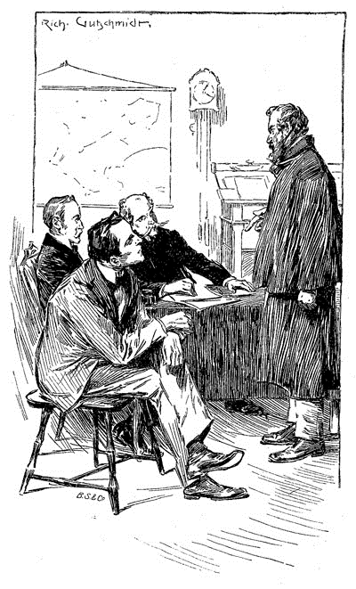
「審理の際まで伏せておいた方が賢明では？」と問い返す主任。
「おそらく裁判は間に合いません。」と答える男。「驚かれるには当たりません。自殺を考えているのでもなく。あなたはお医者様ですね。」男はぎろりと黒目を私に向けて、今の質問を発したのだ。
「いかにも。」と応じる私。
「ではここへ手をお当てに。」と微笑みながら手錠のはめられた手首を胸に当てて促す。
言われた通りにして私はすぐにはっとした。胸の内にあるのはまさしく心室細動。がたつく胸壁の震え方はまるで、安普請のなかで強力な発動機を回しているかのよう。静まりかえった室内、まさにそこから鈍くうなり出てくる雑音が聞こえたような、そんな気が私はした。
「何と。」と私は声を張る。「君、大動脈瘤じゃないか！」
「そういう病名だとか。」と話しぶりは落ち着いている。「先週その件でお医者様に伺うと、お話ではもう数日しないうちに間違いなく破裂すると。年々悪くなる一方でした。ソルト・レイク山地で陽に曝されすぎたことと栄養不足とがあだとなりました。やるべきことはもう果たしましたし、今すぐ死のうとも構いません。事の次第をそれなりに後に残しておければと。十人並みの殺人鬼として記憶されるのは本意ではありません。」
主任とふたりの刑事は慌てて話し合う。身の上話をこの場でさせてよいものかと。
「ご所見は、
「まず間違いなく。」と答える私。
「そうとなれば、正義に資するためここで本人の供述を採ることこそわたくしどもの務め。」と主任。「君、好きなように申し開きしなさい。繰り返し言っておくが、述べたことは記録される。」
「失敬、座ります。」と捕まった男は言うと同時に身を動かす。「この動脈瘤のせいで体力がないもので、それに半時間前の取っ組み合いが身体に障ったようで。墓は間近、皆様に嘘つく気はございません。口にする言葉はすべてまったくの真実、それをどう使われようが私には取るに足らないこと。」
こう言いながらジェファースン・ホープは椅子にもたれかかり、これより先の驚くべき供述を始めたのだった。口ぶりは平然として淀みがないので、あたかも語られた出来事はごくありふれたことであるかのよう。ここに付記された内容の正しさは私が請け合う。話された内容を一言一句書き留めたというレストレードの手帳から直に確かめてある。
「皆様にはどうでもいいですよね、私があいつらを恨んでいる理由など。」と男は切り出す。「ですので、やつらには罪がある、ふたりの人間――ある父と娘――の死について、とだけ。ゆえに、やつらは罰としてその命を失ったのです。罪が犯されてからこれだけ時が過ぎ流れてしまっては、司法でやつらを有罪判決にできるわけがない。とはいえ私はやつらの罪のことを知っている、ならばと覚悟したのです。自分が判事に陪審に死刑執行人、すべての役をひとりで務めるのが定めだと。あなた方も同じ事をしたでしょう、人としての情があるなら、私の立場であったなら。
先ほど触れた娘とは、二〇年前私と結婚していたはずの少女のこと。しかしあのドレッバーめと強制的に契らされ、そのため廃人になってしまいました。私は死んだ彼女の指から結婚指輪を抜き取り、誓ったのです。死に行くやつの目にこの指輪を見せつけて、死ぬ間際の意識をその罰の元となった罪のことでいっぱいにさせてやると。指輪を肌身離さず、やつとその共犯者を二大陸にわたって追いかけ、ついに捕まえました。やつらは私をへばらせるつもりでしたがそんなの無駄です。もしも私が明日死んでも、ありえることではありますが、この世での務めが、そう、きっちり果たされたと知った上で死ぬのです。やつらは
やつらは持つ者、私は持たざる者、ですから追うのは容易いことではありません。ロンドンに着いた際の私の懐はほぼ空で、生きるためとにかく何かせねばと思いました。馬を乗りこなすのはお手のものでしたので、辻馬車の運営事務所に自分を売り込むと、すぐ採用に。元締めに週一定額の上がりを納める決まりで、それを越える分はいくらでも自分の取り分。越えることなんて滅多にありませんが、何とかいくらかはかき集められて。いちばんの厄介は道を覚えることでした。私からすれば、この都のややこしさは断トツで、今まで設計されたどんな迷宮も目じゃない。もっとも地図をかたわらに、めぼしいホテルや駅を目印にさえできれば、だいたいはうまく行きました。
狙う紳士ふたりの居所が知れるまでしばらくかかりました。しかし尋ねに尋ね、とうとうばったりやつらと出くわしたのです。やつらは川向こうキャンバウェルの賄い付き下宿屋におりました。いったん見つかればあとはこっちの手のひらにあるようなもの。鬚を生やしてましたから、私と気づくはずもありません。延々後をつけ回して機会をうかがえばいいのです。もはやどうあっても逃さぬぞと決意を新たにしました。
やつらにまんまとまたそれをされるところでしたよ。ロンドン周辺ならどこでもぴったり後ろに。時には自分の馬車で追い、時には徒歩で、前者が最善でした。そうすれば向こうは逃げようがないでしょう？ ただ早朝と深夜だけでは稼げませんから、上がりの支払いが滞り出します。それでも狙う男どもを手に掛けるまではと我慢しました。
ところが、やつらとて頭が回ります。追いつかれる可能性を想定していたに違いなく、単独行動を避け、日没後にも外出しません。二週間のあいだ毎日馬車で付け狙いましたが、目の前で離ればなれになることはまずありません。ドレッバーといえばほとんどいつも酔っ払っていましたが、スタンガスンは一時も気を緩めることがなく。四六時中見張りましたがわずかな隙も見えないのです。しかし私はくじけません。何となくそのときがもうすぐ来るような予感がしていたのです。ただひとつ怖いのが、胸のこいつが思ったより早く破裂して、志半ばになることでした。
果たしてある夜、トーキィ・テラス――やつらの下宿付近の通り名なのですが――そこら界隈で回していると、ちょうど下宿の戸口につく辻馬車を目にしました。たちまち荷物が運び出されて、しばらくしてドレッバーとスタンガスンがあとに続き、車が走り去ります。私は馬に鞭打って、やつらを見失わないようにしつつ、ひやひやしっぱなしでした。居所を変えるのではと気がかりで。ユーストン駅にやつらが着いたので、私は馬抑えに少年をつけて停車場の上までつけていきました。耳に聞こえたのは、リヴァプール行き列車を尋ねるやつらの声。それから車掌の今出たばかりで数時間は列車がないという返事。スタンガスンはそれに慌てている様子でしたが、ドレッバーはむしろ喜んでいるようで。雑踏のなか近づいてみるとふたりのひそひそ話を漏らさず聞くことができました。ドレッバーはちょっと野暮用があるとのことで、待っててくれ、あとで落ち合おうと。連れは相手を諫めて、単独行動を取らないとふたりで決めたことを念押しします。ドレッバーの答えは、事は微妙、ひとりで行くしかない、と。それに対するスタンガスンの返事は聞き取れなかったのですが、相手はみだりに罰当たりなことを言い出して、雇われ秘書に過ぎない、指図できる立場にないことを連れに思い知らせました。そう言われては秘書もやってられるかと匙を投げ、終電を逃したらハリデイ・プライヴェート・ホテルで合流という取り付けだけをしました。そこでドレッバーは一一時前に停車場へ戻るとだけ言い残し、駅から出て行きます。
長く待ち望んでいたそのときがついにやってきた。わが仇は今や手中にある。ふたり揃っていれば互いに守り合えるが、ひとりひとりとなれば思うがまま。とはいえ軽はずみには動きません。計画を練ってありました。罪を犯したやつらに、自分を襲ったのは誰か、そして天罰の下った理由を悟らせる時間があって初めて、復讐が叶うのです。
つまり練り上げた計画には段取りがありまして、私をいたぶった男どもに、その因果応報を自覚させるのです。たまたま数日前、ブリクストン通りの空き家をあちこち下見物していた紳士が、私の馬車にうち一件の鍵を落としていきました。その日の夕べに申告があって返却されたのですが、そのあいだに私は型どりをして合い鍵をこしらえておきました。こいつのおかげでこの大都市で少なくとも一ヵ所、邪魔者の入らない当てが手に入るわけで、あとはうまくドレッバーをその家屋へ連れ込むことさえできれば、万事解決です。
やつは通りをふらふらすると、酒場を数軒はしごして、最後のには半時間ほど居座りました。外へ出ると千鳥足、どう見てもへべれけで。ちょうど私の手前にハンソムがあったので、やつはそれを呼び止めまして。道中ずっと離れず、こっちの鼻先は常に向こうの御者から一ヤード以内。私たちはがたごととウォータルー橋を越え、街を何マイルも走り抜け、果てにはなんとびっくり、気づけばやつのかつての下宿先の門前に逆戻り。私にはどういうつもりでそこへ引き返したのか見当もつきません。ひとまず追い越してその家から一〇〇ヤードくらいのところに車を止めました。やつがなかに入るとハンソムは走り去ります。水を一杯、くださいませんか。しゃべっているうちに口が渇きまして。」
私がグラスを手渡すと、男は飲み干した。
「これで大丈夫です。」と男。「で、私は一五分、いやもっとか、待っているといきなり室内から人の争うような物音が聞こえてきまして。次の瞬間、戸がばんと開け放たれ、ふたりの男の姿が。ひとりはドレッバーで、相手は見たこともない若造でした。男はドレッバーの襟首につかみかかり、敷地の際まで来ると、突き倒し蹴飛ばして、やつを道へ半ば追い出す格好です。『この犬め！』と持っていた棒をやつに振り回して。『これが乙女の操を汚そうとした報いだ！』気持ち昂ぶるあまり、その若造はドレッバーを棒で殴りかからんばかり、ろくでなしは力を振り絞って脚を動かし、ただ道をふらふら前へ。角のところまで走ってきて、そこで私の馬車を認めて呼びつけ乗り込みました。『ハリデイ・プライヴェート・ホテルだ。』
まんまと馬車のうちにとっつかまえて、そのとき私の胸は喜びに弾むあまり動脈瘤がひどいことにならないかとひやひやものでした。ゆっくりと馬車を転がしながら、何をするのが最善かあれこれ考えました。そのまま郊外に連れ出して、どこかひとけのないところで〆のやりとりをするか。ほとんどそれに決めかけていたところへ、やつ自ら問題を解決してくれたのです。またぞろ飲みたくなってきたのか、安酒場の表で止めてくれと言いつけられまして。そこで閉店時間まで粘ったやつは、出てくる頃にはもう前後がわかりません。そうです、獲物はこちらのなすがままです。
血も涙もなく殺すつもりだったなんて、とんだ誤解です。やったとしてもそれはただ厳正なる正義だったでしょうが、私はそんなことする気にはなれません。ずっと決めていたのです、やつに命がけの運試しをさせてやると。やってみるかは本人の希望次第ですが。日々渡り歩きながらアメリカのあちこちで世話になってきましたが、ヨーク校の研究室で雑用兼掃除係をしていたことがありました。ある日、毒物の講義をしていた教授が、生徒にアルカロイドとか言うものを示しまして。南アメリカの矢毒から抽出したもので、強力すぎるあまりごく微量でも即死するとか。この調剤を保存してある瓶を何とか見つけ出し、人の出払った際にほんの少し失敬しました。私自身いっぱしの薬剤師でしたから、そのアルカロイドに手を加え、水に溶ける小粒の錠剤にして、その一錠を、毒なしで作った同じ見た目のもの一錠と一緒に箱へ収めました。そのときに決めたのです、その機会が来たら、それぞれに箱から一錠取り出させて、残った方を私が頂く。そうすればハンカチでくるんで銃を撃つよりもはるか静かに人が死ぬわけですよ。その日以来、私はその錠剤の箱を常に持ち運び、そしてついにそいつを使うべき時がやってきたのです。
それは一二時よりも一時に近く、土砂降りの凍てつく夜、風は強く雨は滝のよう。外は陰鬱ですが私の内は晴れやか――それだけに純粋な喜びから雄叫びを上げそうなほど。もし皆様方のどなたかが何かにずっと焦がれており、二〇年の長きにわたって望んでいたとして、いきなりそれが手の届くところに現れたら、私の気持ちもわかってくださいましょう。私は葉巻に火を付け、気を落ち着かせるために吹かしましたが、手は震え、緊張するこめかみはずきずき。馬車を転がすなか目に映るのは、ジョン・フェリアさんといとしのルーシィ、闇のなかから私を見つめ微笑みかけるその姿は、この部屋に皆さんを見るのと同じくらいはっきりでした。道中ずっとふたりが私の前方左右に立ってくれていて、ついにブリクストン通りの家屋のところで車を止めます。
あたりにひとけは一切なく、物音もなくひっそり、あると言えば雨音だけ。窓からなかをのぞき込むと、なんと酔いつぶれたドレッバーは身体を丸めて眠っていて。私は腕を揺すぶって『車、着きましたよ』と言います。
『おう、運ちゃん。』とやつ。
どうもやつは指示したとおりのホテルへ着いたと思ったようで。そのまま一言もなく車を降りて、私について敷地のなかへ。ふらふらしないよう私が脇から支えなくてはなりません、やつは昔と変わらず頭がちの小男でしたから。辿り着いた先の戸を開けて、入ってすぐの部屋へ連れ込みました。誓って言いますが、そのあいだずっとあの父娘が私たちの先を歩いていたのです。
『忌々しいほど暗えな。』やつの体重で軋む床。
『すぐに明かりが点く。』と私はマッチを擦って、持ち歩いていた蝋燭に火を付ける。『さてイーノック・ドレッバー。』と向き直って言葉を継ぎ、自分の顔の前に明かりを持ってくる。『オレは誰だ？』
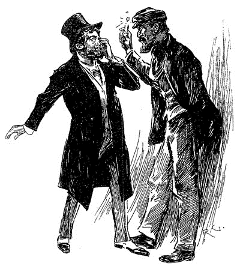
酔いでしょぼしょぼした両の目でふいにこちらを捉えるや、やつの顔にさっと恐怖の色。その引きつった顔面から私のことに気づいたと知れました。青ざめた顔でよろよろと後ずさり、やつの額に汗が噴き出すのがわかりまして、始終歯をがたがた震わせます。その有様に私は扉へもたれかかり、長々と高笑いをしました。仇討ちは気持ちいいものだとわかっていたつもりでしたが、これほど魂に安らぎが充ち満ちるとは今まで思ってもみなかったのです。
『この犬め！』と私。『ソルト・レイク・シティからサンクト・ペテルブルクまで追いかけたが、いつも逃げおおせたな。今ついに、お前のさすらいの旅は終わりを迎える。なぜなら、お前か私か、どちらかは明日の日の出を見ないが定め。』私の話す間もやつはさらにずるずる後じさる、それにやつの顔を見る限り、私がおかしくなったと思ったようで。確かにあのときの私はそうでした。こめかみは杭打ちのごとくがんがん脈打ってましたから、鼻血が垂れて我を取り戻してなくば、ある種の発作が起こっていたことでしょう。
『今、ルーシィ・フェリアのことをどう思っている。』と扉に鍵を掛けながら声を荒げ、やつの面前でその鍵を振り回して。『罰の歩みは遅々としていたが、ついにお前に追いついたわけだ。』目の前の腰抜けは話すあいだ唇を震わしていて。普通なら命乞いするところだが、無駄だと言うことはよおくやつにもわかっていて。
『お、おれを殺すのか。』とやつは口ごもります。
『これは殺しじゃない。』と私は答えます。『狂犬をただ駆除して何になる？ 私の可哀相な想い人に何の慰みをかけた、お前がなぶり殺しにした父から娘を引き離したとき、乙女をお前の呪わしい恥知らずの後宮へ連れ去ったときに！』
『おれじゃねえ、親父の方を殺したのは。』とやつは叫ぶ。
『だがお前だろ、あの子の罪なき心を砕いたのは。』声を上ずらせながら、私は箱をやつの前へと差し出します。『天の主にふたりだけで裁きを委ねよう。選んで口に含むんだ。片方に死、もう片方には生がある。私はお前が残した方を取る。さあ確かめよう、この世に正義があるのか、それともすべては運次第なのか。』
やつは怖じ気づいてひたすらに泣き叫び許しを請いましたが、私はナイフを抜き、やつの喉元に突きつけてとうとう言うとおりにさせました。そのあと私ももう片方を飲み込み、向かい合ったふたりはじっと突っ立ったまま数分、どちらが生きどちらが死ぬのか見極めようとしました。忘れもしない、やつの顔に現れた形相、発作の始まったことで全身に毒が回ったと気づいたときのやつといったら！ 大笑いしながら眺めつつ、やつの目の前にルーシィの結婚指輪を突きつけました。ただしそれもつかの間のこと。アルカロイドには即効性がありますから。痛みとひきつけのために表情がゆがみ、やつは手を前へ突きだしながらよろよろ、そのまま悲鳴をかすらせながら、どすんと床に倒れました。やつを足で裏返し、私は手をやつの胸に当てます。動いていません。やつは死んだのです！
血が鼻からこぼれ落ちていたことに、私はそのとき初めて気づきました。どうして思い浮かんだのか、そいつで壁に字を書いてやろうと。ひょっとすると茶目っ気で捜査攪乱しようとしたのかも。私の心はうきうきと愉快でしたから。そういえば、ニューヨークで見つかったドイツ人の上にはＲＡＣＨＥと書き付けてあって、当時新聞各紙でも秘密結社の犯行かと取り沙汰されたなと。ニューヨークっ子を悩ませたものはロンドンっ子も悩ませるだろうということで、私は指を自分の血に浸し、壁のよさそうな所にそれを記しました。それから自分の馬車まで歩いていき、見るとあたりには誰もおらず、夜はいまだ荒れ模様。少し先へ転がしたところで、いつもルーシィの指輪を入れていた懐に手を突っ込むと、なんとそこにありません。これが私には衝撃で、持っていたただひとつのあの子の形見でしたから。たぶんドレッバーの死体へ屈んだとき落としたのだと。引き返し、脇道に馬車を置いて、思い切って現場へ――指輪をなくすくらいなら、何でもする覚悟でした。しかし着いてみるとそこは、来合わせたお巡りたちが抑えていたので、知らず突っ込んだ私は、手の負えない酔っぱらいのふりをして疑われないようにするので精一杯でした。
ここまでが、イーノック・ドレッバーの死の顛末です。あとはスタンガスンに同じことをするだけで、ジョン・フェリアへの借りはすべて返せるのです。やつの宿泊先がハリデイ・プライヴェート・ホテルなのはわかってましたから、一日じゅう待ち伏せしたのですが、やつは一向出てきません。おそらくドレッバーが姿を現さなかったので何かあったと勘ぐったのでしょう。やつは切れ者、それがスタンガスン、いつも用心深い男でした。引きこもって私を寄せ付けないつもりなら大間違いですよ。すぐに部屋の窓の位置を確認して、翌朝早く、ホテルの裏通りに立てかけてあった梯子を使って薄明かりのなか、やつの部屋に乗り込みました。やつを起こし、大昔に奪った命の報いを受ける時が来たのだと教えてやります。ドレッバーの最期を語り聞かせ、同じように毒の錠剤を選べと迫りました。差し伸べられた救いの機会をつかむ代わりに、やつは寝台から立ち上がり私の喉笛に飛びかかりました。自分を守るため、私はやつの胸を突き刺します。どのみち同じことじゃないですか。主の御心はやつの汚れた手に毒の方しか取らせなかったはずですから。
あとはもう言うほどのことでもありません。やることはやりました、そのまま馬車を数日転がして、アメリカへ帰るだけの金が貯まるまでこつこつ続けるつもりでした。車置き場でぼーっとしていると、ぼろを着た少年がジェファースン・ホープという運ちゃんはいるかと訪ねてきて、ベイカー街二二一Ｂの紳士が馬車をご指名だと言うのです。罠と怪しむこともなく伺うと、気づいたときにはここの若者が私の手首に輪っぱをかけ、見たこともない早業でつかまったわけです。これで私の話はおしまいです、みなさん。人殺しと思われるかもしれませんが、私はあなた方と同じく正義のしもべだと信じております。」
この男の物語は痛切で、語り口も胸迫るものであったため、我々は物も言わずじっと聞き入っていた。犯罪の子細などには慣れっこであるはずの刑事探偵ですら、この男の話には深く感じ入るものがあったらしい。語りが終わると、我々はしばらく黙って動かずにいたが、ふいにレストレードが鉛筆をかりかりと走らせ、その速記録に仕上げの一筆を施す。
「ただ一点、些細なことのご教示を。」とついにシャーロック・ホームズが口を開く。「何者ですか、広告を受けて指輪を取りに来たあの共犯者は。」
捕まった男は、わが友人へ茶目っ気たっぷりに目配せをし、「自分の秘密なら話せますが。」と言うのだ。「他人は巻き込めません。あの広告を見て、これは罠か、それとも本物かと私は悩みました。友人が見てきてやると自分から申し出てくれて。たぶん抜け目なくやってくれたものと、そうでしょう？」
「異議なしです。」とホームズの心からの声。
「さてみなさん。」と主任の厳粛な言葉。「法手続きのまとめに入ります。木曜、この者は下級判事の前へ連れて行かれますが、あなたがたもご出廷求められるでしょう。そのときまでわたくしが彼を責任もって預かります。」その発言とともに呼び鈴が鳴らされ、ジェファースン・ホープは二名の刑務官によって連れ出された。かたや同居人と私は署を辞し、辻馬車を拾ってベイカー街へと戻ったのであった。
［＃改ページ］
第七章 結末
我々は揃って木曜に下級判事の前へ出るよう知らされていたが、結局木曜が来ても証言することはなかった。事は天上の判事が引き受けることとなり、ジェファースン・ホープは裁きの場へと召し出され、そこで厳正なる正義が男へと割り当てられたのだ。逮捕されたその日の夜、動脈瘤が破裂し、明くる朝、男は独房の床にのびているのを発見された。顔には穏やかな笑みを浮かべており、死に際して悔いのない人生と果たした使命のことを振り返ることができたかのようだ。
「グレグソンとレストレードはこの死に大わらわだろう。」とは、その夜ふたりでくつろいでいるときのホームズの言葉だ。「彼らの大々的発表は今やどこへやらだ。」
「捕り物には大して関わってないふたりなのにか。」と、それを受ける私。
「この世では、実際の行為など取るに足らぬもの。」とわが同居人の手厳しいお答え。「要は、何を自分の手柄だと人に信じさせられるかだ！ まあ……」と間を入れてから楽しそうに続ける。「いずれにせよ僕は捜査できればそれでいい。知る限りで最高の事件だった。単純でありながら、実に得るところが複数あった。」
「単純とな！」と私の口をついて出る。
「ああそうとも、他に表現のしようがない。」とシャーロック・ホームズは驚く私に微笑んでみせる。「元より単純だった根拠に、ごく普通の演繹数回のほか何にも頼らず、僕は三日以内に犯人を捕まえてみせたろう？」
「それは確かに。」と私。
「すでに説明したが、普通から外れたものこそ、妨げ以前にまず道しるべとなる。この種の問題を解く際、大事なのは過去へ遡る推理ができることだ。これはコツのようなもので簡単なのだが、うまく使う者がまずもっていない。現世の日々細々したことでは、未来を先読む推理がそれ以上に役立つため、さきほどのものは自然疎かにされるわけだ。総合推理のできる者が五〇いれば、分析推理のできるものはひとりいるだけ。」
「正直、」と私。「いささかついていけないね。」
「君ができるとも思っていない。ひとつ、わかりやすくなるかやってみよう。大半の人間は、物事の流れを説明してやれば、最後がどうなるか言い当てられよう。頭のなかでそれら物事をまとめあげて、そこから筋の通るところを論じられる。しかしながら結果を告げられて、その果てまでの過程がいかなるものなのかを、おのれの内なる知性から導き出せる人間はそういない。この能力こそ遡る推理、僕が分析推理と口にしたときに意図していることだ。」
「なるほど。」と私。
「さて今回はまさに、結果だけが与えられ、その他すべてを自力で見いださねばならぬ例であった。ここでひとつ試みに僕の推理過程を逐一示していこう。始まりから始めてみると。知っての通り、僕は徒歩で現場の家屋に近づいたが、これはただ何となくではなくまったく真面目そのもの。当然手始めに車道を調べたわけで、そしてそこには以前君に説明したように馬車の轍がありありと見える。聞き込みで確認したが、夜間ずっと馬車がそこにあったに相違ない。それが辻馬車であって個人所有の馬車でないと悟ったのは、轍の幅が狭いからだ。普通ロンドンの辻四輪はお歴々の箱四輪よりも極めて幅狭である。
これが糸口としてつかめたもの。そのあと前庭の小道をゆるやかに進む、するとたまたま粘質土でできていたため痕跡を見るにはうってつけだった。きっと君にはただ一列に踏みつけられたぬかるみに思えたことだろうが、僕の鍛えた目にはその表面についた跡のひとつひとつに意味がある。足跡の型を見て取る技術ほど、重要な割に見逃されがちな探偵学の分野はない。幸い、僕はかねがね大変重きを置いているので、反復実践からもはや癖として染みついている。お巡りどもの足跡は見た目深くとも、それより先に庭を抜けた二名の足跡がわかる。他より早くにあったと容易く言い得るのは、所々それら跡が、やってきた別人によって上からすっかり消されていたからだ。このようにしてふたつ目の輪ができた。ここから読み取れることは、夜間の訪問客の数は二、ひとりは目立つ背丈（これは歩幅から見積もった）、もうひとりはブーツの残した小さく上品な形から判断するに当世風の装い。
現場に入ってすぐ、この今の推論の裏が取れた。上等のブーツを履いた男が目の前に倒れていた。とすれば、背高の男が犯人だ、人殺しがあったとすればだが。死んだ男の身体に外傷はなく、顔の歪んだ形相は、降りかかるおのれの定めを直前に悟ったものと見える。心臓病が死因あるいは突然の自然死の場合には、表情が歪んで見えることなど万にひとつもない。死体の口元をかいだところ酸いにおいがかすかに認められ、ここで僕は無理矢理毒を飲まされたのだという結論に至る。また、強いられたことは顔に表れた憎悪と恐怖からも言い得る。排他的選言によって、僕はこの結果に辿り着いていた。他の仮説は事実に合わないのだ。前代未聞の思いつきなどとは思わぬよう。毒を巧みに飲ませることなど犯罪史においては目新しいことでもない。オデッサのドルスキィ事件やモンペリエのレテュリエ事件が毒物に詳しい者ならすぐに思い浮かぶだろう。
さてここで大きな疑問、〈何故か〉が現れる。殺人の目的は強盗でない、なぜなら何も盗られていない。それなら政治運動、あるいは女のためか。それが僕の直面した疑問だった。僕は初めから後者ではなかろうかという気がしていた。政治的な暗殺にしては仕事のやり口も逃げ方も生ぬるすぎる。それどころかこの殺人は作為が様々見られ、部屋中に痕跡が残してあるため、そのあいだずっと加害者がいたことが丸わかりだ。これは私怨によるものに相違なく、政治的なものでない。手の込んだ復讐と言うべきものだ。壁文字が発見されるに至り、さらに思いは強まった。これではあまりにも向こう見ずだが、指輪が見つかったときその疑問も収まる。殺害犯はそれをもって被害者に、死んだかその場にいないかした女を思い出させようとしたのは明らか。まさにこの点をグレグソンに尋ねたのだ。クリーヴランドへの電報で、ドレッバー氏の過去の経歴のある点について問い合わせたか、と。ほら、彼は否との答えだった。
そのあと始めたのは室内の入念な調査、そこで人殺しの背丈もいよいよ確か、トリチノポリ葉巻と爪の長さについてさらなる詳細が得られた。この時点でもう僕にはわかっていた、争った形跡はないから、床を覆う血の出所は興奮した犯人の鼻だと。血痕は足跡とも一致することが読み取れた。血の気の多い男でない限り、感情だけでこれほど吹き出す男はそうはいまい。よって僕はあえて決めつけた、犯人はおそらく血色よい顔した逞しい男であると。見立ての正しさは結果の通り。
現場を後にして、僕はグレグソンの見落としに手を着けた。クリーヴランドの警察署長へ電報を打ち、イーノック・ドレッバーの結婚関連事項に絞って問い合わせだ。その返事が決め手だった。内容は、ドレッバーがジェファースン・ホープなる古い恋敵からの法の保護を求めていたというもので、そのホープとやらが目下欧州にいるとしていた。ここで謎の糸口をこの手につかんでいると確信し、残るは殺害犯の確保だけとなった。
頭のなかではもう特定済で、ドレッバーと一緒に現場家屋へ立ち入った男は、馬車を転がしてきた男に他ならないと。道についた跡から馬があちこち動いていることがわかる、これでは誰かがそばにいて見張っていたとは思えない。その上、正気の男がいわゆる第三者の目の前でわざわざ罪を犯すなど、そんな仮定は筋が通らない。告げ口されるが落ちだ。最後に、ある男が誰かをロンドンじゅう追い回したいとして、御者に転じることほどいい手があるだろうか。考えに考えた末、文句なしの結論に行き着く。ジェファースン・ホープは、この大都会のなか、辻馬車の御者として見つかるはずだと。
それまで続けていたのなら、もうやめたと考えるに足る理由はない。それどころか当人からしてみれば、いきなりの変化は自分を目立たせる恐れがある。おそらく当分のあいだそのまま勤めを果たすだろう。変名を用いて生活しているとする訳もない。なぜ誰もおのれの素性を知らぬ国で自分の名を変えねばならぬ。ゆえに少年探偵団を取りまとめ、ロンドンの全馬車所有者の元へ組織的に送り込み、とうとうお目当ての男を狩り出した次第。探偵団のめざましい成功ぶりと、その機会を逃さなかった僕の手際は、まだ君の記憶に新しいところだ。スタンガスンの殺害はまったく想定外のことだったが、どのみち食い止めようがない。おかげで知っての通り、僕は錠剤を手に入れた。あるとすでに踏んでいたものだ。ほら、全体が欠けも割れもない前後筋の通った鎖となる。」
「素晴らしい！」と私は叫ぶ。「君の手柄は皆に知らしめるべきだ。事の次第を公表すべきだ。君がしないなら、私が君の代わりに。」
「好きにしたまえ、
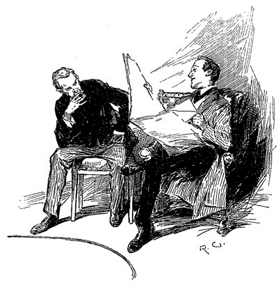
それはその日のエコー紙で、指差された紙面はくだんの事件に割かれていた。記事はこうだ。
大衆は、世間を賑やかしたご馳走を、ホープなる男の急死により失った。この者はイーノック・ドレッバー氏とジョーゼフ・スタンガスン氏殺害の容疑者であった。事件の詳細はおそらくもう闇のなかだ。ただ確かな筋の情報では、この犯罪は積年の痴情のもつれの結果であり、そこに恋愛とモルモン教が関わっているとか。被害者は両名とも若年の頃末日教徒の一員であり、このたび死んだ被疑者ホープはソルト・レイク・シティ出身であるそうだ。この事件がこれ以上の解決を見せなくとも、少なくとも人目を惹く形で我らが刑事捜査局の辣腕を見せつけることになった上、全外国人に教訓として、恨み辛みは本国にとどめ英国の地に持ち込まぬが賢明だということを知らしめることになるだろう。公然の秘密ではあるが、迅速な確保の栄誉についてはその全くが、著名なるスコットランド・ヤードの警官レストレードおよびグレグソン両氏の担うものである。この男が逮捕された部屋は、どうやらシャーロック・ホームズ氏なる人物の居宅で、氏も素人並みに捜査方面で才の片鱗を見せたらしく、ゆくゆくは両氏の指導の賜物として程々の技能は身につけられることを期待したい。何らかの表彰状がその尽力に見合った評価として両警官へ与えられると思われる。
「出かける際に言わなかったか？」とシャーロック・ホームズが声を上げて笑う。「これが僕らの緋のエチュードの結果だ。両氏に表彰状をやると！」
「心配ない。」と私は答える。「私は日記に一部始終を付けたから、そいつを絶対に世間へ知らしめてやる。そのときまでは、君も甘んじてひとり悦に入るしかないがね、ローマの欲張りのように――
人は我を嘲るも、我ひとりわが家で
悦に入り、倉の金をまんじりと見ゆ
悦に入り、倉の金をまんじりと見ゆ